Placed Horses
Coldblack, 2010 16.2+h dark bay gelding
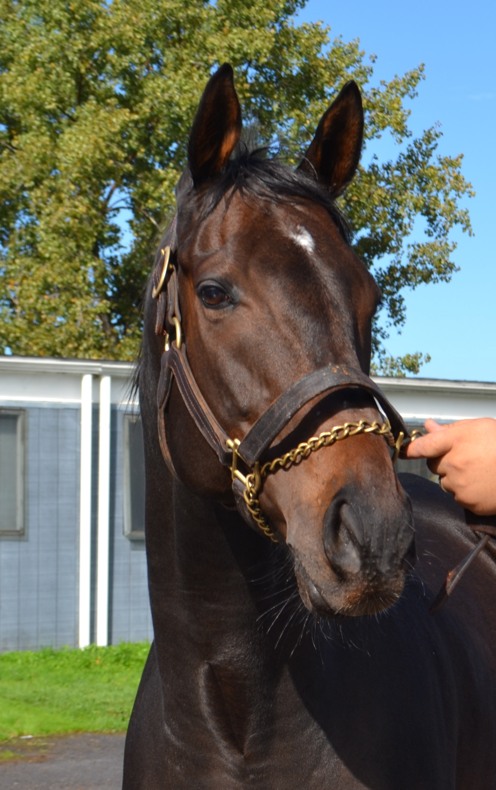
Coldblack is a well bred Kentucky bred beauty who was meant to be a nice racehorse, having sold for more than $100,000 as a yearling, and, indeed, he once was. His last start was over one year ago and his connections brought him back to the track this year, hoping to get him racing again. He has been steadily working out, with numerous published workouts, including one at the end of September, so he is fully RRP eligible for 2019. But Coldblack has some ankle soreness after working out, so his owner/trainer knows it is time to let him move on to a new less strenuous career. The trainer says he is a kind good horse to handle, and he was very polite for his photo session, as we admired his beautiful build and kind intelligent eye. He also showed off very nice movement, with lightness and suspension and good reach. Coldblack has been an earner of over $100,000 with 7 wins, 4 seconds and 5 thirds out of 46 lifetime starts, so he has had success on the track. With some down time and TLC and we think he will be successful in a new venture off the track, and we can see him enjoying trails, hunter paces, and perhaps lower level dressage or eventing. He is by Ready’s Image, from the Halo/Hail to Reason/Turn-to sire line, and his dam is also by a Halo line sire. Buckpasser, Wavering Monarch, Icecapade, and Best Turn (another Turn-to cross) are other sires in his pedigree that are sought after by sport/jumping disciplines for durability, good brains, and athletic/jumping ability. Please give this handsome kind soul a chance at a great new life.
Price $1000 neg.
Contact Angel Lopez 315-719-4253
Race record and pedigree: http://www.equibase.com/profiles/Results.cfm?type=Horse&refno=8873155®istry=T&rbt=TB#salesHistory
As always, a pre-purchase veterinary exam is recommended.
From The Point, 2011, 16h Bay Gelding
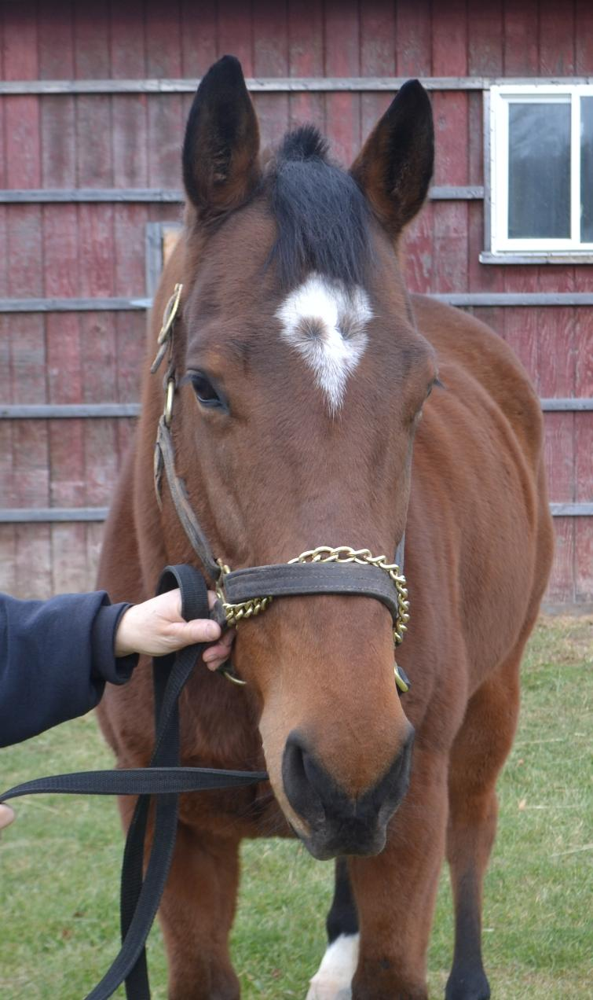
From The Point is approximately 16h tall and approximately 17h wide. Pictures do not do this boy justice, he is a TANK! His current connections feel he would make an excellent “husband horse” with a big western saddle because he is just thick all over! From the Point is relatively lightly raced with 7 starts. He has not raced in a few years. His trainer reports he has been a bit of a barn mascot. They bring him around and trailer him from track to track. Although he trainers, he has not had an official start in a few years. She reports he is a laid back easy keeper who enjoys his traveling. More recently he has been enjoying the farm life. He gets turned out daily in an individual paddock. It is reported that From the Point has no stable vides and is very, very easy to handle. From the Point is described as having only one goal in life-eating. A good home with plenty of grass and good feed is very important to From The Point! His trainer reports he is totally sound. He had a knee surgery many years ago to remove a chip but he returned to work sound and has remained that way. Clean X-rays are available. From The Point would likely be a good choice for someone looking to get into the OTTB world (but still has horse experience and working with a trainer) because of his calm demeanor. He is by Posse out of a Fit to Fight mare. Price: $1500neg Contact: Marisa 315-719-9665
As always, a pre-purchase veterinary exam is recommended.
Secret Dixie Dance, 2009, 15.3h chestnut mare
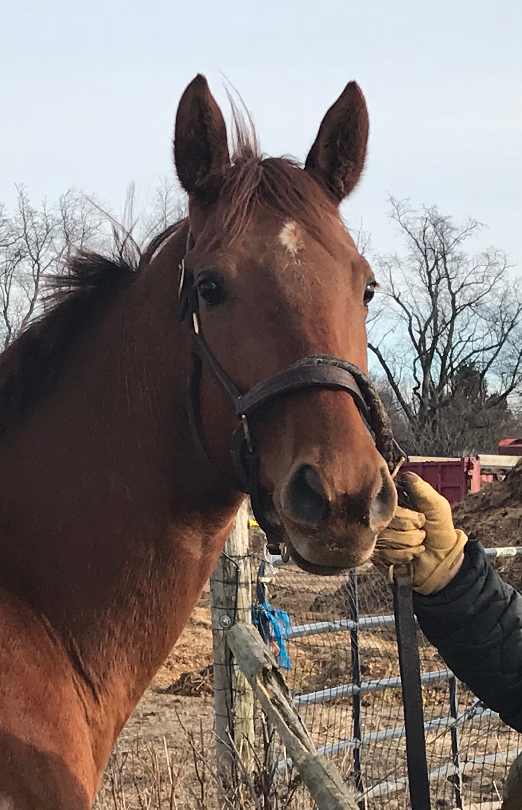
Nothing to beware of with this “red mare!” A quick break in the winter weather in Western New York allowed our volunteers to have a delightful outdoor meet and greet with Dixie and what a pleasant, intelligent and kind hearted mare she was for our volunteers. This mare was placed to a new home off of the racetrack this fall where she was turned out, let down and was being lightly started by an experienced young teen who was working with her trainer. Though her training was going well, the family situation changed and Dixie’s racetrack connections stepped up to help her find a new forever home. She is described as incredibly smart-- this mare knows her people and wants to please. She has been turned out in large groups and with a partner and does well with friends-- she would not do well as an “only horse” situation. She is currently barefoot and is described as sound and clean legged. We observed flowing, correct, good-strided movement that would surely do well in any discipline despite jogging barefoot on frozen, rocky ground. Dixie’s connections believe that she’s the type of horse that could take the RRP competition by storm and compete in several different rings and excel-- she is eligible for the competition this year! She was very quiet and well mannered even with a young colt acting rather excitedly a few feet away. Her trainer reports she has no vices. Dixie is by Freefourinternet out of a Strike the Gold mare. http://www.equibase.com/profiles/Results.cfm?type=Horse&refno=8745978®istry=T
Price: $1,000, very negotiable to an excellent home. References must be provided and will be checked. Contact: Dorothy Gentner (text preferred) 518-522-0229
As always, a pre-purchase veterinary exam is recommended.
Anddanother Doo, 2014 15.1h gray filly
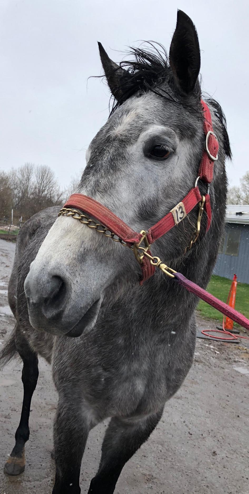
This pretty and sweet gray girl is described as quiet and very well behaved with no vices. Lightly raced with two wins in 8 starts, she injured a knee after a workout in late November. Her trainer reports that she has had the winter off, is barefoot, and is jogging sound with an excellent prognosis. She will be happy to discuss the injury, veterinary report, and x-rays with serious inquiries. An excellent home is essential— someone who knows how to give a young horse time to grow and who will patiently figure out “Doo’s” best new direction. She is by Saint Anddan (a son of AP Indy) out of Scooby Ruby Do. Rubiano, Fappiano, Halo, Danzig, Seattle Slew and Secretariat are close up in her pedigree, which also means she would make an excellent sport horse broodmare. However, with the kind demeanor and gentle personality that we observed on the backside this blustery April day, we could surely see her making a perfect pleasure horse.
Price: $850 Contact: Jamie Boldt 585-943-4298
http://www.equibase.com/profiles/Results.cfm?type=Horse&refno=9727114®istry=T
As always, a pre-purchase veterinary exam is recommended.
Pepe, 2010, 16.1+, Bay Gelding: retained for racing
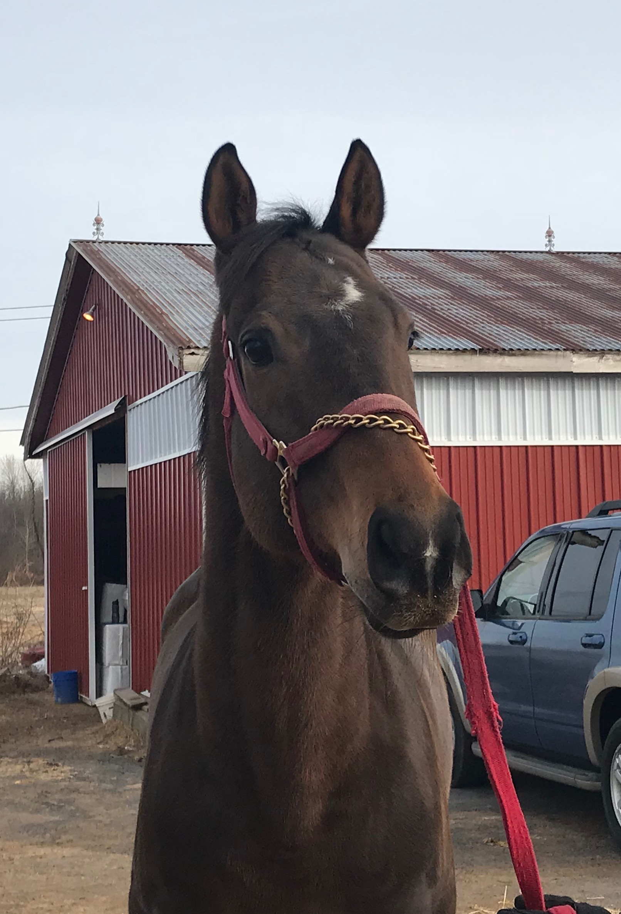
Looking for your new barn favorite?? This handsome bay gelding is a trainer favorite and checks all the boxes for so many of our shoppers. His groom couldn’t find enough great things to say about him and we could tell the whole farm would like to keep him around if he could! His thick bone structure and solid frame will take up even the tallest rider’s leg. He is racing fit-- he ran recently in Ohio before returning home to the Finger Lakes area to be let down and listed for sale. His trainer reports he lost a bit of weight in Ohio, but that he is typically an easier keeper. It is obvious that he will be massive once he is fully let down and fills out! He showed excellent movement during his jog video. We could see him really excelling as an eventing horse, although certainly he could go in any direction. He had a tie back surgery as a youngster which obviously has not hindered him. His feed buckets are placed on the ground for this reason. His trainer reports that on occasion he mildly cribs, only at feeding time or after getting peppermints but does not do it enough to warrant a cribbing collar. She reports he has nice manners for grooming and tacking and is a rider favorite. We think this hunk could be a popular one! He is by Harlan’s Holiday out of a Carson City mare. Pepe is RRP eligible!
http://www.equibase.com/profiles/Results.cfm?type=Horse&refno=8857063®istry=T&rbt=TB Price: $2500 References will be checked Contact: Jackie Stauffer: (text preferred) (585) 857-1413
As always, a pre-purchase veterinary exam is recommended.
HolyKitty, 2014, 14h grey filly
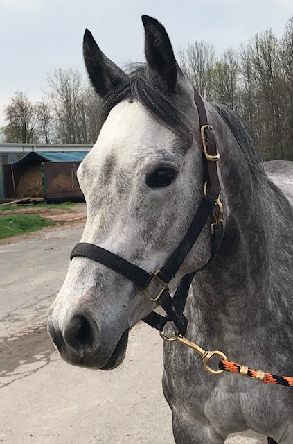
They say the best gifts come in small packages and this adorable filly is certainly no exception!! A striking stature with beautiful movement and mild manners too?? HolyKitty is truly the complete package, in all 14 hands of her!! She is reportedly sound with no stable vices. She is lightly raced with a few starts in Florida, but is just not showing enough talent to continue training to race at Finger Lakes. Kitty was very quiet during her photoshoot and video even with some excitement in the nearby area. Her handler reports that is typical of her and she is very level headed and sensible. She reports her young daughter loves to dote on her in her stall. She stands quietly to be groomed without being tied. She is by Biondetti out of a Holy Bull mare. We think she will appeal to polo players due to her age and height, but she would certainly be an adorable hunter pony with some retraining. Due to her quiet demeanor, she may be a good prospect for a junior/adult rider looking to get into the world of OTTBs with the help of a trainer.
Price: $2000neg
Contact: Marissa 315-719-9665 ehttp://www.equibase.com/profiles/Results.cfm?type=Horse&refno=9739910®istry=T
As always, a pre-purchase veterinary exam is recommended.
Addie Sunshine, 2014, 16.1 Dark Bay Filly: sold for racing
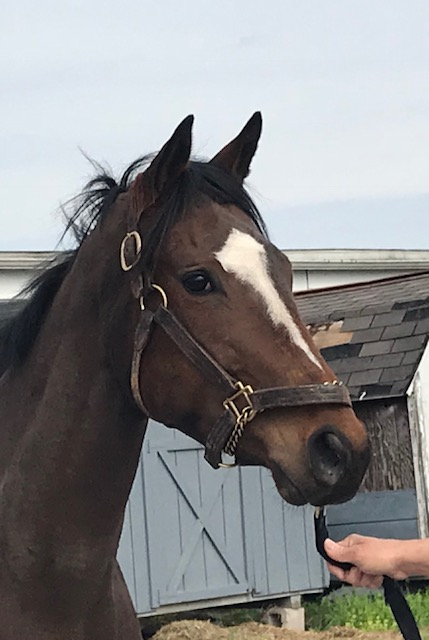
Who couldn’t use a “Little Miss Sunshine” in their barn?!?! This darling filly is described by her connections as a fine horse to work around, but she has just not been able to hit her stride on the track. After two attempts, she is just not exhibiting any promise on the race track and her connections are ready to let her move on to a career where she might find some more success. She spent the winter enjoying turn out in a herd, but she was brought back to racing fit for this spring. While she may have a “diamond in the rough” first impression right now, we have surely seen horses just like Addie glean in just a short amount of time once they adjust to life off of the track. Don’t miss your chance to bring some Sunshine into your barn today!! Addie is by Mr. Sekiguchi out of a Crusader Sword mare. Please note the contact person is assisting the trainer who speaks limited English. http://www.equibase.com/profiles/Results.cfm?type=Horse&refno=9687727®istry=T
Price: $1,500 Contact: Marissa 315-719-9665
As always, a pre-purchase veterinary exam is recommended.
Run Indra Run, 2014, 16.2 bay filly: retained by owner
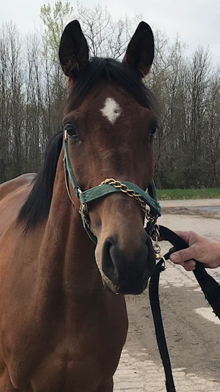
Something about this sweet filly has our volunteers convinced she is going to be a superstar in whatever her next discipline is. Indra is lightly raced with only 7 starts. She recently arrived at Finger Lakes with her starts being primarily at Charlestown. Her trainer reports she just has no desire to race and is too slow to continue training to bring to the races. He reports she is clean legged and sound. Indra was very, very quiet during her photo shoot and video. Her handler says she is good to work around and is not marish. It was hard to assess what her movement would be like if she really moved out because she was so quiet, but she showed glimpses of being a nice mover. We think her demeanor might be a good fit for the hunter ring but she has a nice uphill build that should appeal to riders in just about any sporting discipline. With some good turnout and hay, we think she will be stunning when she fills out! She is a bargain price and we think she is likely to sell quickly. She is by Kiss the Kid out of a Cimarron Secret mare. Please note the contact person is assisting the trainer who speaks limited English.
Price: $750neg Contact: Marissa 315-719-9665
As always, a pre-purchase veterinary exam is recommended.
Geraldine, 2011 16.2h chestnut mare
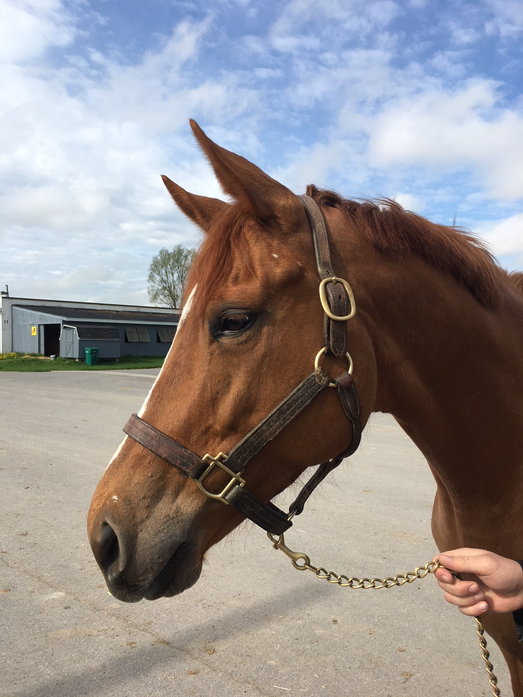
Our volunteers enjoyed their visit with this big gorgeous mare on a beautiful Mother's Day morning. We were told she was a real sweetie and she did not disappoint. She was so quiet but friendly and was such a lady. Her trainer said she bowed her right front tendon last year and had eight months off. They put her back in race training in February but she developed heat in the leg so they decided it was time for her to transition to a new career. In our experience, with proper time, bowed tendons are not usually an impediment to most new careers. Geraldine's groom says she loves lots of attention, is a very easy keeper, and is good around her own children, and that the mare may do very well with children given the right training. Geraldine was a good consistent race horse, with 5 wins and 13 in the money finishes in her 27 starts. She is by Pollard's Vision, out of a mare by Phone Trick. Dixieland Band, Affirmed, Clever Trick, Blushing Groom, and Northern Dancer are other prominent sires in her pedigree. Price: $1500 negotiable Contact: Jeff Englehart 585-329-0716
Race Record and pedigree: http://www.equibase.com/profiles/Results.cfm?type=Horse&refno=9129057®istry=T&rbt=TB
As always, a pre-purchase veterinary exam is recommended.
U Stylin, 2015, 16h Bay filly
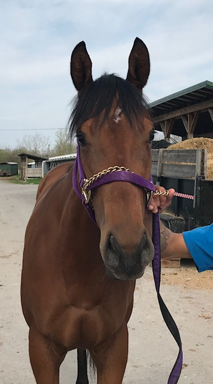
Think of the fun you could have with this name! U Stylin sure is styling! This lightly raced cutie is absolutely gorgeous and pictures do not do her justice. At only 3 years old, she has quite the build on her already and she will continue to grow and fill out. She would be a good option for a taller rider or a rider needing a horse to fill up their leg. U Stylin was very quiet during her spring photo shoot and seemed to enjoy basking in the sun. She seemed very people oriented and was extra scratches and treats from her handler and our volunteers. Her handler reports she is very kind and easy to handle in the barn. They report she is well behaved on the walking machine and has no known vices. Her trainer reports she has a small bone spur in the upper knee joint so she does not want to continue racing her. She has recent xrays which are available to seriously interested parties and the vet feels she would be fine for other less strenuous disciplines including jumping. Since she is only three and is very visibly going through a growth spurt, we think this is the perfect opportunity to get a gorgeous, sweet horse, give them some down time to rest and finish growing, and restart after some turnout time! U Stylin is by Utopia out of a Posse mare. http://www.equibase.com/profiles/Results.cfm?type=Horse&refno=9958268®istry=T Price: $1000 Contact: Amber 518-316-0089
As always, a pre-purchase veterinary exam is recommended.
Punching Bag, 2015 17h dark bay gelding
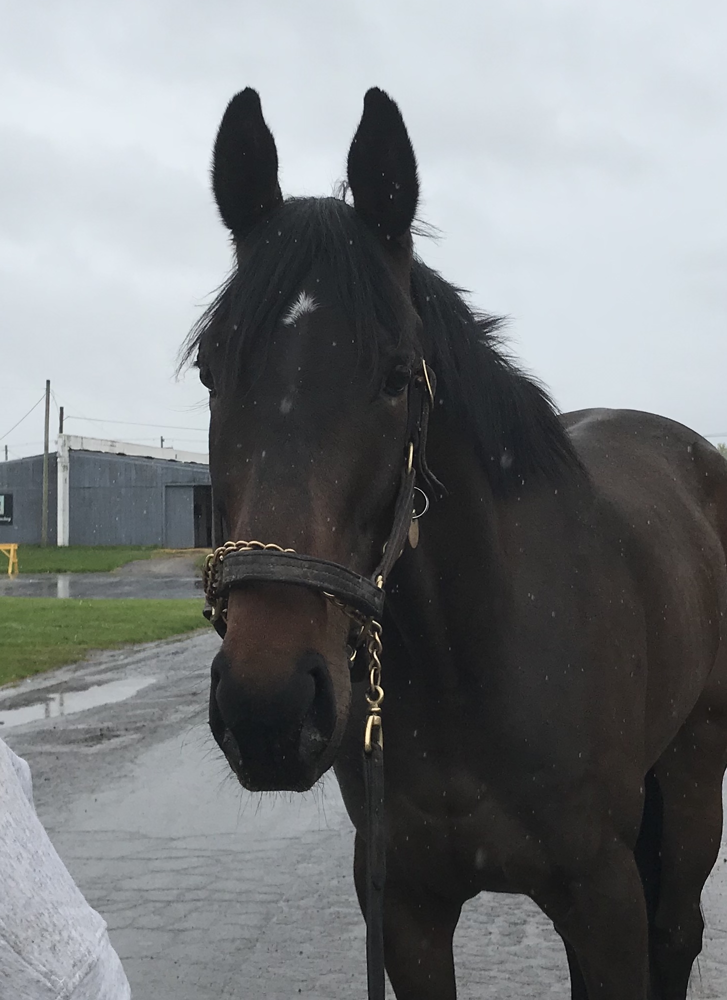
He is HUGE -- and he hasn't finished growing into his big lanky frame. When he is fully grown, filled out, and remuscled for a new discipline, he is going to be quite the impressive equine specimen! Please then give him a new name better suited for his kind personality and impressive stature! After only 5 starts, it is obvious that Punching Bag is just not going to make it as a racehorse, but we sure do see sport horse potential in him. He showed light springy movement, with good push from behind, and this was just three days after his last race. His trainer says he is sound, and we observed clean legs. She says he is good to handle, but he is an energetic big young horse, so he is best suited for an experienced rider who can give him time to grow up. She affectionately calls him "Llama." He has an excellent pedigree for sporting/jumping disciplines. His sire Teuflesberg, is from the same Johannesburg/Hennessey sire line as new racing superstar Justify, and Teuflesberg's dam is from the Devil's Bag/Halo line. Punching Bag's dam is by Two Punch, who is one of the most coveted sport horse sires. Everyone says they want young, huge, sound geldings with upper level sporting potential, so if you are seriously interested you should call fast on this guy. Price: $3500 Contact: Adrianne D'Alessandro 585-281-1810 call or text
http://www.equibase.com/profiles/Results.cfm?type=Horse&refno=9905780®istry=T&rbt=TB
As always, a pre-purchase veterinary exam is recommended.
Harmon's Giant, 2014 16.1h dark bay filly
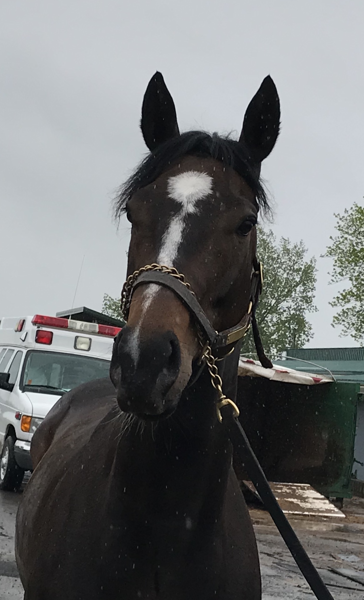
This lightly raced young beauty dazzled us with her dapples, which stood out even on a gray rainy morning. After just a couple of races, she is not showing enough racing ability to persist with a racing career, but that is the sporting world's gain, since she has the big shoulder and pretty movement and pedigree to excel in jumping, eventing, and dressage. She is by Frost Giant, a son of Giant's Causeway and a Gone West mare. Her dam is by Seeking the Gold out of a mare by Private Account, with Hoist the Flag and Buckpasser in her female family. These are some of the best sire lines for jumping and eventing. On the day we photographed her, she had breezed earlier in the morning, and showed no post workout stiffness for her jog video. She displayed light toe pointing movement. Her handler described her as sound, and as having good energy and work ethic -- she said she is a filly that likes to gallop. That sounds ideal for cross country! The handler said that Harmon's Giant is a good girl to handle and work with, and is not marish. Because Harmon's Giant is young, forward, and athletic, we think she is best suited for a more experienced rider looking for a sport horse prospect -- and we think she is an excellent sport horse prospect!
Price: $1,000 negotiable Contact: Linda Dixon 585-329-9062
http://www.equibase.com/profiles/Results.cfm?type=Horse&refno=9706706®istry=T
As always, a pre-purchase veterinary exam is recommended.
Courageous Dreamer, 2015 16.1h bay gelding
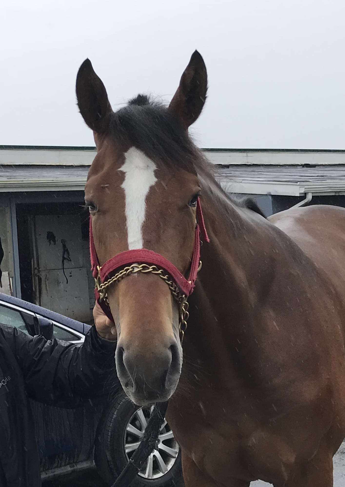
This elegant young gelding is stunning -- the photos in a gloomy downpour do not do him justice. You must come see him in person! After just 7 starts, his trainer has decided that he is just too slow to be a good racehorse, but she realizes that with his looks, beautiful movement, and quiet temperament, he could be a star in the show ring. Since he is only three, Dreamer is still growing, and we think he could easily top out at 16.2 or more. His handler told us that he is very sound, and we observed clean legs. The trainer describes him as a very kind horse, easy to work with. One of our volunteers jogged him, and she can attest that he was very polite despite lots of activity going on around him. He showed beautiful movement, with suspension, lightness, and good reach. With his elegant good looks we can see him as a show hunter, but his strong shoulder and balance also make him an excellent eventing or dressage prospect. He is by Courageous Cat out of a mare by Caller I.D. Rahy, Blushing Groom, and Phone Trick are prominent sires popular with sporting disciplines who are close up in his pedigree. We think this flashy youngster will go fast, so don't hesitate to call if you are seriously interested. Price: $2,500
Contact: Linda Dixon 585-329-9062 (call or text)
http://www.equibase.com/profiles/Results.cfm?type=Horse&refno=9923945®istry=T
As always, a pre-purchase veterinary exam is recommended.
Flat Leaver, 2011 16.2h bay gelding
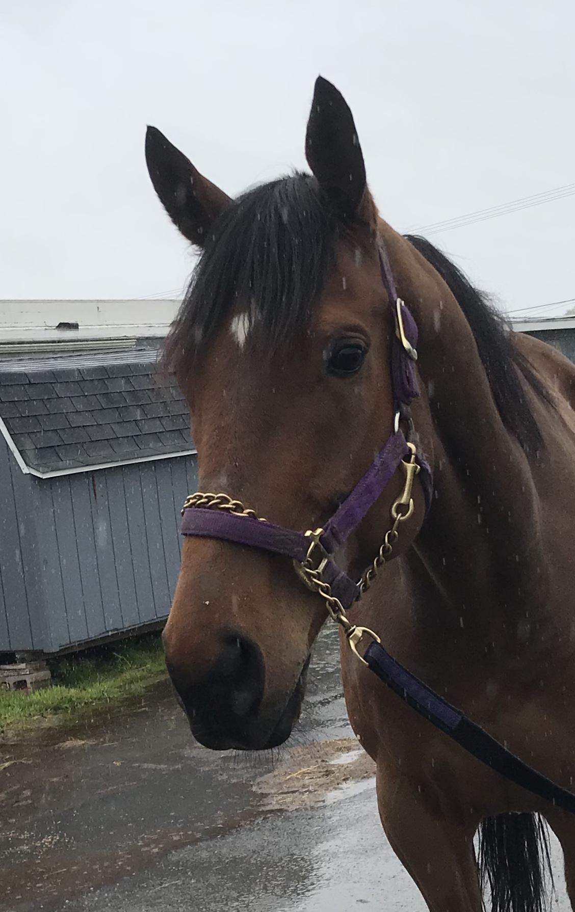
He may be a massive big boned guy, but he has the personality of a puppy. His owner/trainer showed us photos on her phone of Flat Leaver cuddling with her 4 year old daughter, including an adorable photo of Flat Leaver happily lying down in a soft bed of shavings with the little girl draped across him. She reports that Flat Leaver has a wonderful laid back, friendly and relaxed personality, but that he is also a very game hard trying horse. He has won 8 races in his 38 race career, with 18 in the money finishes -- big hearted and game indeed! The owner/trainer says he is sound and has always held up well to racing, and she is reluctantly letting him move on to a new career because she has lots of young horses coming in who will take up her time. On the day we photographed him, Flat Leaver had recently lost a front shoe and was still tender footed from that, so jogging on the hard pavement was not ideal. But the trainer sent us a video she had recently taken of Flat Leaver jogging in the grass paddock at home, and even with the uneven footing we could see good movement, suspension and engagement from behind. Flat Leaver is by Flatter, a son of AP Indy, and he is out of mare by Pentilicus, who is by Fappiano out of an In Reality mare -- very popular sport/jumping sire lines. Price: $2000 negotiable Contact: Amber Cobb 518-316-0089 http://www.equibase.com/profiles/Results.cfm?type=Horse&refno=9111388®istry=T&rbt=TB
As always, a pre-purchase veterinary exam is recommended.
Grandview, 2014 16.1h bay gelding: new price
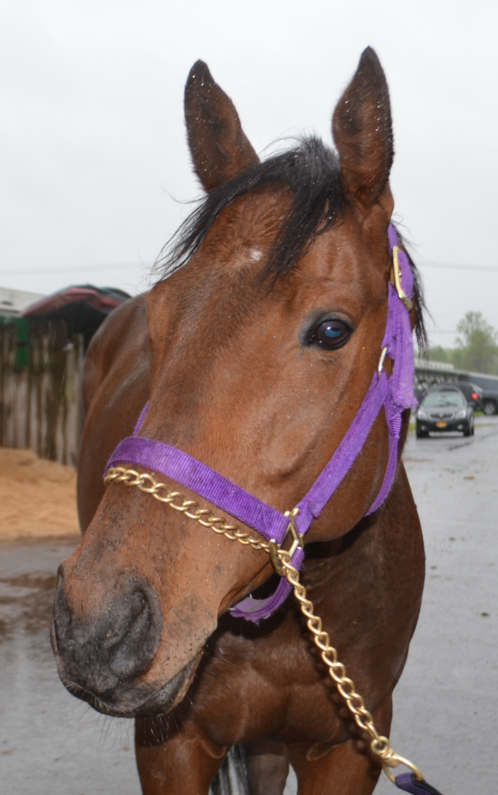
Grandview is a solid bodied guy with a great personality. His owner/trainer describes him as fun to work with, laid back, and very playful and curious, and as an example she told us about a time when he was turned out in the fenced in back yard at her home, alongside a child's swingset, and she looked out the window to watch Grandview happily pushing the swing back and forth. It sure does sound like he has the mind for competitive trails, or anything else you want to do! Earlier this spring, Grandview started developing an osselet on his left front ankle, so his owner/trainer blistered the ankle, pulled his shoes, and has given him time off. She says he is now ready to go back into light work retraining him for a new discipline, and once he fully heals from the blister and the osselet is cold and set, he will have no limitations for any discipline. Because he is barefoot, Grandview moved a bit short while jogging on the hard pavement, but we could see that he has nice toe pointing movement and a good push from his strong hind end. He is by MIzzen Mast, who is by Cozzene and a grandson of Caro -- a sire line very popular for sport/jumping disciplines. Price: $500 Contact: Amber Cobb 518-316-0089 call or text
http://www.equibase.com/profiles/Results.cfm?type=Horse&refno=9672682®istry=T&rbt=TB
As always, a pre-purchase veterinary exam is recommended.
Deputy's Daughter, 2012 15.3h bay mare
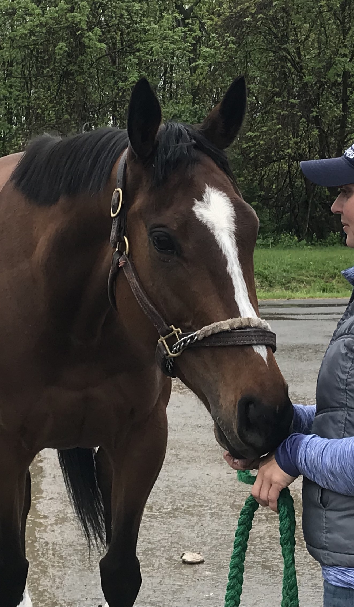
This beautiful daughter of popular sport horse sire Freud has been with her owner since she was a three year old, and there is a strong bond between them. She is affectionately known as "DD," and DD sure does love peppermints! We watched her settle right down and stand happily in the rain once her owner produced the magic candies. DD's owner says she is very sweet to groom and handle, but that on occasion in her stall, loud noises can set her off, and then she just needs her "reset" time. DD far prefers turn out to stall living -- her owner thinks she would be happiest in a situation where she gets maximum turn out time, and she reports that DD happily turns out with anyone, mares, gelding, ponies, minis. DD is reported to be good to ride, but very forward, so an experienced rider will be best for her. Her owner thinks that DD will love hunter paces and cross country. She reports that DD is sound, with just an old set osselet that causes no issues. We photographed DD just a couple of days after she raced, and she displayed good movement despite some of the hind end tightness typical of horses just after a race. DD has a great pedigree for sport/jumping disciplines. Her sire, Freud, is a full brother to Giant's Causeway, and her dam is by Silver Deputy, a son of Deputy Minister. Price: $2500 Contact: Marisa 315-719-9665
http://www.equibase.com/profiles/Results.cfm?type=Horse&refno=9371233®istry=T
As always, a pre-purchase veterinary exam is recommended.
Hisgoodside, 2013 16.1h chestnut gelding
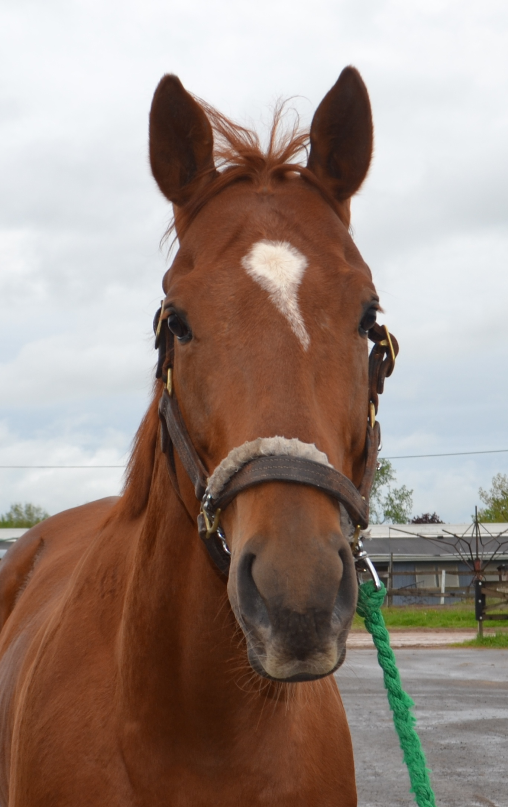
This handsome, kind, friendly, and laid back guy will surely get on your good side if you are lucky enough to bring him home! His handler says he is a "really cool" horse, quiet, sound, lightly raced with only 5 starts, and just too slow to continue trying to make him a racehorse. He has lived most of his life on his breeder's farm, where he has been trail ridden, exposed to tractors and trucks and lots of activity, and proven to be an unflappable even tempered horse who just takes it all in and goes on his quiet way. Hisgoodside can go in any new career direction, but with his laid back temperament and nice toe pointing trot we can see him excelling as a show hunter. With his balanced build and good shoulder, he looks like he will be a good jumper, and his pedigree has lots of sport horse potential. He is by Stonesider,a Giant's Causeway son who has many offspring that have been placed through our listings who are succeeding in new careers in eventing, dressage, jumpers, and show hunters. His dam is by Charismatic, a son of Summer Squall from the Storm Bird/Northern Dancer line. This young, sound, lightly raced, good boned, nice moving guy with a great brain has so much potential for so many disciplines, and he fits the criteria of what so many people say they are looking for, so call fast and don't let this gem get away! Price: $3,000 Contact: Marisa 315-719-9665
http://www.equibase.com/profiles/Results.cfm?type=Horse&refno=9639632®istry=T
As always, a pre-purchase veterinary exam is recommended.
Toccet's Image, 2007 16h bay gelding
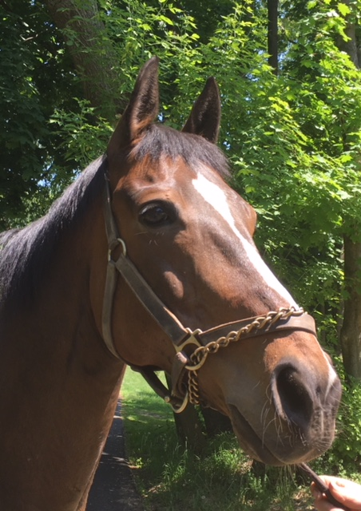
Located at private farm in Irondequoit, NY (just north of Rochester, about 30 minutes from the Finger lakes Race Track). His gorgeous, shiny, filled out good looks are a testament to how TBs thrive once off the track! We first listed Toccet's Image 3 years ago while he was still racing, but then his owner/trainer decided to hang on to him because his services were needed at his farm as a steadying influence in turn out for youngsters. But those youngsters have now grown up and are in race training, and as the owner/trainer says, Toccet's Image is far too nice of a horse to not have a job. He says he loves to work, and really loves having a job. He says Toccet's Image is "bombproof" and could do anything. He is smart, sound, and has become a loved member of the family -- but they are willing to let him go to the perfect new home that will give him a job and bring out his aptitude for any new discipline. Toccet's image has the good mind, pedigree, build, and nice movement for sporting disciplines, but he could also enjoy trail riding and being a pampered pleasure horse. He has been barefoot at the farm, and his owner/trainer says he has good feet. For his video he jogged barefoot on hard pavement, showing off very good movement with lightness, balance, and good engagement from behind. He is good to handle, good to work with, good in turn out with other horses, good to load and ship -- just an all around good horse! He is ready to start retraining for a new career! Do not let his age deter you -- already let down war horses like him who are still sound and eager to work are true gems, who will reward you for many years. Toccet's image is by Toccet, who is a son of Awesome Again out of a Cozzene mare. Caro, Blushing Groom, and Deputy Minister are prominent sire names in his pedigree who much loved in the sporting world. Toccet's Image's dam is by Smart Strike out of an Affirmed mare. A very good home is essential, an references will be required. Price: $ 1,000 negotiable Contact: Dave Donegan 585- 330-4466
http://www.equibase.com/profiles/Results.cfm?type=Horse&refno=8099095®istry=T
As always, a pre-purchase veterinary exam is recommended.
Queen's Gambit, 2012 15 1/2h grey mare

Grey lovers, here is a beautiful, sweet, sound mare for you! This solid bodied sweetheart has only 4 starts, and never showed any aptitude for racing, but she has all the potential in the world for many other disciplines, from children's hunter, to barrels, to polo, to pleasure. She last raced in 2016, and was in race training in 2017, which makes her still eligible for the RRP. She is a much loved homebred, so you will be able to get her whole history from her owner/trainer. Since leaving the track last year, she has been turned out at the owner's small farm, babysitting young horses who are now in race training, so it is time to find her a new job. She is great in turn out with other horses. She has a big barrel and solid build, and will take up leg, so despite her small size (we tape measured her at 15 hands and a half inch) we think she will fit many sized riders. Her owner says she is very good to handle, quiet and well behaved. He thinks she will be suitable for a kid or young teen who is working with a trainer who knows how to start OTTBs for new disciplines. She is barefoot, and has good feet. She jogged politely on hard pavement and showed very nice movement. She has an excellent pedigree for sport/jumping disciplines. She is by Frost Giant, who is a son of Giant's Causeway out of a Gone West mare. Her dam is by Rizzi, and she has Spectacular Bid, Pleasant Colony, and Sir Ivor in her pedigree. A very good home is essential, and references will be checked. Price: $1500 negotiable Contact: Dave Donegan 585-330-4466
http://www.equibase.com/profiles/Results.cfm?type=Horse&refno=9311938®istry=T&rbt=TB
As always, a pre-purchase veterinary exam is recommended.
Schettino, 2013 16.2h grey gelding
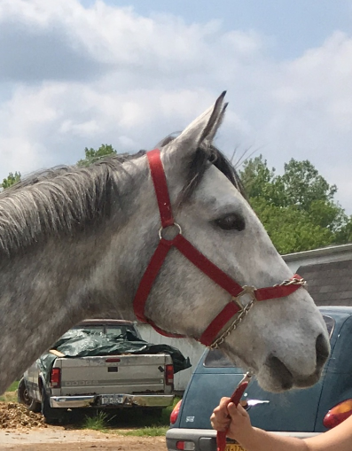
This beautiful big grey is described by his handler as a lover, a totally sweet, friendly, and smart horse. Our volunteer got to experience his sweet friendliness for herself; as she walked up to his stall while taking down information about him, he started nuzzling her and soaked up her face pats and happily took the peppermint she offered. Schettino had raced just a few days before his photo session, and was eased up, but walked off, on a slippery muddy track that he detested. He still seemed stiff behind from this mudbath racing experience, and his handler did not know how to jog a horse, so it was hard to get a good jog video. While Schettino raced well earlier in his 25 start career, he has shown little interest in his most recent starts, so it is time to move him on to a new career. He is by Seeking Beauty, who sired Seeking Fame, the overall show hunter winner at the 2017 RRP -- so we think he has good genes to excel as a show hunter. And he certainly has the quiet demeanor and good brain. Price: $1,000 negotiable Contact: Tony Lima 407-709-2500
http://www.equibase.com/profiles/Results.cfm?type=Horse&refno=9546416®istry=T
As always, a pre-purchase veterinary exam is recommended.
Trump Won, 2014 16+h liver chestnut gelding
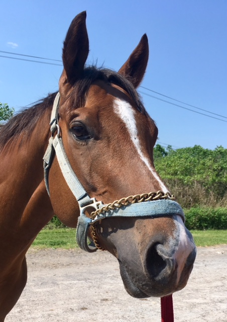
Everything about this horse impressed us -- from his good looks and conformation to his pretty head, to his nice balanced toe pointing trot, to his friendly and chill personality. He has won twice in 11 starts, but hasn't been showing much lately, so it is time to let him find a new career. We think he has outstanding potential for many new disciplines, from the show ring to the x-country course. The assistant trainer says he is sound, and we observed clean legs. She says he is good to handle and work with, and that while he can get "happy" when he knows he is going to the track he never does anything wrong. He posed like a gentleman for his photos session, and jogged politely on a loose lead, showing very nice movement that caught the eye of a show hunter trainer who accompanied our volunteer. He is by Smart Bid, a son of Smart Strike, and his dam is by Royal Academy, who is a son of Nijinsky. Young, good looking, sound, nice moving geldings are what everyone wants, and considering that he is the whole package, he is offered at a bargain price because the trainer wants a more successful racehorse to occupy his stall. Price: $1000 negotiable Contact: Michelle Tasso 585-472-2804. Text preferred; no calls after 8 pm please.
http://www.equibase.com/profiles/Results.cfm?type=Horse&refno=9673545®istry=T
As always, a pre-purchase veterinary exam is recommended.
Gallopintocongaree, 2014 16.1h bay gelding
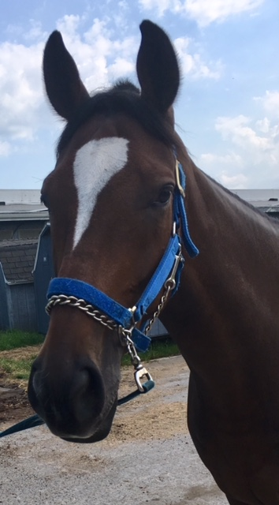
This beautiful young gelding is described by his owner/trainer as a lover who craves attention, a total sweetheart to handle, very comfortable and polite to ride, and very smart. He showed off light, lofty movement with nice cadence for his jog video. Unraced, he incurred a mild bowed tendon while training in Florida this past winter. He was given state of the art PRP treatment and rest, and has progressed to hand walking. The tendon was ultrasounded in mid-May, and the vet said it was healing very well, and that with a bit more rest the horse would be ready for any discipline with no limitations -- the vet said he could even go back to racing, but the owner/trainer knows he is too nice of a show hunter or dressage prospect so she wants him to find a new career. Gallopintocongaree is ready to enjoy turnout, and by mid-summer you can start ground work and retraining. His trainer says he is great in turn out with other horses, has good feet, trailers well, stands, clips, has no vices -- just a wonderful horse to have in the barn. With his great shoulder, uphill build, and lovely balanced movement, and quiet friendly personality, we think he is an excellent prospect for the hunters or for dressage. Do not let the mild bow deter you -- it was quickly and properly treated, and his is vet cleared for any discipline! This is the type of horse that would be three times the price if not for the almost fully healed mild bow -- so he presents an enticing opportunity to get an exceptional horse at a bargain price. He is by Congaree, who is from the Blushing Groom sire line, and he is out of a mare by Victory Gallop, who is from the Cryptoclearance/Fappiano sire line. Halo, Alydar, Damascus, and In reality are other coveted jumping sire lines in his pedigree. Price: $1000 Contact: Linda Dixon 585-329-9062
http://www.equibase.com/profiles/Results.cfm?type=Horse&refno=9740572®istry=T
As always, a pre-purchase veterinary exam is recommended
Neutronstar (IRE) 2012 17h Chestnut Gelding
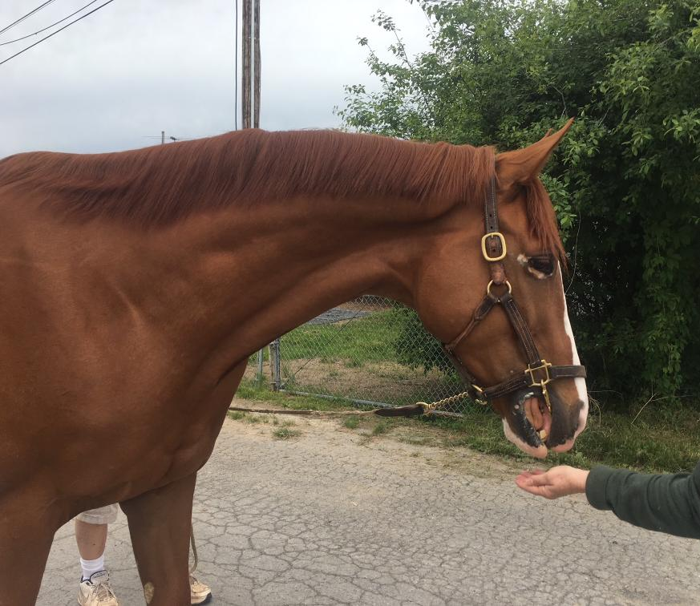
As volunteers we get to see so many fabulous horses at the track, rarely do we get to meet a horse as unique as this one. We stopped at the trainers barn before he arrived and met a friendly, inqusitive and distinctly marked chestnut gelding. When his trainer/owner arrived he brought out this enormous and stunning boy. We gasped at his tremendous presence. He stood motionless in the road while he told us that this this guy was sired by the Irish stallion Galileo and was out of the GB mare Brown Eyes by Danehill. Imported to the US he has been racing for several years but racing just doesn't seem to be his thing. His owner feels it's time for him to try something else and he thinks he might have a future in eventing. While he stood quietly and we fussed over him, his owner stressed only experienced trainers/riders would be appropriate for this impressive horse. We did tape him and he was a solid 17h. He truly has the looks of a warmblood with impressive substance and bone. He jogged quietly down the road and was never distracted. If this horse speaks to you and you have the experience at this level contact his owner.
Contact: Mark Gory 215 850-5722
Price: $3500
As always, a pre-purchase veterinary exam is recommended.
Stable Boy Kelly, 2010 16.2h Gray Gelding
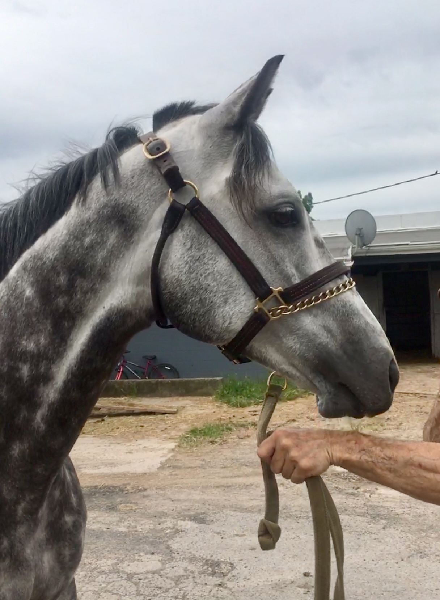
This friendly boy greeted us with snuggles and searching for mints. We complied and his trainer laughed saying he would do anything for them. She said he has lost interest in racing this year so it's time to move on to a new career. She said he is quiet, a real personality and turns out well with other horses. She said he is sound with no vices and feels he could go in any direction.We saw a great topline and fluid mover. His sire is Lion Heart and his dam is Mystic Chant by Unbridled Song. His trainer felt he would make a great hunter prospect but whatever direction he takes this flashy boy will be noticed. Don't wait, bring your mints and see for yourself, this boy won't be listed very long.
Price: $1500
As always, a pre-purchase veterinary exam is recommended.
Picky Bits 2013 16.1 h bay mare
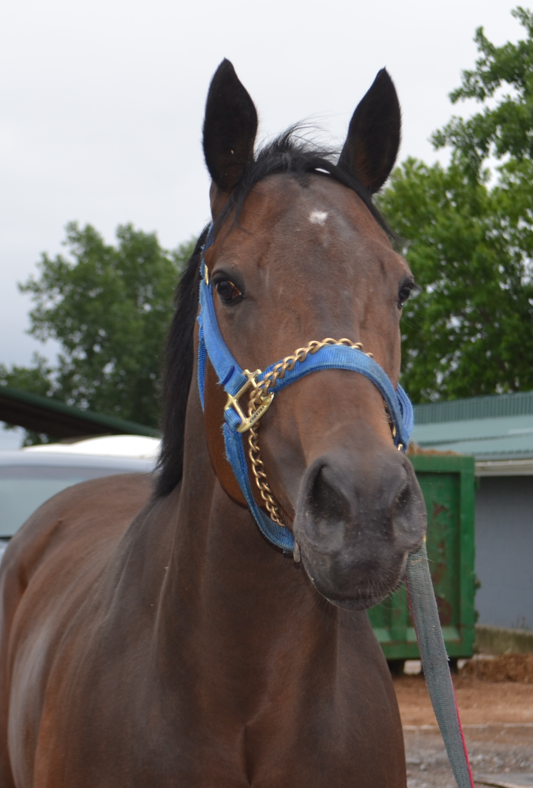
Picky is a beautiful mare who has amply rewarded her connections with honest effort every time she has been asked. She has been very successful in her racing career, compiling a solid 7 wins and 19 in the money finishes in 32 starts -- well over 50% in the money! This record is a testament to her durability and heart. Picky is being offered for a new non-racing career because she has started occasionally flipping her palate which causes her to "spit the bit" and take herself right out of the running. Her handler stated that she does not make noise when this happens. It is unlikely that this would be problematic in less strenuous exertion, but it is something to be discussed with your veterinarian. We were impressed with her solid build and quiet demeanor. Her handler reports that she has no vices and is very easy to get along with. We were also impressed with Picky's lovely light movement, with a lovely trot with good reach and engagement from behind. Picky also has a great pedigree, with definite broodmare potential. She is by the excellent KY sire Successful Appeal. Her dam is a multiple stakes winner; her second dam is multiple stakes placed, her 4th dam produced the dam of multiple grade 1 stakes winners, and her tail female family goes back to Home By Dark and Sunday evening -- this is one of the best female families in the U.S. Stud book, with countless graded stakes winners and graded stakes producers from this family.
http://www.equibase.com/profiles/Results.cfm?type=Horse&refno=9505347®istry=T
Contact Adrianne 585-281-1810, call or text
Price $3000 neg.
As always, a pre-purchase veterinary exam is recommended.
In Harms Way, 2010, 16.2h Bay Gelding
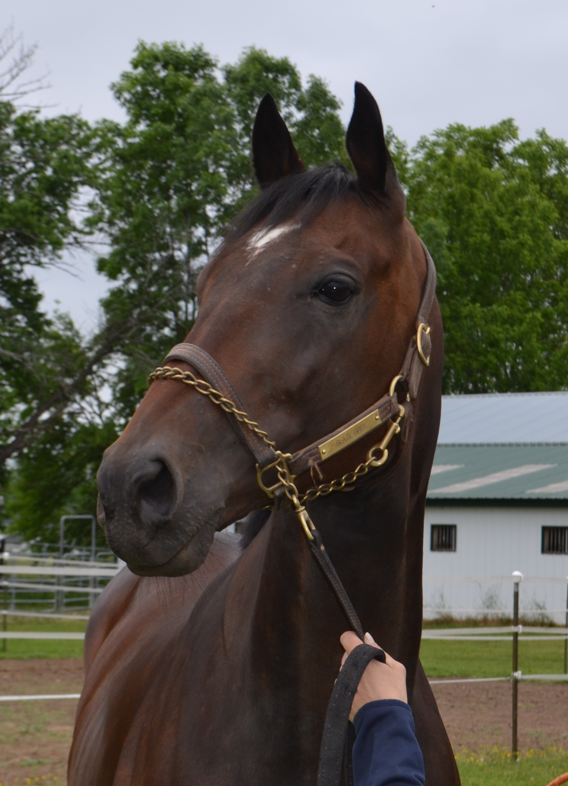
Located at a farm very close to the Finger Lakes Race Track in Farmington, NY (near Rochester, NY). We listed this great gelding last year and he was snapped up quickly. His connections took him back after his purchaser stated they would be euthanizing him due to foot soreness. “Harmie” returned home to the safety of his racing connections with horribly short feet and 200 lbs underweight. They let his feet grow out, added some shoes, and with appropriate farrier care and proper nutrition, Harmie is back to his stunning, sound, goofy self. Thank goodness for racing connections who love and follow their horses! He has been enjoying turnout with his best buddy. He is currently being ridden around the farm and in the ring, so he is not RRP eligible, but he is ready to start right back up into training for his next career! He is a great option for someone who wants to enjoy some of this nice summer weather with their new OTTB! This handsome hunk is described by his connections as an “in your pocket” type-- and he put his charm on today for his meet and greet with our volunteers! He has had a strong race career, earning over $196,000 in 27 starts, but his owner/trainer is ready to let him retire while he is still sound, capable and content. In his time with his current connections, he has become the barn mascot-- his charming demeanor, solid bone, excellent conformation and athleticism make him a shining example of the care he has received. His sire, Hook and Ladder is known for his propensity to throw babies with good brains and athleticism and jumping ability. We know several that have gone on to successful sporting careers. This talented, classy gelding will not last long-- bring him home and make him your next sport horse! Horses in this shed row are always in good flesh, well cared for, and complete with a super shiny coat. His connections are honest and upfront to ensure their horses find the best of homes. They will require references. Price: $1000neg Contact: Lisa Reed 585-305-6014
As always, a pre-purchase veterinary exam is recommended.
Copywriter, 2010, 16.2h Bay Gelding -- to FLTAP
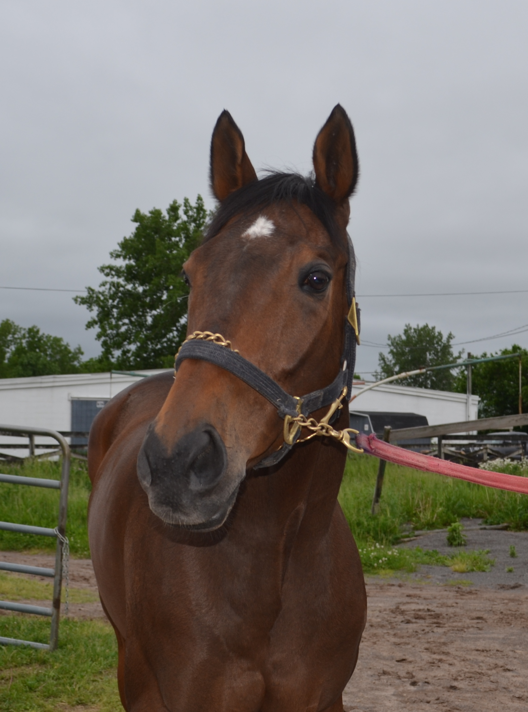
We listed this great gelding last year and he turned lots of heads, but he was retained for racing. His connections have decided it is definitely time for Copywriter to move onto a different discipline, so here’s your chance to get the boy everyone missed out on last meet! Copywriter is described as kind, intelligent, and hardworking. His trainer reports he prefers to run long and has great endurance. She feels he would make an excellent cross country of fox hunting horse, but he could certainly go in many different directions. He is quite tall and filled out, so he is a good choice for a taller rider needing something to fill out their leg. Copywriter is really the perfect age for retraining. He is past the goofy, baby brain and ready to get right down to business. Copywriter has a beautiful correct and balanced conformation. He was polite and quiet during his photo shoot and jog video on a very chilly morning (after some raging hot days) that had many horses feeling silly. His trainer reports he is sound for any discipline and that he has no vices. He is by Read the Footnotes out of a Honor Grades mare. This is a bargain price for a sound, kind, big gelding so we suggest calling fast! Price: $1500 Contact: Julie Smith 585-500-5333
As always, a pre-purchase veterinary exam is recommended.
Next Big Thing, 2014 17h chestnut gelding
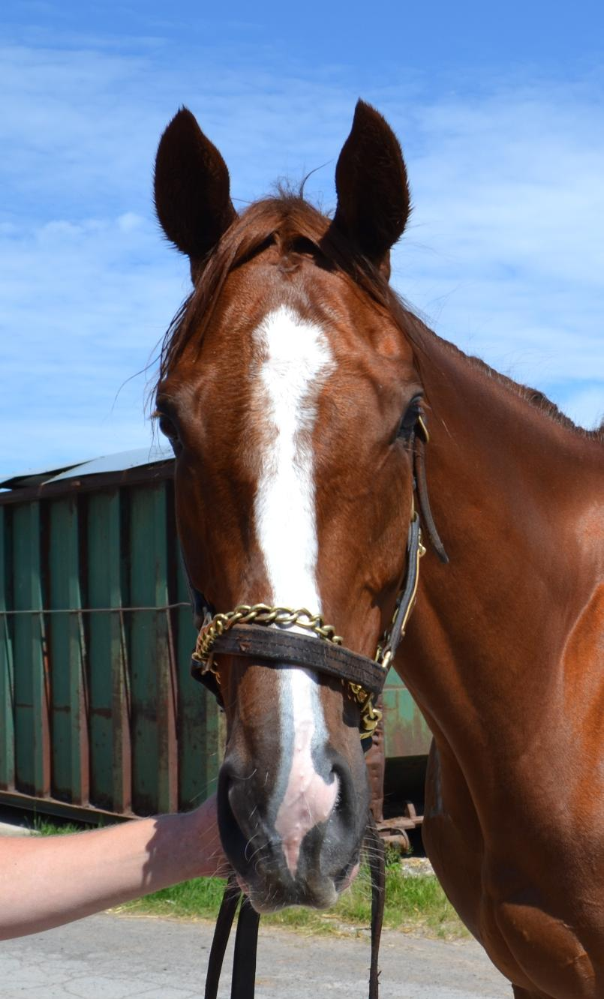
Located at Finger Lakes Race Track, Farmington, NY (near Rochester) We think this stunning big guy just might indeed be the next big thing in the show hunter ring or in dressage or eventing! Known as "Biggie" around the barn, the assistant trainer, who is the contact person, says he is his favorite horse in the barn because of his great personality. He is quiet, friendly, really good to handle, an all around nice horse. And they say he is very sound. What Biggie isn't is a good racehorse -- the assistant trainer says he likes to just gallop along at one even pace, which has only been fast enough to win one race, and now that he has to face winners he isn't competitive. But a slow even pace sounds perfect for the hunter ring! Biggie was very quiet and chill for his photo session, and jogged quietly on a soft lead, showing good suspension and cadence with a toe pointing reach and good engagement from behind -- a very good mover indeed. The assistant trainer tells us that they put a measuring stick on him, and he is 17h right on the mark -- and as a four year old, he might even grow a bit more. We admired his uphill build, strong shoulder, and flashy good looks. Biggie is by Stonesider, a Giant's Causeway son who is known for getting big, solid boned, good moving horses who are good jumpers. We have placed several Stonesider offspring into new homes where they are doing well in eventing, dressage, and in show hunters. Biggie's dam is a stakes winning daughter of Catienus -- another sire known for getting good jumpers with good brains. Big sound young horses with this much sport horse potential don't come along every day -- so if this is what you are looking for, you should act fast to make Biggie your next big thing! Price: $5,000 (slightly negotiable to an excellent home with very good references) Contact: Paul Ubbink 585-727-8309 (text only please)
http://www.equibase.com/profiles/Results.cfm?type=Horse&refno=9705801®istry=T&rbt=TB
Cent of a Giant, 2015 15.2-3h grey gelding
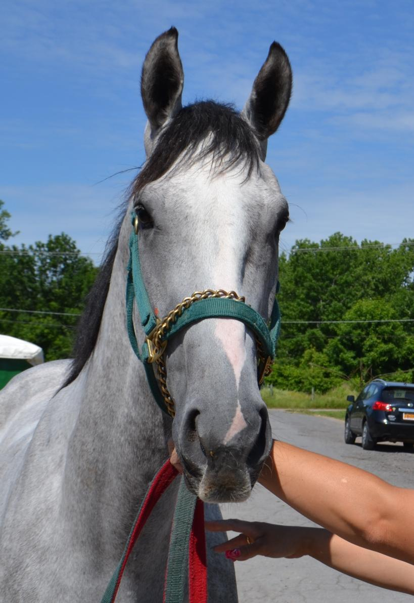
Located at Finger Lakes Race Track, Farmington, NY (near Rochester) Young, sound, lightly raced, good moving, and GREY! Lots to like about this handsome dappled guy -- and he also has a great sport/jumping pedigree, since he is a son of Frost Giant, who is by Giant's Causeway out of a Gone West mare. After just three starts, it is apparent that racing is not the game for Cent of a Giant, but he has unlimited potential for other disciplines. He was very quiet for his photo session, and his trainer says he is a chill guy, easy to handle, no vices, sound -- and when the rider is up and he is going to the track, he likes to gallop and go in a good energetic go to work way, not pulling, no buck or spook. Sounds like the attitude one wants for cross-country! He has a balanced build with a good shoulder and hip angle, but he is still slightly butt high and still growing, so we think he will top out at 16h or over. For his jog video he showed good movement with a balanced, toe pointing trot. He is by Frost Giant out of Centrina, who is by Wheelaway, a son of Unbridled. Price: $1500 Contact: Adrianne D'Alessandro 585-281-1810
http://www.equibase.com/profiles/Results.cfm?type=Horse&refno=9867039®istry=T
Updated photos 8/11/18
As always, a pre-purchase veterinary exam is recommended.
Bigplainbrownwrapper, aka Buddy, 2006 16h QH bay gelding
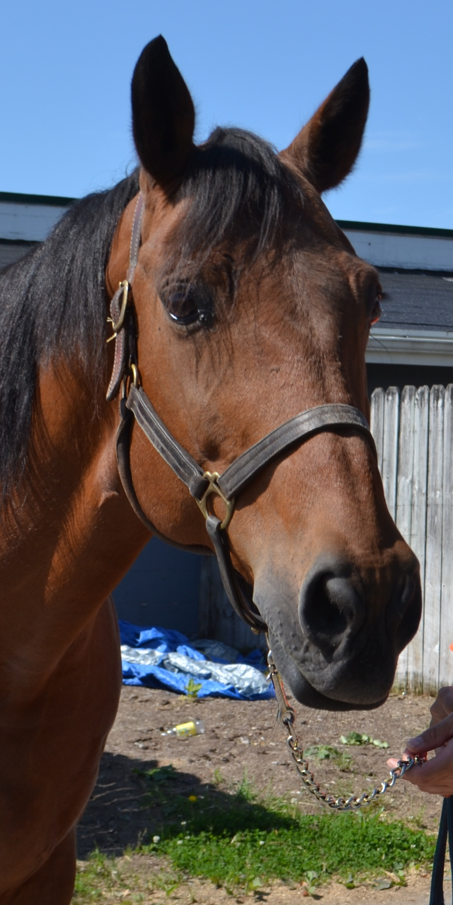
Located at Finger Lakes Race Track, Farmington, NY (near Rochester) Buddy is a gorgeous hunk of horse, and he is also a fully registered Quarter Horse with a perfect registered name for a chunky plain bay! He has been a track pony horse, accompanying the TB race horses to the track for morning exercise and afternoon races. He has excelled at that job, and has been a particularly good steadying influence helping his owner/trainer to teach her two year olds the racing game. But with a full stable of race horses at the track and more at the farm, Buddy's owner finds herself without enough time to devote to him anymore, and she wants him to find a new job because he is far too nice a horse to just hang out around the racing stable. She says Buddy is very sound and does it all -- he neck reins, moves off the leg, calms hot horses, handles commotion around him, is very comfortable to ride, and is always a quiet good guy. He is a very easy keeper, as the photos demonstrate. His owner says he gets by on a handful of grain, and hay. She says he loves treats, and he's great with other horses in turn out, unless you try to feed them all in the pasture -- then Buddy will try to take all the food. She thinks Buddy would be a great trail horse, but with his good looks and beautiful movement, we also think he can excel in the hunter ring or in dressage. For his jog video. Buddy showed off a light, lofty trot with lovely suspension and reach that quite impressed us. With his stout physique and big barrel, Buddy will take up the leg of taller riders. Husband horse perhaps? Price: $1,500 Contact: Linda Dixon 585-329-9062
As always, a pre-purchase veterinary exam is recommended.
Altruistic, 2015 15h+ chestnut filly
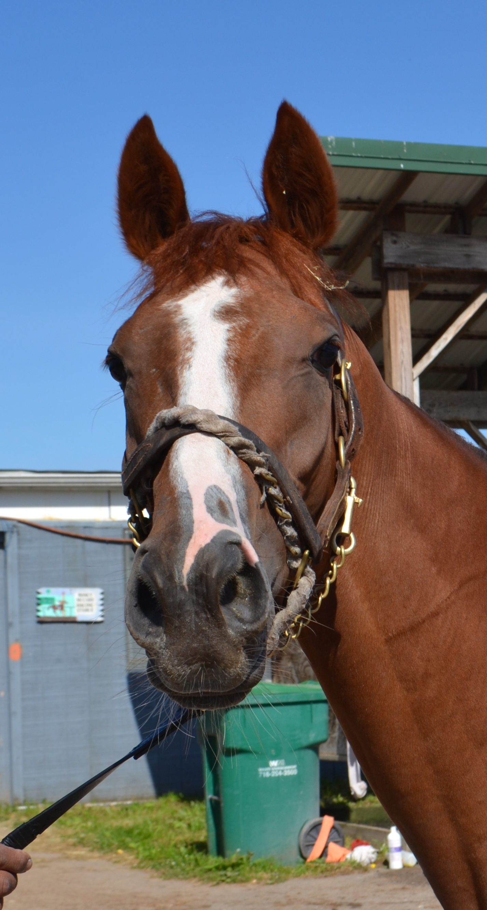
This flashy young beauty has had only three starts, and she is not showing enough racing ability, even though her trainer says she tries hard and has a good willing attitude. She is small, but has a balanced build, and she is a very nice mover, with a flat kneed fluid trot. Her trainer says she is great to handle, is very sound, is good in turn out, and has been a good stabilizing babysitter for her two year old horses. Altruistic's only known quirk is that you have to back her onto a trailer -- but when backed she goes right on, and ships fine. The trainer thinks that Altruistic would make a great pony club horse, and should also be a good polo prospect. We can also see her a flashy children's hunter. Altruistic is by Heavy Breathing, who is a full brother to Frost Giant, and a son of Giant's Causeway out of a Gone West mare. These are great bloodlines for jumping. Her dam is by Catienus, who has sired some horses that have been placed by FLF into great show hunter success at the top levels. For those of you looking for a smaller TB, this beautiful filly with unlimited potential for other disciplines is for you! Price: $1,500 negotiable Contact: Rachel Sells 585-748-0983
http://www.equibase.com/profiles/Results.cfm?type=Horse&refno=9916239®istry=T&rbt=TB
As always, a pre-purchase veterinary exam is recommended.
Hippy Return, 2014 16h dark bay gelding
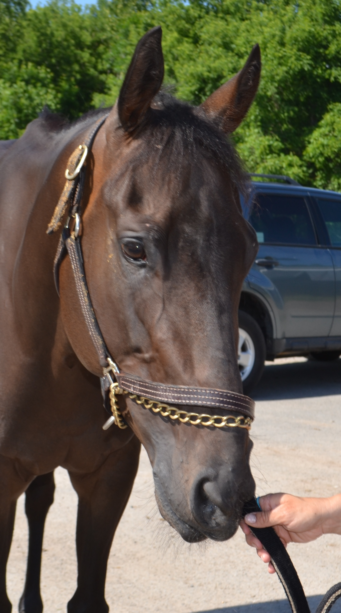
Located at Finger Lakes Race Track, Farmington, NY (near Rochester) There's a lot of potential in this young gelding for a sporting career -- with his quiet and sweet attitude, and his beautiful flowing flat kneed trot, we can see him excelling as a show hunter. Watch his video, and imagine what he is going to look like once he gets more groceries and develops his top line as he is remuscled with good flat work once off the track. The handler who showed him to us says that Hippy arrived in early summer at Finger Lakes from Florida, and that he hasn't been running well, so they think he would be better suited for a new career. She says he is sound, and we observed clean legs. She also said he is a quiet and sweet horse, and he showed off both of those attributes during his photo session. He has a very kind eye, he was very laid back, and he trotted quietly on a loose lead, showing off beautiful movement with good engagement from behind and impressive flowing reach from his shoulder -- and this was 5 days after a race. Hippy Return is by Benny the Bull, who is from the Blushing Groom sire line. His dam is by Sweet Return, who was a turf stakes winner in Britain, and there are great stamina/turf lines in his female family, which bodes well for his sport horse potential -- Diesis, Sir Ivor, Majestsic Light, In Reality, Roberto. Price: $1000 negotiable Contact: Marisa 315-719-9665
http://www.equibase.com/profiles/Results.cfm?type=Horse&refno=9792211®istry=T
As always, a pre-purchase veterinary exam is recommended.
King Five Two, 2012 16.3+h bay gelding
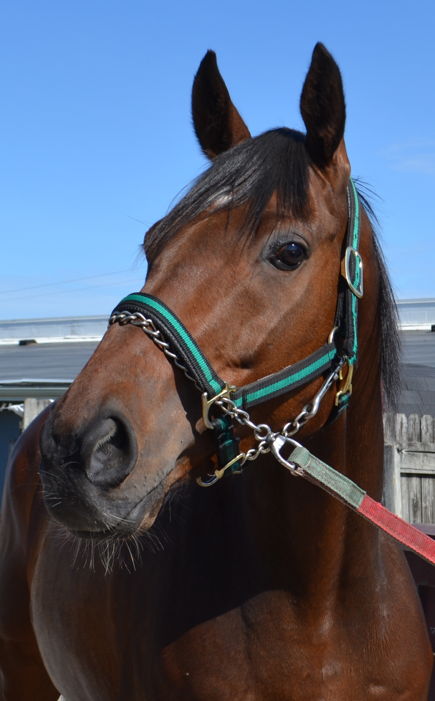
Located at Finger Lakes Race track, Farmington, NY (near Rochester) Majestic indeed! This big impressive gelding is gorgeous, with a huge shoulder and strong hind end that suggests jumping ability. His groom says he is big teddy bear, friendly, great to work with, and that he loves all kinds of treats -- carrots, apples, peppermints, whatever you want to share with him. His owner/trainer says he is a sound and happy horse with a great attitude about everything. With 8 career wins, three of them last year, it is getting very hard to find racing conditions where he is eligible to run, and with the tougher competition he must face this year, he is not as competitive, so the trainer wants to find him a new career. With his size, solid bodied good conformation, and very nice movement, we see huge sport horse potential. We photographed him just 4 days after his last race, and he was none the worse for wear, showing off fluid balanced movement with good push from behind and a toe flicking reach to his trot. He is an Ontario bred son of Bluegrass Cat, out of an Unbridled mare. AP Indy, Fappiano, Deputy Minister, Secretariat, and Affirmed are prominent names in his pedigree. Price: $6,000 negotiable Contact: Joe Cabrera 315-704-8256
http://www.equibase.com/profiles/Results.cfm?type=Horse&refno=9315611®istry=T
As always, a pre-purchase veterinary exam is recommended.
Lost Shakerof Salt, 2014, 15.3h Chestnut filly - moved to FLTAP
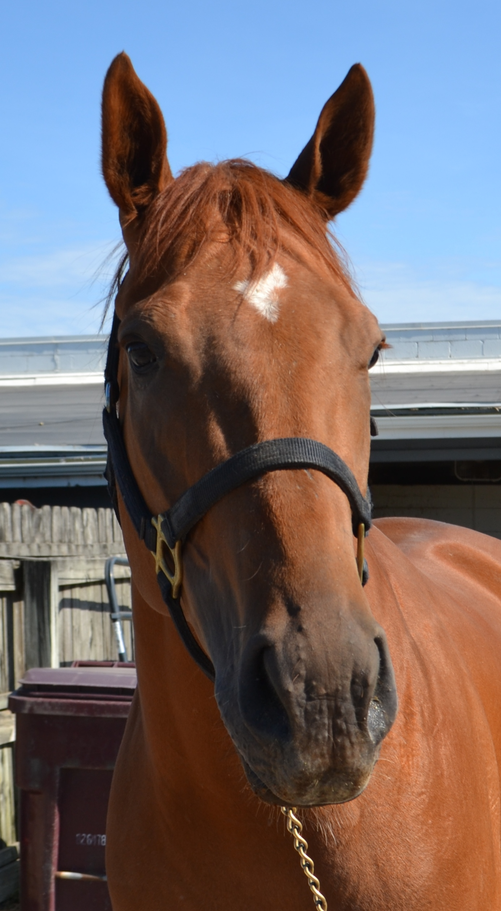
Update July 23 2018: Lost Shaker of Salt has gone to the on track adoption program barn, FLTAP, which is run by her on track trainer. If you are still interested in her you ca still contact Julie Smith at the number provided below.
Think of all the fun you could have with this name! We think she should be nicknamed “Margarita”, but she is lovingly referred to as “Chunk a Munk” by her trainer. Her trainer didn’t have enough positive adjectives for this pretty girl. She described her as wonderful to work with, mellow and intelligent, and just an absolute sweetheart. We watched as her trainer groomed her while she was finishing her breakfast without being tied. She is reported to be very well behaved for the vet and farrier. Because of her demeanor, she may be a good option for a junior or amateur rider working with a trainer looking to step into the fabulous world of OTTBs. She stood quietly outside for her photo shoot and jogged politely on a loose lead without a chain. Her trainer reports she has narrowed joint space in her ankles and is choosing not to push her when she could be very successful in other less strenuous disciplines. X-rays are available to interested parties. She is by The Daddy out of a Menhal mare. Price: $1500neg Contact: Julie Smith 585-500-5333
http://www.equibase.com/profiles/Results.cfm?type=Horse&refno=9719025®istry=T&rbt=TB
As always, a pre-purchase veterinary exam is recommended.
Simmering Forest 2015 ch 15.3+ filly: new price!
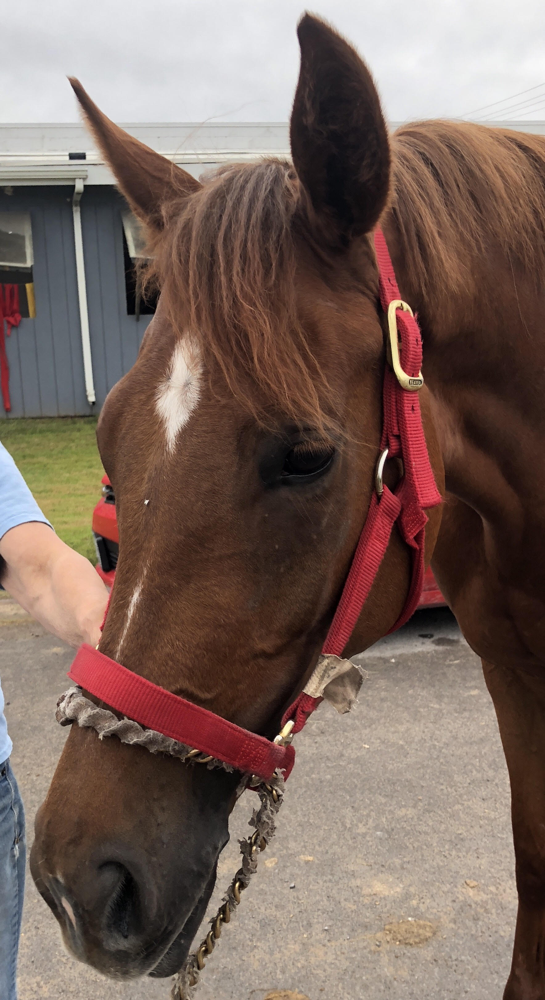
This very lightly raced filly is moving on only because she shows no aptitude for racing and the trainer has young horses coming in and not enough stalls. At just 3 years old, this lovely little gal has plenty of growing and filling out to do yet and has absolutely no knocks against her. Her trainer/handler has nothing but superlatives to describe her and is sorry that she can't give her a little more time to perhaps reach her potential as a racehorse, but for now she is being offered with clean legs, superior behavior, no vices and a clean slate for your finishing. And who can resist that adorable face? Call quickly: a filly with this much potential will move fast
http://www.equibase.com/profiles/Results.cfm?type=Horse&refno=9914522®istry=T
Price $1000
Contact Deb Breed 585-289-3467. This is a landline. Please leave a message and no calls after 8 p.m.
As always, a pre-purchase veterinary exam is recommended.
Taipan's Advantage 2012 16 h gray/roan gelding
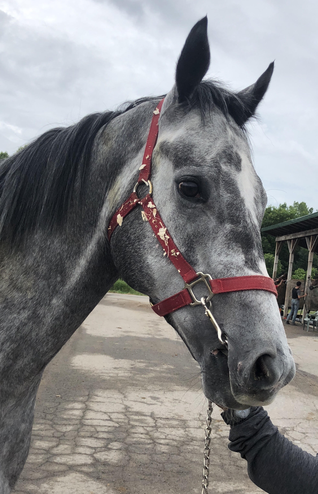
We were not able to get much information about this very successful racehorse (24 lifetime starts, 5 wins, 6 seconds) who has spent most of his career in Florida with occasional forays at other east coast tracks. He is new to Finger Lakes with just two breezes here, most recently on 6/15/18. He was very ramped up for his photo shoot and it was difficult getting good conformation shots when he had a hard time keeping four on the floor! He impressed us as a consistent runner who has been shuttled around and has now run out of conditions and is being moved on to open a stall for another. He would certainly benefit from some turnout and down time to chill his engine and relax before being in work again.
http://www.equibase.com/profiles/Results.cfm?type=Horse&refno=9322086®istry=T
Contact Rafael 786-508-7779 Price $1000
As always, a pre-purchase veterinary exam is recommended.
Outside Love 2007 16.3+ ch gelding
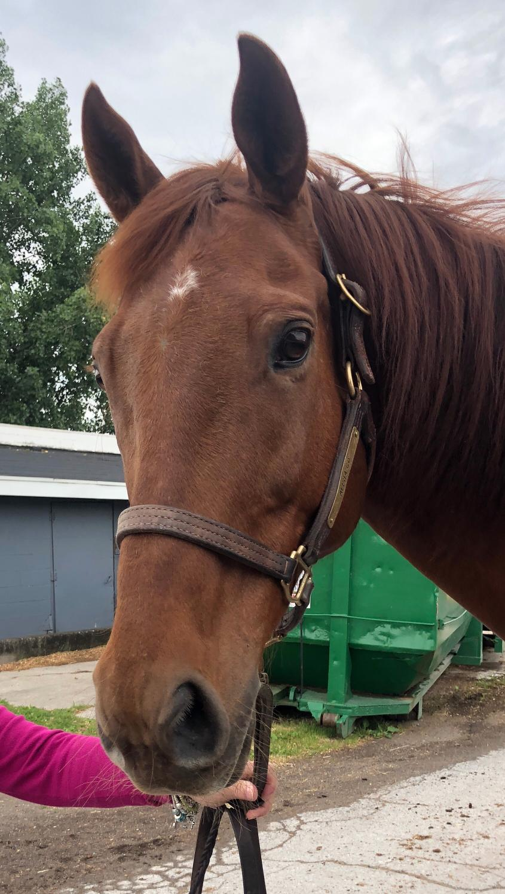
Loveable mush alert! Lovie is aptly named because he is the quintessential gentle giant! Lovie is not just tall, he is full bodied and BIG! Lovie was handled by volunteers while his owner was busy in another barn and he ambled out of the barn with a single rein hooked under his chin (when you can't find a shank, you take a rein off his bridle!). Lovie has a lot of history and his owner has given us a lot of information on him that she will surely share with seriously interested buyers. He was riding along on a successful career when he fractured his right front ankle. His previous owner laid him up and nursed him back well enough to become a lead pony on the track, which he has been doing for his current owner for the past two years. Last winter he started to go sore so he was laid up for the winter. Subsequently he was used in the morning for a few horses but was coming back sore and she decided that it was not fair to ask him to continue with a job as demanding and strenuous as being a track pony is (lots of miles, contact with racehorses bumping into them, etc.). He has been trail ridden at Mendon Ponds and was a perfect gentleman with absolutely no nervous moments or spooks. He will be suitable for light riding and will likely require some joint supplement to help keep him comfortable
Lovie was moved to a farm close to the track to be turned out and can be seen there with an appointment. Lovie's new owner will be asked to sign a contract and will be vetted. His owner will take him back if, for whatever reason, he doesn't work out. No resale without right of first refusal.
http://www.equibase.com/profiles/Results.cfm?type=Horse&refno=8053669®istry=T
Contact Christy Attwood 813-690-7412, text preferred
Price $500 with above stipulations.
As always, a pre-purchase veterinary exam is recommended.
Plastic Girl, 2013 15.3+h ch mare
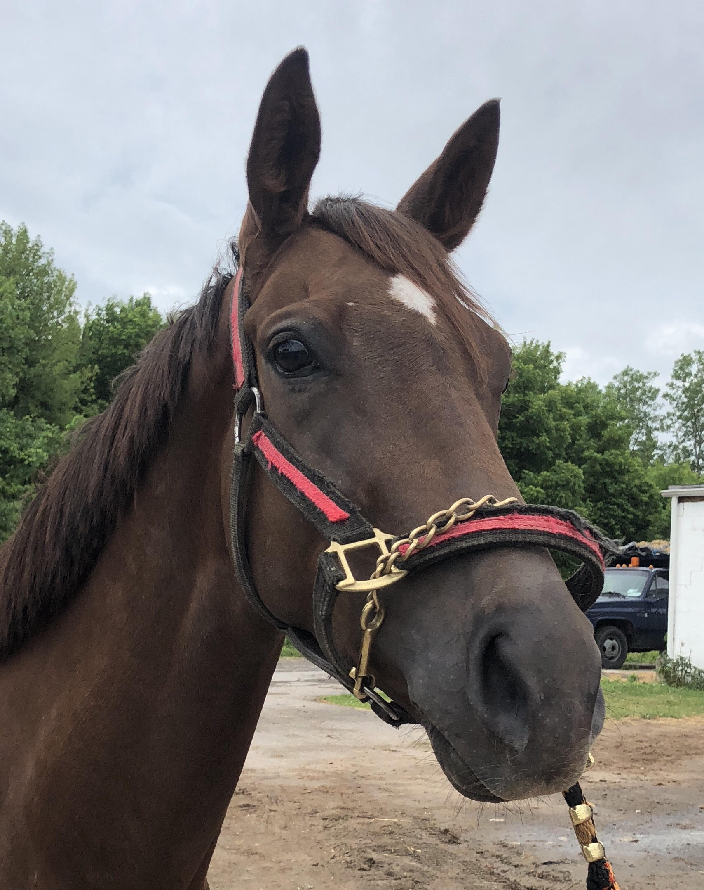
Plastic Girl is a pretty, sweet, well put together and solid bodied mare who is a very nice mover. But she just is not race horse material-- which we think will be the sport horse world's gain. Plastic Girl has hit the board only once, in third place, in 17 starts. She is super quiet, sweet and cute to boot! We saw her get pulled out of her stall and and taken over to the wash stall, where she stood on cross ties and was perfectly behaved. She is described as very nice to handle, and sound, and she appeared to be from our observation. She showed lovely light balanced toe-pointing movement at the jog. She is by Rock Hampton, a son of Storm Cat. Her dam is by El Corredor, who is a son of Mr. Greeley from the Gone West line, out of a mare by Silver Deputy from the Deputy Minister Line. She also has Best Turn/Turn-to in her female family -- good sport horse lines. Plastic Girl has unlimited potential to go in any direction in a new career.
http://www.equibase.com/profiles/Results.cfm?type=Horse&refno=9556930®istry=T
Contact Marisa 315-719-9665
Price $2000
As always, a pre-purchase veterinary exam is recommended.
Epiphany, 2011, 15.3 Chestnut Mare
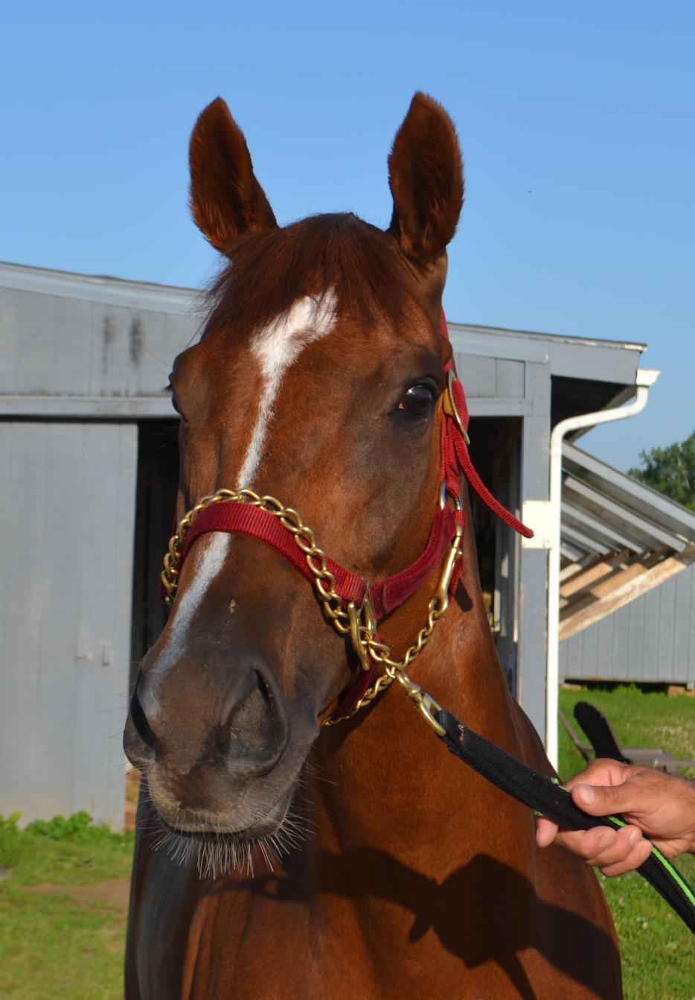
Located at the Finger Lakes Race Track in Farmington, NY (near Rochester, NY). Our volunteers are in love. This mare is simply gorgeous! She has beautiful dapples and just shines from good care and nutrition! Her trainer states that Epiphany is totally sound with no known former injuries and what appear to be clean legs, however, she is letting her connections know that her heart is no longer in the racing game hasn’t been as successful during the current meet as in past years. She has been a successful race mare earning over $108,000 in her 36 starts with 9 wins, 9 seconds, and 1 third, proof that she is a hardworking and durable horse with a big heart! Her trainer reports that Epiphany can be strong for the first couple minutes heading to or on the track, but then gets right down to business and is very good to ride. He emphasized she does nothing naughty and is just strong. He thinks she would be an excellent eventing horse, but whatever discipline you have in mind, she will certainly look pretty doing it! We visited with her in her stall and she was very sweet while being groomed and handled. Her trainer reports she has no vices and is good for the vet and farrier, stands well to be groomed and hosed, and cross ties quietly. He reported she loves water and enjoys using the pool at the track, where she is also very well behaved. As an added bonus, he said she is very clean in her stall! Epiphany is RRP eligible. She is by Pollard’s Vision out of a Forest Camp mare. Price: $1500neg. Contact: John Salvato 585-451-7343
As always, a pre-purchase veterinary exam is recommended.
Forty Motions 2015 15.2 Chestnut Filly
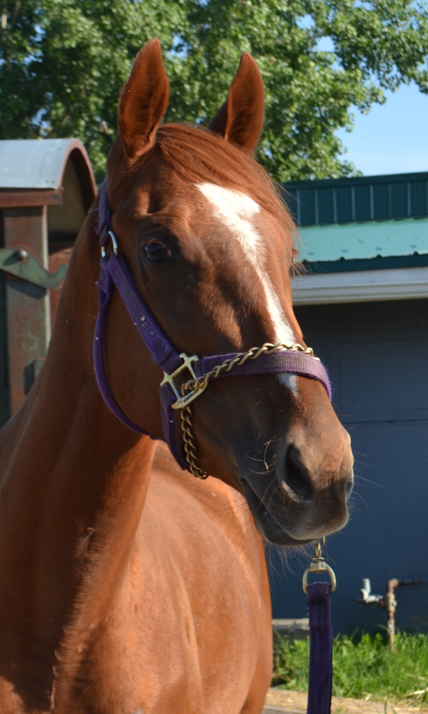
Located at Finger Lakes Race Track in Farmington, NY (near Rochester). If you are looking for a lovely young horse who is truly a clean slate come check out this sweet girl. When we listed her she impressed us with sweet nature and her equally quiet demeanor while taking her pictures. Her trainer say she is so quiet and easy to work with she was able to train her for the starting gate in just one week. Despite being a quick study, she just wasn't fast enough and showed no interest in being a racehorse and is not tattooed. Her trainer has decided to move her on to a new career and feels she should transition smoothly. As her pictures illustrate, still has plenty of growing and filling out to do. She also mentioned that at the farm she is just as quiet and good in turnout with other horses. With proper training she feels she might make a nice hunter prospect for a first time Thoroughbred owner and possibly, with the right training, a great mount for a young rider. We expect this sweetie won't be listed for very long!
Price: $1500 OBO
Contact: Amber Cobb 518 316-0089
As always, a pre-purchase veterinary exam is recommended.
A Taste of Glory drk/ br 15.3 2014 filly
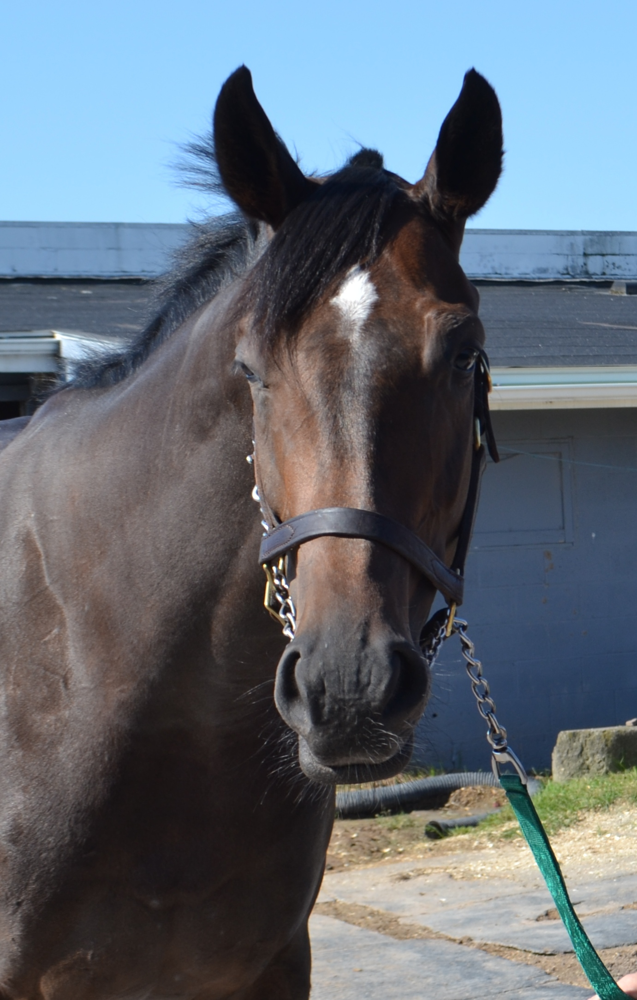
Located at Finger Lakes Racetrack in Farmington, NY (near Rochester). This gorgeous filly with her compact build and flashy dapples really caught our eye. Trainer says she's raced three times this year and just hasn't hit the boards so it's time to look forward to a new career. She was a friendly, sweet mint lover who was very quiet while we checked her out. Trainer says she is sound. They think she might make an eventer or even a dressage horse. Here is your chance to to get a gorgeous, lightly raced horse at an unbelievable price. This girl will not be listed for long so check her out soon.
Price: $500
Contact: Dan Conway 585 329-7803
As always, a pre-purchase veterinary exam is recommended.
Peanutbutter Shake, 2013, 16.2h Bay Gelding
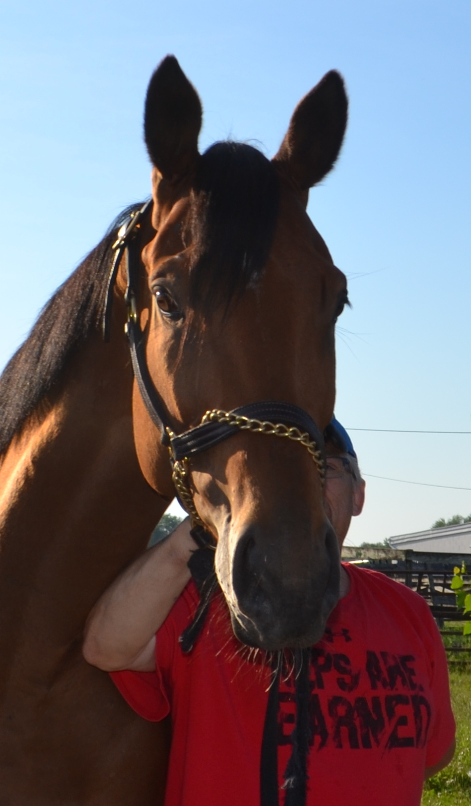
Located at the Finger Lakes Race Track in Farmington, NY (near Rochester, NY). “Peanut” as he is lovingly referred to by his connections, is no peanut and would be a great pick for taller riders looking for to get into the world of OTTBs. Peanut’s connections report he is “as sound as they come”. They also report he is a solid citizen who has no bad habits, is easy to work around, and has no vices. Peanut was very mellow during his photo shoot and stood quietly in the busy roadway while we took his pictures. After a recent win, his trainer feels he will not be as competitive in the next condition, so he wishes to move him onto a different discipline while he is still sound and happy. Peanut jogged slowly for his video to be respectful of his handler, but he showed glimpses of a nice ground covering movement if he were to move out more. His trainer thinks he might be a good hunter, but surely he could go in many different directions. Peanut is by Afleet Alex out of a Dance With Ravens mare. Big, sound, geldings are what many shoppers report they are looking for, so we suggest calling (or texting) quickly on this super sweet boy! He is RRP eligible. http://www.equibase.com/profiles/Results.cfm?type=Horse&refno=9550886®istry=T Price: $4500neg. Serious inquiries only. Contact: Call or text Kevin 585-698-8102. Please no calls after 5pm.
As always, a pre-purchase veterinary exam is recommended.
Devil Buster, 2015, 15.2+ Dark Bay Filly
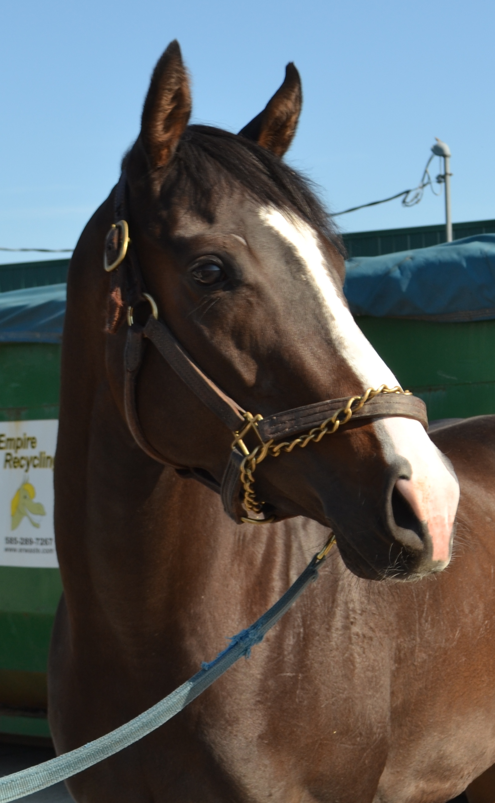
Cutie patootie alert! This flashy girl will stand out wherever she goes. When we arrived to take her listing, Devil Buster was taking a nap in her stall. Her trainer reports that laying down is her favorite morning pastime. We had a hard time bribing her to get up! It seems she would have much preferred if we had just crawled in and cuddled up with her! Her trainer reports that she is always very sweet and quiet, which is the demeanor she displayed during her photo shoot. She is very lightly raced with only 4 career starts and hitting the board just once in her first start. Her trainer reports after her last race she came back just a bit sore on her knee and since her heart doesn’t seem to be in the racing game, he is not going to push her. He reports she is now sound and ready for a new career. At only 3 years old, she will continue to fill out and grow in height. Like all 3 year olds, she would benefit from some turnout and a slow start into her next career. We are confident she will go on to do great things! She is by Bustin Stones out of a Devil’s Bag mare.
http://www.equibase.com/profiles/Results.cfm?type=Horse&refno=9880406®istry=T
Price: $800neg
Contact: Ortis Henry 585-364-4711
As always, a pre-purchase veterinary exam is recommended.
My Two J’s, 2013, 16h dk bay mare
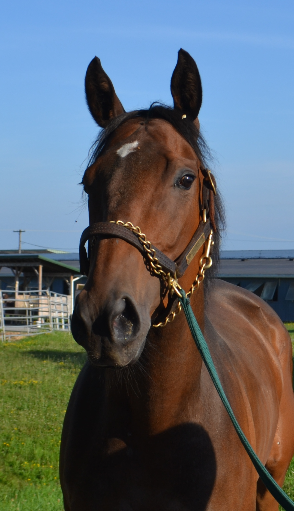
Located at the Finger Lakes Race Track in Farmington, NY (near Rochester, NY). We listed My Two J’s last year after she had been passed through a few trainers since landing at Finger Lakes. Her new connections are officially ready to retire her, as she is still not showing any interest in racing. Over many visits our volunteers have taken to the track, J has remained a favorite. She is always super sweet, kind, and gentle when our volunteers have visited her. She is always very quiet during her photo shoots and jog videos. Her trainer reports she has no vices and is overall just a very good girl deserving of a very good new home! In her 20 starts, J has had 2 firsts and 3 seconds. Her last race was 6/16/18 making her RRP eligible. A great home is a must. Our volunteers can’t wait to see her succeed in her second career! She is by JP’s Gusto out of a Gilded Time mare.
http://www.equibase.com/profiles/Results.cfm?type=Horse&refno=9532452®istry=T
Price: $800neg
Contact: Eddie Maver 585-351-9276
As always, a pre-purchase veterinary exam is recommended.
Return to Vegas, 2015, 16.2 Bay Filly
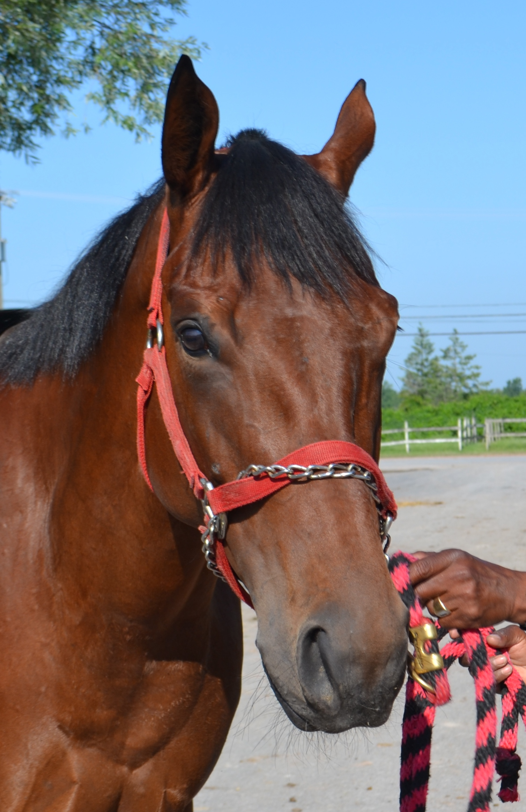
Get your trailers ready! This big girl has all the qualities that everyone says they are always looking for! Vegas is very lightly raced with only 8 career starts. In those career starts she has only hit the board once, so she is letting her connections know that she would prefer a different discipline. Her trainer reports she is super sweet to work with and very mellow. He said she is good in her stall and has no vices. Vegas was super quiet during her photo shoot. We had a hard time getting her to react to many things to get those big ears up! She was very friendly and enjoyed cuddling with our volunteers, although wasn’t quite sure what to do with peppermints. Her trainer reports she is retiring completely sound and clean legged. Because of her demeanor and movement, we could see her excelling as a hunter, but she could certainly go in many directions. At only 3 years old, Vegas will continue to grow and fill out for some time, so she will finish out being quite a big girl! She would be an excellent choice for a tall or long legged rider. We think this handsome lady could sell quickly so don’t hesitate to call if she ticks all the boxes for you. She is by Desert Party out of a Touch Gold mare.
http://www.equibase.com/profiles/Results.cfm?type=Horse&refno=9877918®istry=T
Price: $3000neg
Contact:Coco Dominguez 585-360-7397
As always, a pre-purchase veterinary exam is recommended.
Golden Bunny, 2015 15.1h dark bay filly
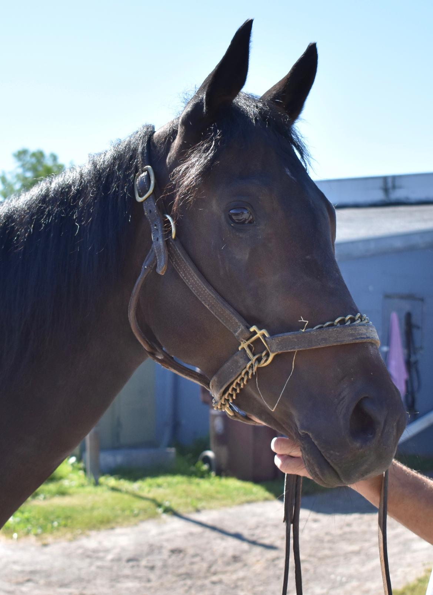
Located on a farm close to Finger Lakes Race Track, near Rochester NY. This very sweet and pretty and mellow young homebred filly was born on Easter Sunday three years ago, and is out of a mare named MyGoldenTicket: hence her name -- Golden Bunny. Wouldn't she make a much better post-Easter present for a horse crazy kid than a rabbit that you can't ride? Bunny has been working out at the track, but is unraced, and her breeder/owner/trainer thinks that she is not showing enough racing talent to persist with trying to make her a race horse. She is sound and clean legged, and described as a very quiet, mellow filly who is great to ride and work around, and who will do whatever you ask under tack. She was so mellow that her trainer could not get her to trot on the lead for a jog video -- but he assured us that with a rider on her back she will pick a trot or a canter right up when asked. Smart girl -- she knows the difference between work time and down time! Bunny's sister Xena's Cat was placed in a great home through the FLF listing last year, and she is already showing great jumping ability, and an unflappable "do whatever you want" attitude that ranges from trail rides to gallops on the beach. So we think Bunny will turn out the same -- an all around great horse who will willingly do whatever you want her to do in any new discipline. Bunny is by Pomeroy, who is from the Danzig sire line, out of MyGoldenTicket who is by Gold Token. She is a blank slate for you to restart for any discipline. Her owner/trainer thinks she is quiet enough to be a kid's horse with proper retraining and supervision. Price: $900 negotiable to a great home with references Contact: Stever Ubbink 585-233-3501
http://www.equibase.com/profiles/Results.cfm?type=Horse&refno=9950039®istry=T&rbt=TB
As always, a pre-purchase veterinary exam is recommended.
That Warrior Girl, 2012 16h+ bay mare
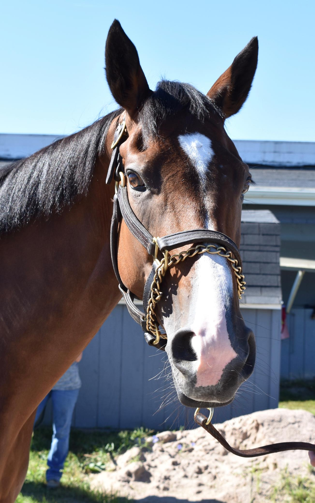
The trainer of this very pretty, solid bodied mare brought all the superlatives to describe her: she's a very kind, smart, all around good mare, great to work with, a very "cool" horse, mellow but not at all lazy, not marish, very good to ride, does everything her rider asks her to do. Add her good looks, excellent balanced conformation, very pretty light movement at the trot, and her great sport oriented pedigree, and you have the recipe for an exceptional sport horse or show hunter prospect. That Warrior Girl's best races were running long on the turf at Belmont. As she started to find the NY competition too tough, her owner sent her to Finger Lakes to see if the softer level of competition would bring some racing wins. But she just doesn't like the hard dirt track and sprint racing at Finger Lakes, and she is letting her trainer know that she just doesn't want to play the racing game anymore. She has an old splint on one leg, but is otherwise clean legged, and her trainer says she is sound with no issues or vices. Her sire is AP Warrior, a son of AP Indy out of a mare by Quiet American ( son of Fappiano). Her dam is by Wheelaway, a son of Unbridled, which brings in another cross of Fappiano. Those of us who have been fortunate enough to have a kind, good hearted, mare know they are the best! We think this one is a gem with great potential for many new disciplines. Price: $2500 negotiable Contact: Terry Genecco 585-820-2575
http://www.equibase.com/profiles/Results.cfm?type=Horse&refno=9314384®istry=T
As always, a pre-purchase veterinary exam is recommended.
The Hero Within, 2014 16h bay gelding: retained for racing
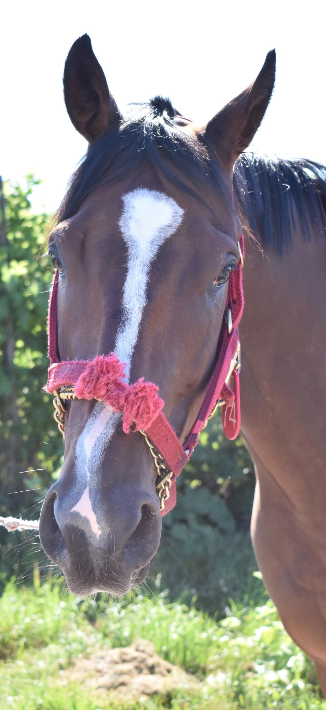
What a handsome hunk! Hero has been a good consistent racehorse, with 4 wins in 12 starts, and 2 wins this year. But his trainer wants to let him move on to a new career because he has some arthritis in his knees that can bother him for a few days after a race, so it is best to let him enjoy a less strenuous job. The trainer says he thinks Hero should be fine for a show career -- and his flashy good looks will certainly stand out in a show ring. With his good suspension and engagement from behind at the trot, we can see dressage in his future. The assistant trainer who showed Hero to us says he is good to work with, can be high energy but doesn't misbehave. He was well behaved for his photo session, and jogged politely even though there were horses galloping by on the training track right behind him. Hero is a son of Tapizar, who is by Tapit. He is out a mare by Successful Appeal, from the In Reality sire line. Price: $2,000 Contact: Mike LeCesse 585-303-9467
http://www.equibase.com/profiles/Results.cfm?type=Horse&refno=9719315®istry=T&rbt=TB
As always, a pre-purchase veterinary exam is recommended.
Katina Got Even, 2014 15.2+ gray filly
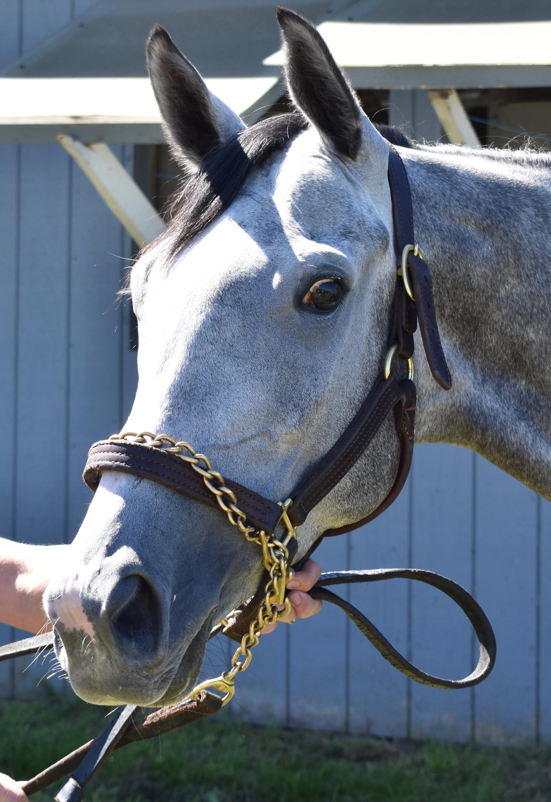
Katina is so pretty and kind, and she has been a good hard trying race horse, finishing in the money in 8 of her 16 starts. In her most recent race on June 26, 2018 she again tried hard, ran a good third, but came up sore as she cooled out. Her trainer x-rayed her ankle, and the x-rays revealed a simple fracture straight across the bottom of the sesamoid bone. The prognosis from the vet is excellent for a full recovery for riding with proper rest, rehab, and treatment (ice, wrapping, bute, stall rest). The trainer will share the x-rays and will authorize the vet to discuss the prognosis and treatment with seriously interested approved good homes. Katina will be best suited for lighter riding, and with her excellent balanced conformation and pedigree she would also make an excellent broodmare. She is by Stephen Got Even, a son of AP Indy out of a Cox's Ridge mare. Her dam is by Officer, from the Bertrando./Relaunch sire line, and is out of a mare by With Approval, who is a son of Caro. These are some of the best TB sire lines for sport/jumping, so sport horse breeders who are interested in bringing these TB lines into their program should seriously consider Katina. The trainer says that Katina is a very sweet and well behaved filly, and thus far she is handling her stall rest and rehab very well. She is being bathed and grazed daily, and she was quiet and polite for her photo session. Due to the recent injury, we did not take a video of Katina. A good home with the knowledge to properly complete her rehab is essential, and references will be required. Price: $750 negotiable Contact: Terry Genecco 585-820-2575
http://www.equibase.com/profiles/Results.cfm?type=Horse&refno=9665940®istry=T
As always, a pre-purchase veterinary exam is recommended.
Reading Glasses, 2009, 16h, Bay Mare
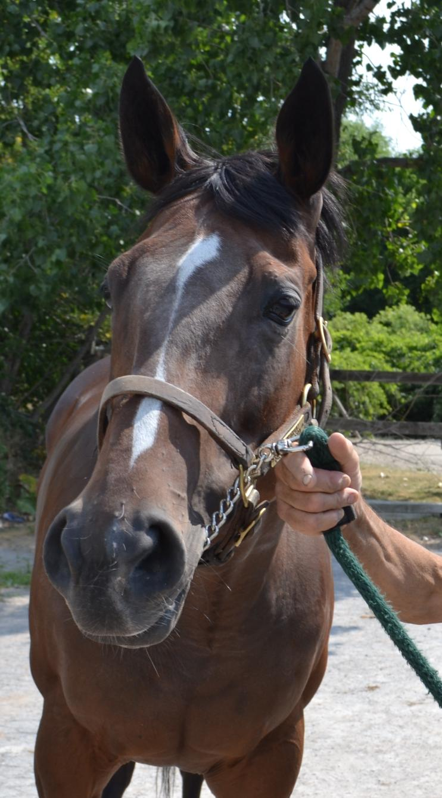
We thought this was a super cute name…especially for any avid readers like us. This cutie is just an overall “good egg” according to her trainer. She has earned over $43,000 in her racing career with 3 firsts, 5 seconds, and 11 thirds. Her trainer reports she is a hard worker and tries her best. He reported he is getting a number of new babies into his racing stable and needs the stall space. Reading Glasses is retiring sound and clean legged according to her trainer. She stood politely for grooming prior to her photo session and was very quiet in the roadway while we took her listing. Her trainer states that she has no stall vices and is good to handle for the vet and farrier. She has been training barefoot behind. Reading Glasses jogged very politely next to her handler. Since she was politely jogging slow with her handler, she didn’t move out as much as she is surely capable of. He reported that she is a nice mover with a big stride when on the track. Reading Glasses is by Read the Footnotes out of a Hook and Ladder mare. These lines should really appeal to the sport horse buyers! http://www.equibase.com/profiles/Results.cfm?type=Horse&refno=8687318®istry=T&rbt=TB Price: $1000neg Contact: Ed Perdue (text or call) 585-314-4111 or 585-314-1026
As always, a pre-purchase veterinary exam is recommended.
Starofthemountain 2010 17+ h bay gelding
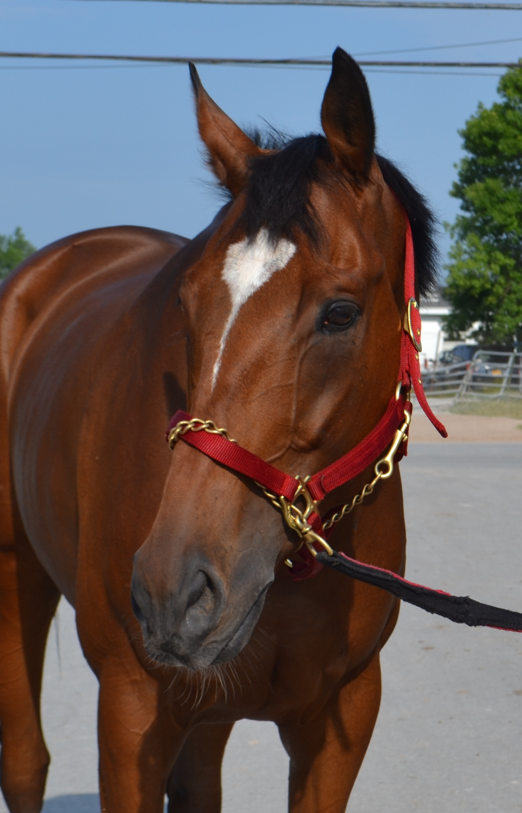
We know that the big ones get a lot of attention, but this guy has way more going for him than size (and he has that in spades!). With exactly 50% in the money finishes and 7 wins, we think Star can be given the warhorse moniker! His current trainer states that he is a "very cool horse" with a loveable personality and is absolutely sound. As hard as he has run, he has remained able to continue racing but his heart isn't in it and his trainer isn't willing to push him. Star jogged with lovely balance and cadence and, while polo and barrel racing are probably not in his future, we can see him being successful in just about any discipline. Don't let his age deter you because, in our experience, these older racers with successful careers on the track still have a lot of good years to give.
Price $5000
Contact Jackie Stauffer 585-857-1413 text preferred
http://www.equibase.com/profiles/Results.cfm?type=Horse&refno=8879212®istry=T&rbt=TB
As always, a pre-purchase veterinary exam is recommended.
One Sweet Ride 2013 15.3 h bay mare
This sweet little lady has a story to tell, not a very happy one, but it has a great ending. She had been in a herd situation and, as low horse in the pecking order, was starving in harsh winter conditions that likely would have eventually been her demise. Happily, her former and current trainer got wind of her situation, took her back and has brought her back to shiny good health, which thrilled and impressed our volunteers. She is described as a sweet tempered horse and we observed a quiet, polite mare who relishes attention. We were advised that she does best in turnout and doesn't like stall confinement. She may be an excellent candidate for 24/7 turnout if that's what you have, but she definitely needs ample turnout. One Sweet Ride is being sold as a package deal with her adorable 9 year old mini mare companion, April, who is registered and has papers. One Sweet Ride is currently racing and is sound on clean legs. We all agree that she is a pretty, well conformed mare who showed off beautiful movement at the jog and proves that "flashy" isn't all about bling! For obvious reasons all prospective buyers will be required to provide references so that One Sweet Ride is transitioned to a home that will not let her down again.
Price $1500
Contact Jackie Stauffer 585-857-1413 text preferred http://www.equibase.com/profiles/Results.cfm?type=Horse&refno=9494983®istry=T&rbt=TB
As always, a pre-purchase veterinary exam is recommended.
Beach Life 2015 16.3 ch filly
Nicknamed "Marcia Marcia Marcia" by her connections, this lovely, flashy, big filly is the proverbial blank slate with limitless potential in the right hands. Marcia has been raced a mere 3 times and has never shown that she could outrace the water truck. Clearly her destiny is elsewhere! Marcia is described as a good girl, very nice to work with, is good to ride and never puts a foot out of place. She was very sweet and accommodating on the road for her photo shoot as she was being stood up "just so", keeping the bright sun at our backs. Although she is only 3 she has the build of a more mature horse and she surely has more growth in her future. We admired her beautiful shoulder and strong hindquarters. With everything this filly has to offer, we suspect she will go fast so don't hesitate to call if you are seriously interested.
Price $2500
Contact Sal Iorio 585-455-4019
http://www.equibase.com/profiles/Results.cfm?type=Horse&refno=9902764®istry=T
As always, a pre-purchase veterinary exam is recommended.
DANCERS SONG 2014 16+ h gr/ro filly
It's not often that we encounter California bred horses at Finger Lakes, but here she is. Dancers Song has been with her trainer for her entire racing career and has done very well for her, having broken her maiden for special weight at Thistledown and running in allowance company there. In the gate for her last race there, when the gate was sprung and she started running, her right hind foot grabbed her left front shoe, ripping off the front shoe and wrenching her sacrum in the process. As a result she has a prominent hunters' bump which is nothing more than a blemish which we suspect will be less visible with the topline and muscling of a different discipline. She has had plenty of time since her injury to heal up and come sound. She is currently racing and, at the time of her interview, had just raced a couple days prior. At the jog she not only was sound but showed very pretty movement. Dancer's trainer also offered that she has video of Dancer jogging back to her groom right after her most recent race which shows her lovely jog with a big, reaching stride.
Price $2000 neg.
Contact Amber Cobb 518-316-0089
http://www.equibase.com/profiles/Results.cfm?type=Horse&refno=9736396®istry=T&rbt=TB
As always, a pre-purchase veterinary exam is recommended.
Concordechardonnay 2014 15.2 h gr/ro filly
Looking for sweet? Adorable? Petite? Gray??? Just look at this little darlin' who will fill the bill for a kid or smaller rider. Concordechardonnay was bred by her handler and she impressed us as being a polite, well-handled, well-loved filly who is an abject failure as a racehorse with only 4 lifetime starts. She trains well although has never shown any speed. In her three 4 furlong breezes this year she had the slowest times of the day all three times, none of which matters in the hunter ring! The owner and trainer both relate that she looks like the real deal under tack and has a big, reaching stride while training in the morning. They invite any potential buyers to come to the track and watch her train. She is described as sound and without vices. She winters at a nearby farm and is turned out with other horses without problem.
Price $3000
Contact Lou Sirianni 585-766-5901
http://www.equibase.com/profiles/Results.cfm?type=Horse&refno=9704209®istry=T
As always, a pre-purchase veterinary exam is recommended.
Moon Lily 2014 16.2 dk bay filly
Moon Lily is a gorgeous, unraced daughter of Boys at Toscanova, a rising NY sire who tends to throw big, solid offspring. Lily has been training well with decent morning works but the trainer in this very large operation has elected to stop on her because she is not showing enough promise as a top level racehorse. But her potential for new disciplines is unlimited, with her looks and nice movement. She has a "bump" on her left front tendon which is almost indiscernible and does not cause unsoundness. Her handler says she is good to work with and has no vices. Lily comes from a barn that takes impeccable care of their horses and it shows in her gleaming, dappled coat. For her jog video, although she was a bit up due to having only walked for the past week, she showed light, balanced, lofty movement with some toe pointing reach. She has a great pedigree for sport/jumping disciplines. Her sire line goes back to Relaunch and In Reality; her dam is by Rockport Harbor, a son of Unbridled's Song. Other prominent sires in her pedigree (which is devoid of Storm Cat) include Seattle Slew, Caro, Cox's Ridge, Damascus, Pleasant Colony, His Majesty, Ribot, Copelan, Tri Jet. The blank slate beauty may be one of the bargains of the season!
Price $1500 neg.
Contact Dana Saul 315-871-9383
As always, a pre-purchase veterinary exam is recommended.
Bear Right 2014 16.2+ bay gelding
Very lightly raced with only one inauspicious start in December of 2017, Bear is a very pretty young fella who is looking for a special person who will give him lots of downtime and turnout before starting in to any kind of work. Bear has been a bit off behind, and his trainer has done thorough vet workups and no issues have been found. She is happy to provide a detailed history of his veterinary care during his time with her to serious prospective buyers. After realizing that continuing in race training will be counterproductive to him getting sound and comfortable, she has convinced his owner that he needs to move on from the track. He has a sweet temperament and would love to be spoiled while relaxing at his new home. We suspect that, given the opportunity to roll and adjust himself, with some chiropractic attention as well, Bear will start to sound up and feel better. Bear has an excellent sport Horse pedigree. He is by Proud Citizen, who is a son of Gone West. His am is by Silver Deputy, who is by Deputy Minister.
Price $750 neg.
Contact Amber Cobb 518-316-0089
http://www.equibase.com/profiles/Results.cfm?type=Horse&refno=9647972®istry=T&rbt=TB
As always, a pre-purchase veterinary exam is recommended.
Dighton 2010 16.3 gr/ro gelding
It's so exciting to see a beautiful horse in the morning and then, while researching his race record, discover that he is a warhorse with a remarkable race record. The beautiful, classy Dighton has won at every NYRA track, Parx, Calder and, more recently, Finger Lakes. His most recent win was just last month. In the course of his career he has amassed 79 starts with 11 wins, 12 seconds and 14 thirds with nearly $400,000 in earnings. With this many wins it is increasingly hard to find race conditions that he is eligible for, so his trainer is ready to let him find a new career where he will also excel. He is a big horse with a big personality and, during his photo shoot, another trainer walked up to him and wrapped his arms around his neck for a big hug. That's a pretty good indication that Dighton has a fan club and is well respected on the backside. DIghton is a very good mover, showing off balance, lightness, reach, and good engagement from behind. We also watched some videos of his winning races, and saw a fluid gallop that looks like a dream to ride. With his movement, strong shoulder, and engine, we think Dighton will excel in sport/jumping careers. His pedigree sure does point in that direction too. His sire, BL's Appeal, is from the In Reality sire line. His dam is from the Devil's Bag/Halo sire line, and out of a mare from the Blushing Groom sire line. He has some track jewelry on his ankles but clearly it does not affect his soundness -- Dighton has never missed a dance in years. His markings on his upper legs are notable because they look like starbursts! He has many good miles and years in his future for the discipline of your choice.
Price $5000
Contact Adrianne D'Alessandro 585-281-1810
http://www.equibase.com/profiles/Results.cfm?type=Horse&refno=8907963®istry=T&rbt=TB
As always, a pre-purchase veterinary exam is recommended.
Estelle's In Town 2015 15.1 ch filly
Nobody ever told Estelle she is supposed to be a racehorse: she is convinced she is a super model! She posed perfectly and owned every moment of her photo session. We think she looks like a super model, too, with her balanced build and flashy good looks. She recently came to Finger Lakes from Ocala where she had a handful of starts at Gulfstream Park, all without much success. Her handler is also her exercise rider and he reports that she is good to gallop and very athletic. She had run earlier in the week and had finished last, cementing the trainer's decision to move her along. This is a young, beautiful, sound filly who is well cared for by her current connections, the proverbial blank slate with tons of potential.
Price $3000
Contact Terry Genecco 585-820-2575
http://www.equibase.com/profiles/Results.cfm?type=Horse&refno=9894491®istry=T
As always, a pre-purchase veterinary exam is recommended.
Dat Girl is Wild, 2015 15.2h dark bay filly
This dark bay beauty does not take after her name at all -- she is a well behaved filly who is good to work with. She was very well behaved for her handler and at the jog showed nice light balanced movement. She has had only one start, and is not showing enough racing ability for her trainer to persist. Her connections have decided to not ask her for something she doesn't have and, although her handler reports that she is training well, it's not enough for afternoon success. Since coming up from Florida to her current trainer she has blossomed in her good care, has put on weight and is reported to eat everything in sight. She is sound although she had splints freeze fired when she was younger and before she was in the hands of her current connections. Still growing and a bit butt high, she is likely to top out closer to 16h. She is bred to run on the turf (perhaps why she is not showing much aptitude for the hard dirt track at Finger Lakes), and she has an excellent pedigree for sport/jumping disciplines. Her sire Soldat was a turf stakes winner, and he is a son of champion sire War Front, who is by the great Danzig out of a Rubiano mare from the Fappiano line. Her dam is by Medaglia D'Oro, who is from the Sadler's Wells sire line, and out of a Wild Again mare. Here is an opportunity to put your personal touch on a young, sound, pretty filly with the potential to go in just about any direction you desire.
Price: $3,000
Contact Terry Genecco 585-820-2575
http://www.equibase.com/profiles/Results.cfm?type=Horse&refno=9908426®istry=T
As always, a pre-purchase veterinary exam is recommended.
Smarty’s Pal, 15.2+h, chestnut Gelding
Another gorgeous boy who brightened up the day! Here is your chance to own a very well bred six figure horse -- Smarty’s Pal was a $75,000 yearling and a $110,000 two year old. As the assistant trainer was pulling this cutie out of his stall for his photo shoot, she exclaimed “he is my absolute favorite”. A ringing endorsement from the assistant trainer (who also gallops and ponies the horses) is always a great sign! She reported Smarty is super fun and easy to work around. She says he is good to gallop, although can be strong. She also said that he has a goofy personality that constantly has them laughing. He has a thick build and at only 4 years old, he may grow and fill out more. His trainer states that he is a very easy keeper. He loves peppermints! Smarty’s Pal has some mild arthritis in his knee, but the vet feels he would be fine for disciplines less strenuous than racing. He was a little bit excited to be out of his stall yesterday, but was still polite. It may be hard to see in the pictures, but he has cute white roaning throughout his chestnut coat. He will stand out wherever he goes! He is ready for some turnout and to start his second career! He is by Smart Strike out of a multiple graded stakes winning mare by Alex’s Pal. Price: $1500 negotiable
Contact: Tammi Lord 585-736-0769 (text preferred) http://www.equibase.com/profiles/Results.cfm?type=Horse&refno=9690597®istry=T&rbt=TB
As always, a pre-purchase veterinary exam is recommended.
Mollica 2014 16.1 bay gelding
Mollica, a four year old son of the great Uncle Mo, last sold in the OBS sale for $240,000! He broke his maiden for special weight at Aqueduct in December of 2016 and has shown waning ability since then. Out of 19 lifetime starts, Mollica has achieved two wins and four third place finishes. According to his handler, Mollica has a chip in his knee that has been present for a while (no current xrays are available) and has been running on it. Recently the trainer has elected to stop on him and his handler suggests that he will be suitable for light riding. Mollica ("crumb" in Italian) is a classy horse with a gorgeous presence and a soft, kind eye. He was a perfect gentleman while being stood up for his pictures with lots of traffic to and from the racetrack. Mollica has a large scar on his left shoulder which the handler believes is from a horse versus fence accident when he was a baby.
Price $1000
Contact Adrianne 585-281-1810
http://www.equibase.com/profiles/Results.cfm?type=Horse&refno=9659996®istry=T&rbt=TB
As always, a pre-purchase veterinary exam is recommended.
Bob E, 2010, 15.3h, Bay Gelding
Hubba hubba! This gorgeous guy has dapples for days. He truly radiates from the fabulous care his connections provide. Bob E (how cool is that name) is very loved and pampered. His connections are well known for providing fabulous care and being open and honest about their horses in order to find them the most appropriate homes. When you buy a horse from them, you know you will be getting a horse that has been properly managed and handled. His connections will require references and would want updates on how Bob E is doing. He has earned over $89,000 in 70 starts with 7 wins, 9 seconds, and 12 thirds. Bob E’s connections report that he is just not showing interest in racing anymore. They report he has always been very sweet and intelligent. They report that he “isn’t a dead head” but is never naughty and is very sensible. She said he is good to ride and care for and has no stall vices. His trainer also reported Bob E is retiring sound and clean legged. He was very well behaved during our photo and video shoot. Our volunteers got the impression that he would be a really fun project. He just seemed to have a cool personality! He is at the perfect age for retraining-past the age of silliness and ready to get down to business. His trainer reports that he is good for just about everything including vet, farrier, swimming, ponying, and that he turns out well with others. All these things will surely help ease his transition into his second career! He is by Patriot Act out of a Honour and Glory mare. http://www.equibase.com/profiles/Results.cfm?type=Horse&refno=8841064®istry=T&rbt=TB Price: $2650 Contact: Bev Wheaton 585-455-8823
As always, a pre-purchase veterinary exam is recommended.
Flagofpomeroy 2014 16 h bay colt
Ooo la la, what a handsome boy! He's been a consistent race horse, hitting the board in 11 of his 16 starts, but he has recently been sidelined by a knee injury that he sustained during training hours when he did some speed work and came back to the barn ouchy. He was okay to walk out of the barn for our photo session, but he was not yet sound enough to get jog video. We watched the video of his one winning race, and saw a lovely mover, light and balanced, with great reach from the shoulders. The trainer has not x-rayed the knee. We would advise a discussion regarding his unsoundness with his trainer, and a vet evaluation and possible x-rays, as it may be something that, with time and rehab, he will become serviceably sound. Flagofpomeroy qualifies for our gelding incentive program, where FLF will pay part of the cost of gelding by an on track vet, to an approved good home. Gelding by one of the racetrack veterinarians is fairly affordable and we feel strongly that the majority of intact males leaving the track make better geldings. He is by Pomeroy, a grandson of Danzig, and his dam is by Distinctive Pro out of a mare by Personal Flag.
Price $1000 neg
Contact Ortis Henry 585-364-4711
As always, a pre-purchase veterinary exam is recommended.
Tangled Tart, 2012, 16.2h, Grey Mare
Tangled Tart is a very sweet mare who is very deserving of a great home and a new lifestyle. She last raced in August 2016 and has been hanging out with her connections since she retired. In her 22 starts she earned 4 firsts, 2 seconds, and 2 thirds at race tracks including Keeneland and Churchill Downs! Tart is “pleasantly plump” at the moment and is reported to be an easy keeper. She may need a brush up on her under saddle skills, but her sweet demeanor will certainly ease her transition back into being a riding horse, this time in a less strenuous discipline. She was very polite during her photo and video shoot despite being out of work. It is reported that she is a good girl to work with in her stall and out of the barn and has no vices. Her trainer reported she would come back knee sore after her races so lower impact disciplines may be better suited for her. She showed a nice toe pointing and ground covering trot for her jog video so perhaps hunters or dressage are in her future! It should be noted that she was Tart was barefoot during her video and had very overgrown hooves (her handler reported this would be taken care of very soon). We think this adorable and kind mare is truly a diamond in the rough! She is by Majestic Warrior out of a Personal Hope mare. http://www.equibase.com/profiles/Results.cfm?type=Horse&refno=9327061®istry=T Price: $1000neg Contact: Adrianne D’Alessandro (contact person for trainer)
As always, a pre-purchase veterinary exam is recommended.
Bourne Country, 2013, 16.2h, Bay gelding
There is a whole lot to like about Bourne Country! This very handsome gentleman has earned over $67,000 in his 33 starts with 5 wins, 3 seconds, and 4 thirds. Our volunteers admired his very correct, uphill build that sport horse riders are likely to swoon over! He developed suspensory inflammation after his last workout on 6/27/2018 so his connections moved him to the farm and officially have retired him from training/racing. Although his trainers report he jogs soundly, there is still some localized suspensory swelling. The vet feels that with proper management (some time off and rehab), Bourne Country can return to disciplines less strenuous than racing. Ultrasounds have been performed. The assistant trainer said Bourne Country is great to handle and that he is a very intelligent horse. He was well behaved when taken out for his photo shoot. She also reported that he is great to ride and respectful of his rider. It should be noted that Bourne Country was missing three shoes during his short video. He is by Kitalpha out of an Exbourne mare. http://www.equibase.com/profiles/Results.cfm?type=Horse&refno=9524766®istry=T Price: $1500neg Contact: Tammi Lord (text preferred) 585-736-0769
As always, a pre-purchase veterinary exam is recommended.
Three Goals
As always, a pre-purchase veterinary exam is recommended.
Justdynamite, 2015 16.+h bay gelding
This handsome and flashy hunk of eye candy is lightly raced and still growing -- based on his good bone and still butt high physique we think he will top out at over 16.2h. His owner, who has a show jumping background, thinks he has unlimited potential for a new career in sporting/jumping disciplines. Justdynamite was described to us as a horse who is usually well behaved and quiet, intelligent, good to work with and lovely to ride, well balanced and supple. The owner, who also gallops him, sent us a video of him trotting and cantering under saddle, showing off very nice and balanced athletic movement. Justdynamite had only three races last year, and showed promise at the competitive maiden special weight level. After his final race last October he was diagnosed with a small very minor tear in a tendon. He was patiently and properly rested and rehabbed under veterinary guidance, and the owner reports that recent ultrasounds revealed that the tendon is 100% completely healed and he is 100% fine and cleared to do any discipline without limitations. He is by Justenuffhumor, a son of Distorted Humor out of a Broad Brush mare with Roberto in the pedigree. His dam is by Double Honor, a son of Gone West, and she is out of a granddaughter of Halo. These are excellent lines for sport/jumping. This guy is an exciting blank slate young prospect with unlimited potential for an experienced rider to bring along for a new career! Price: $3,000 negotiable Contact: Adrianne D'Alessandro 585-281-1810 (contact person for the owner/trainer)
http://www.equibase.com/profiles/Results.cfm?type=Horse&refno=9905789®istry=T&rbt=TB
As always, a pre-purchase veterinary exam is recommended.
Jo Jo, 2010 15.3h chestnut gelding
Located at a farm in Palmyra NY, 20 minutes from the Finger Lakes Race Track. Jo Jo has been a hard trying, durable and sound racehorse who has been enjoying let down and turn out on a farm since last December, but he really would prefer to have a new job. Since he is already let down, he is ready to restart and he has unlimited potential for any discipline. With his very good movement, balanced solid build and strong shoulder, and sound clean legs, he looks like he could do anything. Jo Jo has striking roaning marks on his right side and a kind eye that draws you in. We watched Jo Jo trot and canter around his paddock, and also got a brief video of him being led at the trot, and we observed very good movement with good engagement from behind and some suspension. The farm owner says Jo Jo is good to handle with no vices, but he isn't thrilled about being out in mid-day with flies, and would not be happy in a 24/7 turn out situation. Jo Jo is by Heatseeker, who is a son of Giant's Causeway. His dam is by Mr. Prospector and she traces on her dam line to Stop the Music/Hail to Reason/Turn-to. These are excellent sport/jumping lines. Price: $1,500 negotiable Contact: Denise Cotone cell (early morning to early afternoon when she is at the track): 813-531-0662; or home landline from early afternoon to early evening: 315-210-6546 (no cell service when she is at her home farm)
http://www.equibase.com/profiles/Results.cfm?type=Horse&refno=8892877®istry=T&rbt=TB
As always, a pre-purchase veterinary exam is recommended.
"Brownie", 2017 15h yearling colt by Big Brown
Located on a farm in Palmyra NY, 20 minutes from the Finger Lakes Race Track. Listing a yearling is a rarity for FLF, but the big, leggy, athletic, very well bred "Brownie" presents a special situation with an unusual story. And for the patient person with experience raising and training young colts, we think "Brownie" presents an extraordinary opportunity to get in at the very beginning with a guy who has great potential to turn out to be very fancy. Brownie was dropped off as a recent weanling at a farm last December, ostensibly for winter boarding. He arrived in rough, dirty, thin condition, and the owner never paid for his care. Despite not ever getting any board money, the concerned and very responsible farm owner took good care of Brownie, improved his feed and gave him vitamins to help his growth and condition, and has been working on handling him. He is now a friendly, muscular, strapping, leggy, rapidly growing yearling colt who enjoys running around his pasture-- already at least 15 hands and all leg, we think he going to be a big boy, likely 16.2h+, when he matures; most of the offspring of his sire Big Brown are big athletic horses. The farm owner and her helper have taught Brownie to lead politely and to enjoy grooming and having his feet handled, picked up and picked out. He has been bridled, and recently was introduced to a saddle on his back. We were told that he has accepted every new experience well, and that he is good to handle. We observed a friendly guy who stood politely for photos and enjoyed being stroked by his handler. And who can resist that big heart shaped star on his forehead and those huge ears that he has yet to grown into! His handler encouraged Brownie to run free for a video, and he showed a lofty ground covering trot, balanced canter, smooth lead change, and a lot of speed when he cut loose to gallop. Brownie has good bone, and correct balanced conformation with a strong shoulder and hind end. He does have an enlarged effusion on his right hind ankle, from fluid leaking into the joint capsule during foaling. This is just a cosmetic blemish and does not in any way impair his soundness -- as you will see from the video, he is moves soundly and very well and enjoys romping around his paddock. Brownie is by Derby and Preakness winner Big Brown (a grandson of Danzig), and he is out of Never Know, a stakes winning mare who is by Tomorrow's Cat out of a mare by Marquetry. The owner never paid the stud fee, so unless it is paid one cannot get the stallion certificate that is required to register Brownie for racing. But that is hardly an impediment for any other discipline, including for sport horse breeding. His pedigree is full of great lines for sport/jumping: Danzig, Roberto, Conquistidor Cielo, Buckpasser, Vice Regent, Prince John, Never Bend. The farm owner has put a lot of time and funds into Brownie even thought the owner abandoned him, and she would like to find him a great home where his potential will blossom and she can recoup some of her expenses. Price: $2500 negotiable to an excellent home Contact: Denise Cotone. Cell # (from early morning until around noon when she is at the track): 813-531-0662; or home land line from early afternoon through early evening, 315-210-6546 (she has no cell service at her farm)
As always, a pre-purchase veterinary exam is recommended.
Severious, 2013 16.1+h bay gelding
Located at Finger Lakes Race Track, Farmington, NY (near Rochester) Severious captured the hearts of our volunteers, and we think he may be one of the bargains of the year. With his laid back, sweet personality and beautiful lofty movement, we think he's a great show hunter prospect, but his potential for any new discipline is unlimited. Severious has lost interest in racing, so he is letting his connections know that it is time to let him have a new career. He is described as a good, easy horse to work with, a guy who does everything right, who is very sound. His legs are clean, except for a small recent cut on a hind shin that will quickly heal. His trainer says he is a mild occasional cribber, and does not need a collar. Ulcer treatment and turn out often take care of this! Severious showed off what a friendly sweetheart he is, with both other horses and people. Not only did he nuzzle with our volunteer when she stood next him to check his height, but he also gave a friendly greeting to and nuzzled with a passing lead pony. While we were already quite taken with Severious from his friendly personality and pretty head, once he trotted off and showed gorgeous movement, we were thoroughly smitten. We think whoever steps up for him is going to be very lucky! The trainer wants to put a more competitive race horse in his stall, so he is offered at a bargain rice for such a good looking, sound, great moving young gelding. Severious is by Patriot Act (a son of AP Indy), out of Queen in Waiting by Sea Salute (a son of Danzig). Price: $1,500 negotiable Contact: Ron Breed Jr., 585-749-7443
http://www.equibase.com/profiles/Results.cfm?type=Horse&refno=9542139®istry=T
As always, a pre-purchase veterinary exam is recommended.
Icy's Surprise, 2014 15.3+h bay filly
Located at Finger Lakes Race Track, Farmington, NY (near Rochester) This very pretty, well put together bay filly impressed us with her kind demeanor, strong shoulder, pretty head, and very nice, light, toe pointing movement. That's a lot to like! Icy has won three races, including one this spring, so she has had to face tougher competition where she hasn't been as competitive, so her trainer wants her to find a new career. Icy is described as sound, as we saw nice clean legs. She is reported to be a good girl to handle and work with, and has no vices. Icy was polite and friendly for her photos session, and showed a loose and light trot with good reach. We think she has unlimited potential for any discipline, but with her pretty head, solid bone, and nice movement, we can see the show hunter ring, or eventing in her future. She is by AP Warrior, who is a son of AP Indy out of a Quiet American mare, and her dam is Miss Icicle by Charlie Barley (a son of Affirmed) . We think Icy is a lovely prospect and she is offered at an enticing bargain price. Price: $1,000 negotiable Contact: Jamie Boldt 585-943-4298 (text preferred)
http://www.equibase.com/profiles/Results.cfm?type=Horse&refno=9920425®istry=T
As always, a pre-purchase veterinary exam is recommended.
Tap City, 2014, 15.3h Bay Gelding
Tap City got the award for sweetest horse of the day when we did our Saturday listings. Despite having not worked in a few days, Tap City walked out of the barn on a loose lead clipped under his chin, head swinging side to side, relaxed and taking in the sights. His trainer reported this is his daily demeanor. He is always quiet, polite, and super cuddly! Because of his demeanor, he could be a good prospect for someone entering the world of OTTBs with the guidance of a trainer. We were equally impressed with his correct, balanced conformation. He is very nicely put together! After looking up his record, we realized we aren’t the only ones who saw the quality in this gentle guy. Tap City sold for $125,000 as a yearling. Wow! Although he was bred to clean up on the race track, it appears his heart really isn’t in the game. He has earned about $15,000 in his 18 starts with 1 win and 5 thirds. Tap City came back a bit sore from his last race so we did not take a video. We were told the vet said he would be fine to return to work after a full week or two off. We will get a video when we are at the track next, but since he will likely be ready before then, we suggest heading to the track to see this sweet boy in person! He is by Tapizar out of a Smarty Jones mare. A good home is a must and references will be requested. Price: $1000neg Contact: Jamie Boldt 585-943-4298 (text preferred)
As always, a pre-purchase veterinary exam is recommended.
--
Mimi's Sugar, 2009 16h bay mare
Mimi's Sugar is a pretty mare and a lofty, beautiful mover and very well bred. She has great potential as a sport horse or for breeding. She has been a good hard trying racehorse, with 5 wins and 18 top three finishes in 33 starts. She has been sparingly raced each year, so there isn't a lot of wear and tear on her, and she has a lot of athletic years ahead of her to give to a new discipline. She had one start in 2017 last October, and has spent most of her time in the last year and a half hanging out on a farm babysitting youngsters, but that race last fall makes her fully RRP eligible for 2019. Her owner/trainer says she is good to handle , is good in turn out with other horses, and has no vices. She does need to be sedated for the farrier, and she will not tolerate back shoes, but she is reported to be fine about having her feet picked up and picked out. For her trot video Mimi showed off an athletic, big strided, very flashy ground covering trot, with impressive push from behind and flat kneed reach from her shoulders. She hadn't done anything but walk for the past few weeks since her trainer decided to stop on her, so she was fresh, but respectful of her handler. With her movement we can see dressage or eventing in her future. Her pedigree offers excellent broodmare potential for racing or sport breeding. She is by Pure Prize, a son of Storm Cat and the Hall of Fame champion mare Heavenly Prize. Her dam is by Broad Brush out of an In Reality mare. She has a half sister who is a multiple stakes producer, including of a graded stakes winner. Her second dam is also a multiple stakes producer, and several of her daughters are graded stakes producers, including the dam of 2009 champion filly She Be Wild, and the dam of a Canadian champion, and the dam of a grade 1 stakes winning NY champion filly. Her third dam is also a stakes winner and stakes producer. There is lots of quality black type in this female family. Price: $1500 negotiable Contact: Denise Cotone -- cell number from early morning until early afternoon when she is at the track: 813-531-0662; or home phone landline from early afternoon to early evening: 315-210-6546 (she does not have cell service when at her home farm).
http://www.equibase.com/profiles/Results.cfm?type=Horse&refno=8611844®istry=T&rbt=TB
As always, a pre-purchase veterinary exam is recommended.
El Gallo, 2015 15.3h grey gelding
El Gallo (it means The Rooster) is a very sweet laid back young horse who has had only one race, where he showed that racing is just not the game for him. The trainer says that El Gallo is a very good boy, has a sore knee, but trots OK on it. Due to language barriers it was difficult to get more information about it. El Gallo was also missing a shoe, so while we watched him trot, we did not take a video. He looked like he could be a good, light flat kneed mover despite unevenness on the shoeless side. El Gallo was very friendly and sweet for his photo session, and we loved his kind eye and expression. We think he wants to be someone's best friend and pleasure horse. He is by Graydar, who is a young son of Unbridled's Song out of mare from the Deputy Minister line. El Gallo's dam is by Deputy Commander, a son of Deputy Minister, and she is out of a mare by With Approval who is a son of Caro. With Caro and Deputy Minister on both his sire and dam side, this is a very appealing pedigree for other disciplines. Price: $750 Contact: Marisa 315-719-9665 (contact person for the trainer to help with language difficulties)
http://www.equibase.com/profiles/Results.cfm?type=Horse&refno=9910115®istry=T&rbt=TB
As always, a pre-purchase veterinary exam is recommended.
B J's Valentine, 2014 16.1h chestnut filly
Described by her groom as a snuggly sweetheart, BJ sure did win our hearts with her dressage diva movement! When we asked the handler to jog her for a video, BJ produced a passage- like trot with the elevation, collection, cadence, and light float that should excite upper level dressage riders. We have rarely seen this quality of elevated, lofty and cadenced movement from a TB in race training. She is a NY bred, and the NY Thoroughbred Breeders' Association offers a $5,000 prize to the top finishing NY bred at the RRP -- so scoop up this bargain priced beauty, and rock the dressage competition at the 2019 RRP while we all cheer you on! BJ has shown no racing ability, and she has yet to hit the board in 11 starts, at 6 different tracks. We think that with her spectacular movement, her talents definitely lie in a discipline other than racing. Her handler says she is a good girl with no vices, although she has sensitive thin skin, so you have to brush her gently. She is sound and clean legged, and has a strong shoulder and uphill build that is desirable for dressage or eventing. She is still growing, and her leggy frame has not yet fully filled out, but she is going to be quite the looker when it does. She is by Bob and John, a son of Seeking the Gold out of a Deputy Minister mare. Her dam, Sneaky Valentine, is by Snuck in, from the Buckpasser sire line. She has the great Buckpasser -- known for stout, sound, athletic horses -- in both her sire line and dam line. To get this quality of movement at such a bargain price is a rare opportunity -- call fast if you want to scoop up this exciting sport horse prospect! Price: $1,000 Contact: Michelle Tasso 585-472-2804 (text preferred; please do not contact after 8 pm)
http://www.equibase.com/profiles/Results.cfm?type=Horse&refno=9695664®istry=T&rbt=TB
As always, a pre-purchase veterinary exam is recommended.
Back Scatter, 2012 16.3-17h chestnut gelding
Located at Finger Lakes Race Track, Farmington, NY (near Rochester) This elegant big guy is by Scat Daddy, the sire of Justify, this year's Triple Crown winner! While Back Scatter may not be in Justify's rarefied air as a racehorse, he certainly has been a hard trying , big hearted guy who has 25 in the money finishes and over $131,000 in earnings. And he shares a shiny golden coat, size, substance, balance, great brain, and beautiful movement with his illustrious half sibling. Back Scatter's owner says that while he is sound and still running fairly well, she does not want to bring him back to the races next year, so it is time to start finding him a perfect new home where his great looks and laid back demeanor will enable him to shine in a new career. We photographed him and took his jog video only a week after a race, and he was not stiff in the slightest -- he showed off loose and flowing movement. With his balanced, flowing, light flat kneed trot with good reach from his shoulder, we can see him shining in the show hunter ring, but he sure does look like he would excel in dressage or cross country too. Back Scatter's owner described him as a quiet great guy who is easy to work with. He showed off his sensible brain when she unhooked the lead rope, stepped back, and in the middle of the road, near the race track, completely loose, he just stood there, looking around without moving so much as a foot! His owner says Back Scatter is sound with no vices, but he does have an old set osselet on one ankle that doesn't bother him at all and is now just a cosmetic issue. His dam is by Sejm, who is a son of Danzig. This is a special horse with the size, substance, and movement that everyone wants, and we look forward to following him in his new career! Price: $1,500 Contact: Adrianne D'Alessandro 585-281-1810
http://www.equibase.com/profiles/Results.cfm?type=Horse&refno=9342073®istry=T
As always, a pre-purchase veterinary exam is recommended.
Nyromaniac, 2015 16.2+h chestnut filly
Located on a farm very near the Finger Lakes Race Track, Farmington, NY (near Rochester). What a gorgeous big filly -- and her handler, who is the assistant trainer and also her exercise rider, says she is an all around sweetheart too! She described Nyromaniac as really nice to ride, and good about everything -- grooming, the farrier, the wash stall, trailering. Nyromaniac is lightly raced, with 7 starts and one win earlier this summer. After her last workout in mid-July, her exercise rider noticed that she wasn't traveling as well as she usually did at the gallop, so they had her completely checked out; x-rays revealed that she has chips and some arthritis in her right knee, and mild arthritis in her left knee. So the trainer has wisely stopped on her, and knows it is time to find her a new career that is less strenuous than racing. She has already benefited from some time on a farm with round-pen turnout, and she jogged soundly showing off nice toe pointing movement. The assistant trainer thinks that with a bit more time off, and perhaps joint supplements, Nyromaniac should be fine for many new careers at lower levels. She is also an intriguing broodmare prospect for racing or sport horse breeding. She has good correct conformation, and she is by Posse out of Prairie Princess, a graded stakes winning mare whose full sister produced a multiple graded stakes winner. Posse is by Silver Deputy, a son of Deputy Minister, and he is out of a mare by Rahy, by Blushing Groom. Alydar, Halo, Roberto, Hail to Reason, Turn-To, Northern Dance, Nijinsky, are other prominent sires in her pedigree. Price: $1,500 negotiable Contact: Tammi Lord 585-736-0769 (text preferred)
http://www.equibase.com/profiles/Results.cfm?type=Horse&refno=9948249®istry=T
As always, a pre-purchase veterinary exam is recommended.
Read My Lips, 2014 16h bay gelding
Located on a farm next to Finger Lakes Race Track, Farmington, NY (near Rochester). This beautifully bred son of Bernardini out of a graded stakes producing mare by Dixieland Band was sold for $130,000 as a yearling, but you can get this lovely young guy now for a lot less than that! With two wins in 19 starts, he is finding the next level of competition a bit too much for him, so his trainer wants him to find a new discipline where he can excel -- and we think his potential for sporting disciplines is unlimited!. He is described as completely sound and a good horse to handle with no issues or vices. We admired his good shoulder and strong hind end and pretty head with an alert kind expression. For his jog video he showed good flowing movement with nice reach from the shoulders. Read My Lips has an impeccable sport/jumping pedigree. His sire, champion Bernardini, is a son of AP Indy out of a mare by Quiet American, a son of Fappiano. His dam Stomping is by Dixieland Band, a Northern Dancer son, and out of a mare by Cyane from the Turn-To line. The sport horse world covets horses with Dixieland Band, Quiet American, Fappiano, or Turn-to in their pedigrees, and he has it all! Read My Lips is a quality horse and a very nice prospect for any discipline. When you add in his bargain price, this is one exciting prospect that we expect will go fast! Price: $1,500 Contact: Michelle Tasso 585-472-2804 Text preferred, no contact after 8 pm please.
http://www.equibase.com/profiles/Results.cfm?type=Horse&refno=9685052®istry=T&rbt=TB
As always, a pre-purchase veterinary exam is recommended.
Rare Rose, 2014 16.1h bay filly
Located at a farm very close to the Finger Lakes Race Track, Farmington, NY (near Rochester) Rare Rose loves attention and treats, but has decided that she no longer loves racing or the track environment. She won three races last year, then got to spend the winter enjoying turn out at a farm, and since coming back to the track this spring, she is letting her connections know that now that she has tasted the slower lifestyle, she would prefer a new job other than racing. The assistant trainer, who is also her exercise rider, says she is sound, and when she rides her to the track for morning exercise, Rose likes to stop, gaze around, soak up the activity, and just stroll along as if it were just a trail ride. She thinks that Rose would love being a trail horse or going on hunter paces. Rare Rose is a good looking mare, with a deep girth and good shoulder, and clean legs. At the track, stabled near colts, she came into heat a lot this spring, but since being moved to an off-track farm, she no longer displays this behavior, and has reverted to her sweet, treat begging ways. For her jog video, Rose looked a bit stiff in the shoulders, and her exercise rider says she starts out that way but then once warmed up she strides out nicely with good reach from her shoulders. Rare Rose is by Run Away and Hide, who is a son of City Zip out of a Runaway Groom mare. Rose's dam is by Elusive Quality, who is a son of Gone West, and she is out of a mare by Danzig's son Polish Numbers. These are excellent sport horse lines. Price: $2,000 negotiable Contact: Tammi Lord 585-736-0769 (text preferred)
http://www.equibase.com/profiles/Results.cfm?type=Horse&refno=9691882®istry=T&rbt=TB
As always, a pre-purchase veterinary exam is recommended.
Card Doll, 2015 16.1+h bay filly
Located on a farm very close to Finger Lakes Race Track, Farmington, NY (near Rochester) This big, still growing beauty is an exciting sport horse prospect, with her very pretty appearance, good bone, balanced conformation, and big movement with good push from behind and reach from her shoulders. Lightly raced, with only 6 starts, Card Doll has shown no racing ability, but racing's loss is your gain! The assistant trainer, who is also her exercise rider, says that Card Doll is a sweetheart who is very nice to ride and work with, and that she has no vices. Her legs are very clean, and she is described as sound. The assistant trainer says she was a bit body sore from training and racing on her still growing frame, but after a couple of weeks since her last race, with some round pen turnout on a farm near the track, she is already much better. With a little time off to be a horse, do some more growing, and enjoy turnout (and perhaps the post track chiropractic adjustment that all OTTBs can benefit from), Card Doll will be just fine for any discipline with no limitations. For her jog video, she showed big movement with nice reach from her shoulders. She is by Tizway (a son of Tiznow, out of a mare from the Danzig line) out of Shuffle the Deck, by High Yield. Her second dam, Darby Shuffle, from the Roberto sire line, is a graded stakes winner who has several stakes producing daughters. So Card Doll's pedigree makes her an attractive prospect for sport disciplines, or for breeding. Price: $2,000 negotiable Contact: Tammi Lord 585-736-0769 (text preferred)
http://www.equibase.com/profiles/Results.cfm?type=Horse&refno=9930527®istry=T
As always, a pre-purchase veterinary exam is recommended.
Sweet Green, 2015 15.2h dark bay filly
Located at Finger Lakes Race Track, Farmington, NY (near Rochester) What a beautiful filly, with her shining dapples and delicate dishy face! After just three races, it is apparent that racing is not Sweet Green's game, but she has unlimited potential for any new discipline. Solid bodied, with a strong shoulder and hind end, she is still a bit butt high and growing, and is likely to top out close to 16h. She is descried as a good girl to handle and ride, a sweet filly who never does anything wrong. Her legs are clean and her trainer says she is completely sound. Sweet Green posed quietly for her photos as we admired her dappled beauty, and for her jog video she showed a lovely flat kneed toe pointing trot that should stand out in the hunter ring. She has a great pedigree for sport/jumping. She is by Frost Giant, a son of Giant's Causeway out of a Gone West mare. Her dam is by Jump Start, a son of AP Indy, and is out of a mare from the Halo sire line. This young lightly raced girl is a blank slate for you to take in any direction as you admire her beauty. Price: $2,000 Contact: Adrianne D'Alessandro 585-281-1810
http://www.equibase.com/profiles/Results.cfm?type=Horse&refno=9885706®istry=T
As always, a pre-purchase veterinary exam is recommended.
Guardian 2013 16.1 h dk bay horse
Guardian is quite the cute boy with a lovely, kind eye that we all admired. His handler admits that he is a bit nippy but is otherwise not studdish. His handler relays that Guardian is respectful of him and enjoys a game of tug-of-war with his "rub rag" when he's done grooming him after he trains and patiently waits for it every day. His handler quips that he mopes if he doesn't get his expected game at the usual time every day. Guardian has a very good race record with better than 50% in the money finishes, notching 3 wins, 7 seconds and 6 thirds in a 28 race career. His handler noted that he has a problematic left ankle that they keep a close eye on but he is ready to retire from racing. More information is available from his trainer/contact person. Guardian is by Proud Citizen, a son of Gone West out of an Air Forbes Won mare. Please note that Finger Lakes Finest offers a gelding incentive.
Price $2500
Contact John Tebbutt 585-230-5710
http://www.equibase.com/profiles/Results.cfm?type=Horse&refno=9510740®istry=T&rbt=TB
As always, a pre-purchase veterinary exam is recommended.
Artus Court 2014 gr/ro 16.3 h colt
Artus Court has such distinctive coloring and markings that he will draw eyes to him in whatever discipline you choose him for. One of the volunteers noted that he has a lot of red in his coat and his trainer told an interesting story about that. He was purchased as a yearling and the papers he had with him indicated that he was registered as a chestnut colt. The owner later sent him to Florida to start him and begin his under-tack training. When the colt was sent back to the trainer he thought he had been given the wrong horse. Nope. His color had changed completely and now he indeed is a red roan with distinctive "starburst" markings on his handsome frame. Artus Court's trainer states that he is very sound but he does have a breathing problem and does make noise with rigorous work. More in-depth information about his history relating to this can be explained by the trainer. Considering that, the trainer's wife thinks he would make a wonderful dressage mount although anything less strenuous than racing is certainly possible for this gorgeous hunk of a horse. Artus has an inauspicious race record with a win, a second and a third out of 14 lifetime starts. His only win was notched in November of 2017 at Mahoning racetrack in Ohio. Because he is an intact male, his connections will deduct the cost of gelding from his price and gelding could be done by one of the racetrack vets prior to him shipping to you.
Artus Court is a son of Langfuhr, from the Danzig sire line -- Langfuhr offspring are much sought after for their great brains, durability, nice movement and jumping ability. Everyone who has ever had one wants more of them! And his dam is by the much loved champion Silver Charm, who is from the Buckpasser sire line -- another line known for durability and great brains. Artus Court also has Cormorant, His Majesty, Ribot, Double Jay, Hail to Reason, Turn-To, and Round Table in his pedigree on his dam side -- these are some of the stoutest, classic American TB lines that the sport horse world loves and are increasingly hard to find.
http://www.equibase.com/profiles/Results.cfm?type=Horse&refno=9840460®istry=T
Price $3000 negotiable
Contact Michelle Tasso 585-472-2804
As always, a pre-purchase veterinary exam is recommended.
Gorgonzola 2015 16.1+ h bay gelding
Cheese lovers take heed! Gorgonzola is a very handsome, lightly raced young gelding with no soundness issues and great manners to boot. His handler says he is an agreeable type, does everything asked of him, but just doesn't have the racing chops of his ancestors (he is a Storm Cat grandson). His only win was at Presque Isle Downs in May of this year, and his connections agree that the elusive second win for lower level claimers like him is unlikely. He is reported to be sound in every way, but not competitive. He is already a good height and will likely grow some more and fill out with some downtime. Gorgonzola is by Courageous Cat out of a Dixie Brass mare.
http://www.equibase.com/profiles/Results.cfm?type=Horse&refno=9929783®istry=T&rbt=TB
Price $2000
Contact John Tebbutt 585-230-5710
As always, a pre-purchase veterinary exam is recommended.
Bo Bob, 2012, 16.1, Dark Bay Gelding
Looking for a horse who is used to being loved and spoiled?? This handsome gelding is clearly well loved and very used to being doted on by his owner. He has an adorable face with a kind and intelligent expression that made our volunteers note as a serious “cute factor” in his personality. Bob has been a useful race horse, earning just over $70,000 in 35 starts, but he has shown his owner that it’s time to move on to a new career, as he just hasn’t had the spark to win this year. Bob’s owner/trainer noted that he does tend to benefit from walking prior to training on the track because he sometimes starts out stiff in his hind end which has not taken well to the recent resurfacing of the track at Finger Lakes. Likely some let down time and chiropractic work would give Bob the fresh start that he needs for a second career. References will be checked, as his owner is looking for an extra special match for Bob, with lots of attention and peppermints! Bob has been turned out every winter with a herd and enjoys the relaxing atmosphere of the farm to the hectic track environment. He can be a mild stall walker in the racing shedrow (not at the farm) but he was a true gentleman in his meet and greet with our volunteers this weekend. He is by Utopia out of a Way West dam.
www.equibase.com/profiles/Results.cfm?type=Horse&refno=9271380®istry=T&rbt=TB
Asking $3,000. References are mandatory and will be checked. Contact Eileen Muller 585-748-5261
As always, a pre-purchase veterinary exam is recommended.
Ursula's Fury 2014 16+ ch gelding
Ursula is his young gentleman handler's favorite horse in the shedrow and affectionately refers to him as "Chopper", but don't let it give the wrong impression. Chopper is a sweet, playful guy who has an okay race record but is more than ready to have the racetrack in his rearview mirror. He will benefit from some turnout before starting retraining for the discipline you have chosen for him. He is reported to be sound but track sour. His handler advised that Chopper is a bit of a Houdini and needs to be securely confined in his stall, better yet, lots of turn out and possibly 24/7 outside with shelter. Chopper was missing a hind shoe when we took his pictures and videos but he showed off a cute, springy jog on the road. Chopper is another good sized, clean legged youngster who presents the proverbial blank slate for your finishing.
http://www.equibase.com/profiles/Results.cfm?type=Horse&refno=9694341®istry=T
Price $2500
Contact Kathy Babcock 585-704-1357
As always, a pre-purchase veterinary exam is recommended.
Spartan Emperor, 2012, 16.3h chestnut gelding with LOTS of white
Spartan Emperor could get the award for the flashiest horse we have ever listed! You are sure to stand out wherever you go with this handsome boy! He is absolutely darling with white all over. He has been a decent race horse earning over $53,000 in his 23 starts with 4 wins, 3 seconds, and 3 thirds. His connections report that his heart is just not in the game anymore and he is not trying during races like he once was, so his shoes have been pulled and he has moved onto the farm life. They report that Spartan Emperor is retiring sound and could go in any direction. His handler, who also gallops him, felt he could be a good eventing horse. She said he is not naughty to ride, but can be strong, so a rider with some experience with OTTBs would be suggested. She said he is good to handle in the barn with no vices. He stands nicely for the farrier and cross ties. He was a touch foot sore after having his front shoes recently pulled so we opted to do a jog video inside on the mats rather than outside on the rocky gravel. He was well behaved despite his stable mates becoming quite excited. Spartan Emperor is by Freud out of a Devil His Due mare. We can’t wait to follow this flashy boy’s next career!
http://www.equibase.com/profiles/Results.cfm?type=Horse&refno=9270896®istry=T&rbt=TB Price: $3500neg Contact: Tammi Lord (text preferred) 585-736-0769
As always, a pre-purchase veterinary exam is recommended.
Late Night Kiss 2014 16 h dk bay filly
For those of us who are suckers for plain dark bays, this very pretty filly is right in our wheelhouse! She had run just three days prior and, in the process, had blown a shoe. Nevertheless, she showed off nice, balanced movement at the jog. While she was being stood up for her pictures, both her trainer/owner and her handler had nothing but kind words about this filly who loves attention, scritches and peppermints. Her handler showered her with pats and kisses while we admired her nicely balanced and feminine build. Late Night Kiss has been wintered at her owner/trainer's farm and turns out well with other horses. She has some ankle rounding but is described as sound. With 21 starts and eight in the money finishes, she is just not competitive going into the non-winners of two condition. Late Night Kiss is by Midnight Lute (Real Quiet) out of a Mt. Livermore mare.
http://www.equibase.com/profiles/Results.cfm?type=Horse&refno=9671700®istry=T
Price $1500
Contact Donna Bireta 585-281-3058
As always, a pre-purchase veterinary exam is recommended.
Glow Goddess 2015 16 h ch filly
Glow Goddess has been in her current trainer's shedrow for only a few months, with races at NYRA and Monmouth prior to her only start at Finger Lakes on 8/6/18. She has managed to clinch one second place finish in her 7 starts but her racing career has been lackluster. She came back sore on her left front after her last race and she has been on the shelf since that time. When we jogged her for her video she jogged sound but her connections feel that she is not suited to rigorous disciplines. She is a quiet and friendly filly and, because she is still a bit butt high, she will likely grown more as a four year old. Her handler states that she is very sweet and easy to work with and, in spite of being out of training for three weeks and only walking, she was sane and well behaved during her photo session. We think that, with time and turnout, this lovely lass will be a wonderful project for the spring.
http://www.equibase.com/profiles/Results.cfm?type=Horse&refno=9905742®istry=T
Price $1000
Contact Donna Bireta 585-281-3058
As always, a pre-purchase veterinary exam is recommended.
Sunday Soldier 2014 16.2 ch gelding
When Sunday's handler brought him out of the barn to be photographed, his first words were "I love this horse!" That's high praise coming from someone who has been on the backside for many years and has worked with hundreds of horses. Sunday has a solid, thick build with a nicely muscled hind end and strong shoulder. He has been a decent racehorse with 3 wins, 4 seconds and 2 thirds out of 21 lifetime starts, which moves him into more difficult conditions in a competitive pool of rivals. We observed that he is an agreeable guy, very quiet and well mannered and his handler stated that he is a really nice horse to work with in every way. The cherry on the top of this Sunday was seeing his lovely movement when we shot his jog video. Wow! What a beautiful mover he is! Like his stablemate, Sunday is a steal and won't last long. Call today!
http://www.equibase.com/profiles/Results.cfm?type=Horse&refno=9667427®istry=T&rbt=TB
Price $2000
Contact John Tebbutt 585-230-5710
As always, a pre-purchase veterinary exam is recommended.
Kaitlin's Warrior 2015 16.2 dk bay gelding
Hubba hubba, be still my heart! This gorgeous young gelding is being offered after only 5 starts on the racetrack, at four different racetracks, and his owner is not wanting to pursue race training him. He broke his maiden in May of this year and has not lit up the toteboard in his other starts. He is described as sound and without vices and he was super quiet on the road during his photo session, posing nicely. His handler says that he is a good boy to work with and is generally as quiet and well behaved as he was this morning. He further states that he has a big stride and is great to gallop and we can totally imagine this fellow excelling as an eventer or foxhunter. Warrior is a Kentucky bred by Majestic Warrior (A.P. Indy) out of a Giant's Causeway mare. We have a hunch that this very desirable gelding will not last so don't wait to make your calls.
Price $2000
Contact John Tebbutt 585-230-5710
http://www.equibase.com/profiles/Results.cfm?type=Horse&refno=9889324®istry=T
Dan the Irishman 2010 15.3 bay gelding
This handsome fellow falls under the warhorse category with a long history of racing at Finger Lakes(seems like everybody knows him!). At 8 years old, he has proven that he was a serious contender on the racetrack and is ready for a less strenuous way of life. Dan has a very pretty head and a kind eye. He is on the smaller size but is well put together and cute as a button. His racing career started at Calder in Miami where he broke his maiden for Special Weight on his first outing in 2012. Since then he has raced at several racetracks on the eastern seaboard, but the majority of his starts have been here at Finger Lakes.His last win was a year ago and he has not returned to his competitive form this year. With a been-there-done-that demeanor, Dan is the consummate gentleman during his interview. His 11 wins, 7 seconds and 12 thirds is testimony to his heart and endurance.
http://www.equibase.com/profiles/Results.cfm?type=Horse&refno=8822225®istry=T
Price $1000 neg.
Contact Eskei Beech 585-857-2519, text preferred
As always, a pre-purchase veterinary exam is recommended.
Enduring Warrior 2013 16.2+ dk bay horse
Enduring Warrior has some of the physical attributes of an intact male, but his demeanor is well-mannered and quiet. While we were standing on the road he was polite, attentive and a big mush. His owner/handler states that, while he can be mouthy, he is not studdish, even around fillies and mares. Of course, brain surgery is easy and Finger Lakes Finest does offer a gelding incentive for a procedure that is relatively simple and can be done on the track if you desire. While he has trained at Finger Lakes he has not run here, with the bulk of his career taking place in Maryland and other eastern tracks. He broke his maiden last year at Laurel Park and, out of 21 starts, has earned greater than 50% in the money finishes. His heart just isn't in the game anymore. He does have some mild ankle rounding but it does not affect his soundness. Warrior has been ridden Western and his owner/handler thinks he can go in any direction that a new owner desires. Warrior is by Warrior's Reward who is by the great Medaglia D'Oro.
Price $1000 neg.
Contact Jen Bartlett 585-797-5682
http://www.equibase.com/profiles/Results.cfm?type=Horse&refno=9496459®istry=T
As always, a pre-purchase veterinary exam is recommended.
Arella Princess 2012 16.1 ch mare
Arella Princess is a statuesque Kentucky bred mare who ran 31 or her 32 starts in Florida at Gulfstream Park. Over her lifetime on the racerack she has proven to be a good earner, with 5 wins, 4 seconds and 4 thirds. Her only start here at Finger Lakes was a win on 6/28/18, during which she apparently sustained a shoulder injury that has prevented her from returning to racing. The handler for this horse had limited information about her history and was somewhat vague about what is going on with her shoulder, however, her track veterinarian should be able to provide more insight. Arella Princess is a well bred girl by Limehouse (Grand Slam/Dixieland Band mare) out of a Boston Harbor mare. She has a thick build with a very soft, kind eye. Her connections are ready to call it a day and we think that, with rehab, turnout and TLC, this lovely mare has potential, perhaps as a dressage mount or lower level competitor.
Contact Tony Lima 407-709-2500
Price $750
http://www.equibase.com/profiles/Results.cfm?type=Horse&refno=9314368®istry=T
As always, a pre-purchase veterinary exam is recommended.
Weekend Score, 2012 15.3h Bay Mare
Weekend Score is a gorgeous solid bodied mare who is described by her trainer as a very kind horse who is good to work with, and she assured us this lovely mare has no vices. We saw her snuggly side, as she nuzzled with her groom, who clearly loves her. Weekend Score has been a successful racehorse making over $129,000 with 4 wins, but this year she has lost interest in racing, perhaps because she is just not as competitive in the racing conditions she is now eligible for. On the morning we photographed her, Weekend Score just had her racing shoes pulled, but she still trotted nicely on the hard pavement, showing light balanced movement with good engagement from behind. Her trainer thinks she will do best with an experienced rider rather than with someone new to restarting OTTBs because she has good energy, and the trainer also thinks she will take to barrel racing, because she is similar in build and aptitude to other mares she has placed into homes that have turned them into successful barrel racers. But she can also go in any direction in a new career. Broodmare is also an option since she has a good pedigree. Her sire is Any Given Saturday, a son of Distorted Humor out of an AP Indy mare. Her dam is a granddaughter of Gone West and AP Indy, and she is a half sister to a multiple graded stakes winner.
Pedigree: https://www.pedigreequery.com/weekend+score
Price: $1,500 negotiable Contact Donna Bireta 585-281-3058
As always, a pre-purchase veterinary exam is recommended.
Down Town Kitty, 2011 16.1h, dark bay gelding
This handsome guy has captured the heart of everyone who has had him in their barn because he has a great personality and never puts a hoof wrong. We initially listed him last summer for another trainer, and at that time the trainer's daughter said that “awesome” is Down Town Kitty’s middle name: he is awesome to handle in his stall, awesome to ride, and has an awesome personality. She reported that he is so easy, so chill, and such a kind horse that she routinely forgets to use a chain shank on him. She wanted to retrain him as her track pony, but at that time her barn had a track pony, and Down Town Kitty's owner wanted to keep racing him and sent him to his current trainer. This trainer also says that Down Town Kitty is a great horse to handle and work around, and very friendly. He states that he is sound, but he has lost interest in racing this year. He posed perfectly for photos, looking with alert interest around him, as we admired his solid bone and strong shoulder. Down Town Kitty was very laid back for his jog video, and althoug he moved slowly we could see good balanced movement. With his kind, quiet personality and great brain, we think Down Town Kitty can go in any direction, and would be a great horse for someone looking for a best friend to pamper and bond with. He is by Relato Del Gato, a son of Tale of the Cat out of a mare from Northern Dancer and Buckpasser lines. Kitty's dam is by Polish Navy, a son of Danzig, out of a Cox's Ridge mare. Price: $2000 negotiable Contact: Eddie Maver 585-351-9276 Race Record and pedigree: http://www.equibase.com/profiles/Results.cfm?type=Horse&refno=9174666®istry=T&rbt=TB
As always, a pre-purchase veterinary exam is recommended.
Nut Nut, 2014, 16.2h, dark bay gelding
Nut Nut is much more regal than his name suggests. We went nuts for his tremendous presence and look of eagles that triggered protracted oohs and aahs from the volunteers. A simple glance at his pedigree will explain the spectacular conformation and self-possession this horse displays: from Seattle Slew to Secretariat, Northern Dancer and Buckpasser, his bloodline literally embodies the who’s who of racing. Nut Nut proceeded to walk and trot like he was not afraid to go where no one else had ever gone before. He stood quietly for all his photos. He needs an experienced rider who can match his sense of determination and exuding self-confidence. The trainer described him as clean legged and ready for a new career in the most challenging of sports.
Pedigree https://www.pedigreequery.com/nut+nut
Contact: Mike LeCesse 585-303-9467
As always, a pre-purchase veterinary exam is recommended.
Tiz the Fact, 2015, 15.2h, dark bay filly
This beautiful solid bodied filly is a homebred girl, so her whole history will be easily available to her future owners. She has a gorgeous topline and a great shoulder, and since she is only three she is still growing and likely to get taller -- and with her solid barrel she will take up the leg of taller riders. She is described as having a sweet and accommodating temperament with no vices. She has raced 9 times this year, with one win and 5 in the money finishes, but since she won her maiden race in mid-summer she is finding the next non-winners of more than one race condition level a bit too tough. The hard track at Finger Lakes has also made her a bit body sore and stiff for a few days after a race, a sign that some time off and a new career would do her a world of good. We photographed her the day after a race, so we will have to come back for a video, since the barn wanted her only to walk. But we did watch the video of her recent winning race, and we saw a lovely balanced fluid gallop and a very nice flat kneed trot with good reach form the shoulders as she came back to the winner's circle. She is by Tizway, a son of the great Tiznow out of a mare by Dayjur, who is a son of Danzig. Her dam is by Performing Magic, a son of Gone West, and out of a mare by In Reaity'sl son Known Fact. She is now at her trainer's farm just down the road from the track. We think this beautiful and kind young filly has great potential for someone who can give her some let down and turn out and let her finish growing up.
Price: $1000
Contact: Mike LeCesse 585-303-9467
Pedigree: https://www.pedigreequery.com/tiz+the+fact
As always, a pre-purchase veterinary exam is recommended.
Jacapo, 2012, 16h, dark brown gelding
Jacapo is a stunning nearly black beauty, who also happens to be playful and a perfect gentleman. he has his trainer’s heart and trust, something she proceeded to demonstrate by dropping the lead line and having him follow her expectantly. According to her, he is sound and able to go in any direction for a new career, has a real personality, is an all-time barn favorite and tries as hard as he can. He is a flashy, almost black dark bay with lots of chrome, who will make heads turn in the show ring. He was relaxed and laid back for his jog video, showing fluid movement with a good reach. He is reported to enjoy the rambunctious company of kids and toddlers. Jacapo is by Maimonides, who is a grandson of Seattle Slew and Silver Deputy. Jacapo's dam is by Broad Brush, who has two crosses of Turn-To in his pedigree, and from a Northern Dancer line mare. These are durable, excellent sport horse lines.
Pedigree https://www.pedigreequery.com/jacapo3 Price: $3500 negotiable Contact Adrienne D’Alessandro 585-281-1810
As always, a pre-purchase veterinary exam is recommended.
Ms Maggie Zip, 2014, 15.3h, chestnut filly
In what we were told was one of her favorite activities, this sweet mare was lying down in her stall in a quiet slumber when we walked up to her. When she was walked out of her stall for her photo shoot, she continued to display the same calm demeanor and gentle attributes. She is so content that her trainer would have turned her into a pony horse had she not been a filly. The volunteers felt the urge to check on her tattoo to make sure this was not a quarterhorse trying to pass as a TB. Ms Maggie is slated to continue her racing career in Puerto Rico if someone is not lucky enough to grab her while they can. Her trainer raved about what a sweet, gentle, eager-to-please mare this will be. She thought the mare had strong potential to be a great kids’ horse with proper retraining.
Contact: Marissa 315-719-9665
Price: $3500
Pedigree https://www.pedigreequery.com/ms+maggie+zip
As always, a pre-purchase veterinary exam is recommended.
Hug the Rail, 2015, 16.2h, dark bay filly
This big and still growing young filly is ready to go in any direction, and with her strong uphill build and pedigree, she is an excellent sport horse prospect. She has a nice topline and correct balanced conformation, and she is reported to be sound, and we observed clean legs. She has not been on the track that long so she should transition easily to a new career, with some time to enjoy turnout and finish growing and filling out. She has had a total of only 15 starts and made about $35,000, not enough to keep her racing when she has only hit the board three times and has just had two wins. Hug the Rail is reported to be as tractable as can be, which you can see from the photos that show the assistant trainer/handler letting her young children hang around and pet this patient and obedient filly. For her jog video, she showed light movement with good reach from the shoulders, although the handler could not let her trot out due to too much activity in the area. She has an excellent pedigree for sporting/jumping disciplines. Her sire is Here Comes Ben, a son of Street Cry out of a Danzig and Halo line mare.Her dam is a granddaughter of Seattle Slew and Quiet American, with Fappiano and Hail to Reason in her pedigree.
Race Record: http://www.equibase.com/profiles/Results.cfm?type=Horse&refno=9905782®istry=T&rbt=TB
Pedigree: https://www.pedigreequery.com/hug+the+rail
Price: $1500 Contact Adrienne D’Alessandro 585-281-1810
As always, a pre-purchase veterinary exam is recommended.
Blue Cherokee 2010 16 h bay gelding
This handsome fella was listed by us almost two years ago and, when he didn't sell, he was retained for racing with his current connections. His handler had nothing but superlatives for Cherokee and stressed that he, of all the horses she has ever had, would be the one she would keep if she could. He's had an impressive career with 9 wins, 6 seconds and 8 thirds out of 42 lifetime starts. At age 8, he is ready to be retired from racing although he has many good years for another discipline. As a sprinter, he either has to ship to other tracks, such as Charlestown, or catch the sprint races at Finger Lakes which are more plentiful at the start of the meet. His connections are ready to call it a day. He does have some old, set osselets that are cold and tight and don't affect his soundness. We admired his solid good looks with a strong engine and beautiful shoulder. He has a been-there-done-that demeanor and is described as a smart horse with a good brain and friendly personality. He is by Kafwain (Cherokee Run) out of a Victory Gallop mare.
http://www.equibase.com/profiles/Results.cfm?type=Horse&refno=8896163®istry=T&rbt=TB
Price $850 neg.
Contact Jamie Boldt 585-943-4298
As always, a pre-purchase veterinary exam is recommended.
Whitegate, 2013 16.3h bay gelding
Whitegate offers what everyone says they are looking for -- a young, big, handsome, sound, and nice moving gelding with unlimited athletic potential for a new career. With his solid bodied conformation and good looks and movement, we can see him making a very nice show hunter or excelling in eventing. We admired his adorable, dishy face and intelligent, laid back winning personality. He was definitely a volunteer favorite on a day when we saw many really nice horses! He was a perfect gentleman for his photos, and he jogged quietly on a loose lead, showing very nice balanced movement -- although given the extreme heat and humidity of the day, neither Whitegate nor his trainer who was jogging him really wanted to move with much pep in their step! His trainer described him as sound with no vices. He is ready to move him on to a new career, because, as is often the case, Whitegate has gone through his race conditions, putting him in tougher company. His trainer/owner also has expressed a desire to whittle down the number of horses he has, especially as the end of the racing season approaches. Whitegate has compiled a 4-7-0 record out of 24 lifetime starts and it's now time to call it a day. Whitegate is by Desert Party, who is a son of Street Cry, and he is out of an Honour and Glory mare, from the Relaunch/In Reality sire line. These are excellent bloodlines for sporting disciplines.
Price $3500 - Contact Joe Cabrera 315-704-8256
http://www.equibase.com/profiles/Results.cfm?type=Horse&refno=8896163®istry=T&rbt=TB
As always, a pre-purchase veterinary exam is recommended.
Classic Stones, 2014 15.1 dk bay filly
Described as a barn favorite for her lovable personality and sweet demeanor, Classic Stones soaked up the sun as we admired her very pretty face with it's skinny white blaze. She started her racing career here at Finger Lakes, where she broke her maiden for special weight on her first start not even one year ago. After a brief foray at NYRA, she returned to Finger Lakes and notched two more wins this year. In her last race on September 6, she sustained a small crack in her right front sesamoid. With stall rest and following rehab protocols, she has an excellent prognosis for complete healing and will be able to do any discipine in her post race career. She is already well on her wy to being healed by late October, and we have a new video of her taken on October 22, 2018 that showws her trotting soundly on pavement, sowing off very nice movement. We were told that she has no vices and is a sweetheart to work with. Classic Stones is by Bustin Stones out of Mrs. Rabbits (Devil His Due). Her dam, Mrs. Rabbits had a notable career with 12 wins out of 41 lifetime starts and earning over $200,000. With some tincture of time, this pretty young filly will be an exciting prospect for you to play with come spring.
Price $850 neg.
Contact Jamie Boldt 585-943-4298
http://www.equibase.com/profiles/Results.cfm?type=Horse&refno=9707753®istry=T
As always, a pre-purchase veterinary exam is recommended.
Scarlett Jo Hansen, 2014 15.3h grey/roan filly
She is as pretty as her actress namesake, and this stunning filly is also a beautiful floaty mover. Scarlett is a daughter of Hansen (a son of Tapit) and she sold for $100,000 as a two year old. While she has three wins in 14 starts, including two this year, she runs best on the synthetic surface at Presque Isle, and she does not care for the hard dirt surface at Finger Lakes. Since Presque Isle's racing season is wrapping up for this year, her trainer has decided it is time to let her move on to a new career. With her correct solid bodied conformation, beautiful head, eye catching color, and light floaty trot, we think she can turn heads in the show hunter ring. She has a half brother out of the same dam who is a stakes winning steeplechaser, so good jumping genes are obviously in her family. But she can also shine in any career direction you want to take her in. The assistant trainer, who is the contact person, says that Scarlett is sound (she had already been done up in wraps by the time we got to her barn, and we did not want to bother the busy grooms to take off her wraps and have to do her up all over again.) She also reports that Scarlett is a good girl to handle and work with, who has no vices. We observed a perfectly behaved polite filly for her photo session who jogged quietly on a loose lead. She displayed light flat kneed movement with flowing reach from her shoulders. We also watched videos of her winning races, and observed a lovely fluid canter with an easy rhythm, as she came back to the winner's circle. Scarlett comes from one of the best female families in the US stud book, so she also has excellent broodmare value. Her dam is a half sister to 2 major Grade 1 stakes winners. Her third dam, Alluvial, produced champion and Hall of Fame member Slew O'Gold and Belmont winner Coastal. Price: $2,500 negotiable Contact: Michelle Tasso 585-472-2804 (text preferred, please do not contact after 8 pm).
http://www.equibase.com/profiles/Results.cfm?type=Horse&refno=9706060®istry=T
As always, a pre-purchase veterinary exam is recommended.
Bunyaan, 2013 16.1 dk bay gelding
When we saw Bunyaan, we thought he he was a very classy horse, with great bone structure and a kind wise eye, despite a being ungroomed with his winter coat coming in and dust from a recent roll in the shavings. And then when we looked up his pedigree, we knew why he struck us as so classy: If ever there was a horse closer to royalty than Bunyaan, we haven't seen it at Finger Lakes! His sire, Invasor, earned $8,000,000 (million!) during his career, won the Breeders' Cup Classic and the Dubai World Cup, was Horse of the Year in both the U.S. and Uruguay, and is in the US Racing Hall of Fame. Bunyaan was bred by Invasor's owner, Dubai Sheikh Hamdan's Shadwell Stables. He is out of a stakes placed and stakes producing Dixieland Band mare. Bunyaan started his career running for his breeder at NYRA tracks, but has gone through various hands via claiming. He has raced without a break for the lasts two years, earning several wins and in the money finishes, so he obviously has heart and athletic ability. Bunyaan last raced the Tuesday before his photo session (9/11/18) and came back sore, so no jog videos were attempted. The trainer has no diagnostics and was uncertain about the nature of Bunyaan's injury. Based on his race record, we think that with some much needed time off, grooming, and loving attention, he should be fine for a new career. He struck us as a classy fellow who has fallen from grace and knows it, and we think there is a striking horse under the dusty coat. He was very quiet and mellow and is reported to be good to work around. Bunyaan really needs an angel to step up and offer him a chance to blossom away from the rigors of racing.
http://www.equibase.com/profiles/Results.cfm?type=Horse&refno=9496059®istry=T
Price $1000 neg
Contact Ortis Henry 585-364-4711
As always, a pre-purchase veterinary exam is recommended.
Right Ben, 2014 16.1+h dark bay gelding
This striking big young gelding ticks all the boxes: sound, good to handle, very nice mover, outstanding athletic potential for sporting disciplines, and lots of chrome! Ben was definitely a volunteer favorite for the day, and it was obvious to us that the assistant trainer who showed him to us really likes him too! She kept petting his nose, saying what a good boy he is, and remarking that it looks like he has Mickey Mouse ears on his nose where his blaze comes to an end! Ben is well put together, with a good hind end and shoulder, and he is clean legged. He has won three races, which now places him in tougher "non-winners of 4" race conditions, where he is finding the waters deeper, so it is time to let him find a new career. For his jog video he displayed light balanced movement with good engagement from behind and nice reach from his shoulders. Ben is close to 16.2h now, and he is still growing, and he has enough substance to take up a taller rider's leg. He is sired by Here Comes Ben, who is a son of Street Cry out of a Danzig line mare. Ben's dam is by Mazel Trick, a son of Phone Trick. Price: $2500 negotiable Contact: Michelle Tasso 585-472-2804 (text preferred, please do not contact after 8 pm)
http://www.equibase.com/profiles/Results.cfm?type=Horse&refno=9659956®istry=T
As always, a pre-purchase veterinary exam is recommended.
Majestic Malissa 2013 15.2+ dk bay mare
This black beauty may be short in stature but she is built like a tank and will take up a lot of leg. We admired her impressive hind end from the side and the back, as well as a very nice shoulder. Malissa is relatively lightly raced with only 17 lifetime starts, but now that she has won 3 races, as so often happens, the competition is getting stiffer and she isn't up to the continued rigors of racing.Unfortunately, Malissa has developed a sore left knee but no diagnostics have been done by the trainer. She was just slightly off at the jog a couple of weeks after a race, but one can see that once she fully heals she is a very cute mover. With a bit more down time from the rigors of racing, she should be OK for lower level disciplines. She appeared to be very mellow and sweet during her photo session and her trainer reported that she is easy to work with. Malissa is by Roaring Fever out of a More Than Ready mare.
http://www.equibase.com/profiles/Results.cfm?type=Horse&refno=9493700®istry=T
Price $1000 neg.
Contact Ortis Henry 585-364-4711
As always, a pre-purchase veterinary exam is recommended.
Strikingly Tony 2014 15.3 dk bay filly
Tony's owner/breeder was primping her when we met her in the barn to begin her photography session. She explained that Tony, a homebred out of a Stakes winning mare, has never raced because she bowed during a training session last year and, when brought back to the track this year, re-bowed the tendon. She is about three months into her stall rest rehab and we observed and palpated a low bow on her left front. Through tears, she relayed that she didn't want to just put her in one of her fields without the prospect of a new career when she is rehabbed, but is very concerned that her beloved filly will be loved and well tended by her new people. When she brought her out of her stall we were wowed by Tony's striking good looks. She is in excellent body weight with an amazing neck not usually seen in a filly. This is one gorgeous filly, with dapples for days and the gleam of excellent care. Strikingly Tony is by Smartthinkin'Tony (Smart Strike) out of Ruby's Rocket, a multiple Stakes winning mare owned by the trainer/handler.
http://www.equibase.com/profiles/Results.cfm?type=Horse&refno=9764994®istry=T
Price $2000 neg.
Contact Kay Babcock 585-698-9364
As always, a pre-purchase veterinary exam is recommended.
Day Wife, 2015 16h dark bay-black filly
This lightly raced and still growing black daughter of Here Comes Ben is described by her trainer as a very sweet filly, who is not marish at all. She is also a really nice mover, with a flowing big stride and a light trot with nice reach from her shoulders. She looks like an athletic sport horse prospect to us! She came to Finger Lakes from New Jersey in mid-August, and her trainer says she arrived very thin, and she has been eating heartily and packing on weight over the past month. But she still has a lot of growing up and filling out to do. Her bone structure is great, with an uphill build and strong shoulder -- we look forward to seeing what she is going to look like in a year after she has been let down from the track, filled out, and started to develop new muscles from retraining. Day Wife has shown no racing ability in her six starts, so her trainer wants to find her a new career to which she is better suited. She is described as sound, and her legs are nice and clean. The trainer reports that she is a very mild cribber only at meal time, and that it is completely controlled with a collar. This sounds to us potentially like a reaction to the stress of track life and possible ulcers, and it might fully resolve when she is transitioned to a new life with turnout, ulcer treatment, and a more forage based diet. Her sire, Here Comes Ben, is by Street Cry out of a mare from Danzig and Halo lines. Her dam is by Precise End, a Forty Niner son, and out of a mare who is a granddaughter of the great Personal Ensign. We think Day Wife is one of the bargains of the season with a bright sport horse future. Price: $1,000 negotiable Contact: Michelle Tasso 585-472-2804 (text preferred, please do not contact after 8 pm)
http://www.equibase.com/profiles/Results.cfm?type=Horse&refno=9885764®istry=T
As always, a pre-purchase veterinary exam is recommended.
Smokems Charm 2009 16 h gr/ro gelding
Warhorse alert! We are always excited and privileged to be able to photograph and list horses as special as this one is. His owner has a soft spot for his boy and will keep him until a perfect home is found for him. Because of a lot of equipment activity outside of the barn, we photographed Smoke inside the barn. His owner chuckled because, as soon as Smoke saw him, he got excited and he explained that it meant that Smoke thought he would be going back to the track. He kept saying "He is a racehorse" and, indeed, it has been his job for 7 years of his life and he loves the work and activities of the racetrack. A handsome hunk of a horse, Smoke has a ton of class and is still very much in his physical youth. He was pretty pumped up for his photo session and that aspect of being on "go" all the time is still very much with him. Smoke's remarkable record includes 14 wins, 11 seconds and 8 thirds during a career that has compiled 287,000 in earnings. We think that makes him a legitimate warhorse, one with many miles still left on his stocky frame. Smoke is by Smoke Glacken (Two Punch) out of a Silver Charm mare, which is a stout pedigree for sporting disciplines. Don't wait to call on this superstar!
http://www.equibase.com/profiles/Results.cfm?type=Horse&refno=8625454®istry=T
Price $2000
Contact Rohan Baker 585-955-3428
As always, a pre-purchase veterinary exam is recommended.
Dry Martini 2015 16.1+h bay gelding
This handsome young gelding has been lovingly tended by his owner/trainer who has elected to stop on him after his last race due to some mild soreness in his knee, which was gone in a couple of days. His handler, who ponies him, saddles him and spends a lot of time with Martini, states that his owner takes excellent care of his horses and he is very anxious for Martini to have a wonderful new home. Martini has been lightly raced with 4 in the money finishes out of 13 starts. He found his way to Finger Lakes via outings in Oaklawn Park, Belmont Park, Keeneland and Churchill Downs, all upper level tracks with tougher competition. He broke his maiden during his Finger Lakes debut on 6/30 of this year. That's a lot of traveling for a youngster, and we bet he could use some turnout! He has a sweet demeanor and friendly personality and is reported to be without vices. At the jog, he showed beautiful movement with balance and suspension. Martini is by Desert Party (Street Cry) out of a Mt. Livermore mare.
http://www.equibase.com/profiles/Results.cfm?type=Horse&refno=9922580®istry=T&rbt=TB
Price $1000 negotiable to an excellent home
Contact Marisa 315-719-9665
As always, a pre-purchase veterinary exam is recommended.
Concorde's Beauty 2014 15.3 gr/ro filly
This homebred beauty has been on the track 5 times and, as we say on the backside, she couldn't outrun the water truck. Her handler in the pictures has been caring for Beauty while her trainer convalesces from a medical condition so she was able to give us insight into her personality and abilities. She has pretty much stopped on her training since she last ran about a week ago and as been walking only,but she was well behaved and quiet during her photo shoot. She is reported to be sound (and slow), without vices, good to work around and so ready to put the track life behind her. We were happy to see lovely movement with a swingy walk and good reach at the jog. Beauty is by Concorde's Dancer out of a Sharp Humor mare.
http://www.equibase.com/profiles/Results.cfm?type=Horse&refno=9691885®istry=T&rbt=TB
Price $2000
Contact Lou Sirianni 585-766-5901
As always, a pre-purchase veterinary exam is recommended.
Scoopsie Patato 2015 16.3 dk bay gelding
Scoopsie inspired a lot of oohing and aahing while we watched him pose and cuddle with his handler. This is one cool dude! He made his debut in Saratoga where he didn't perform to the expectations of his connections and since then has had only two more starts, one at Belmont, one at Finger Lakes. His sire, Posse, tends to throw late bloomers and this big galoof might be able to use that as an excuse, but we think that he's one of our more exciting young prospects for eventing or foxhunting. There is nothing not to like about Scoopsie: he is big, young, sound, friendly and has truly lovely movement at the walk and the jog. Scoopsie is by Posse (Silver Deputy) out of a Cure the Blues mare. Based on the attention he's getting on our FB preview page, we have a hunch this handsome fella won't last long.
http://www.equibase.com/profiles/Results.cfm?type=Horse&refno=9866716®istry=T
Price $2000
Contact Marisa 315-719-9665 text or call
As always, a pre-purchase veterinary exam is recommended.
Samaretto 2015 15.3+ bay gelding
Our volunteers first saw this horse in his stall where his connections were putting a spit polish on him. Our first impression is that he looked like a small Clydesdale! Out of his stall, standing in the road for us to ogle, we were just bowled over by everything about him. His owner quipped "now that's a classy chassis" and we couldn't agree more. Sammy is only three but he looks and acts like a more mature horse. Since he was gelded 6 weeks ago, Sammy has started to blossom and come into himself. The connections tell us that he was a good boy as a colt, but is transforming from a good colt to an even greater gelding. Sammy has only 2 races under his belt and, even though he showed little, he's such a big, heavy horse that it's possible that he would need more time to develop racing skills. But the connections are doing what they think is best by moving him on and we are excited to follow his progress in his next adventure.We think Sammy is an exceptional prospect and worth everything penny of the asking price. He is reported to be sound, quiet, sweet and an all around good citizen. Sammy is by First Samurai, a son of Giant's Causeway out of a Rockport Harbor mare, an excellent pedigree for sporting disciplines.
http://www.equibase.com/profiles/Results.cfm?type=Horse&refno=9913555®istry=T
Price $3500
Contact Judy Turetsky 315-415-3550
As always, a pre-purchase veterinary exam is recommended.
Zhen Kai 2014 15.2+ bay gelding: sold for racing
For all of you Frost Giant offspring fans, this young gelding is young, sound and pretty much done with the racetrack. He is lightly raced with only 10 lifetime starts and 2 wins, but he doesn't have the chops to be kept in training. We photographed him just hours prior to the first race, in which he ran last. His owner/trainer describes him as a sound horse with a good temperament and friendly demeanor. He is nicely conformed, with a strong shoulder and deep chest. Frost Giant is known to produce horses who are good jumpers and we think this guy could excel in just about any discipline.
https://www.bing.com/search?q=equibase&pc=MOZD&form=MOZLBR
Price $4000 OBO
Contact Tim Rickert 254-754-9532
As always, a pre-purchase veterinary exam is recommended.
Mr. Awesome Act 2013 15.2 ch gelding
This adorable gelding is a re-list for us from a previous year. One of the pony girls at Finger Lakes went to meet him with the possibility of adding him to her team of track ponies and instantly fell in love with his sweet personality and cute, curly little ears!. She said he gently put his head against her chest and she said "I'll take him". She has had about 5 rides on him under western tack but has realized that she didn't need to add him to her roster. Consequently he has been on the farm living the life of Riley and getting well fed. She is anxious for him to find someone who will appreciate his sweet and friendly personality and put him back into work. Awesome is a Florida bred by Awesome of Course out of a Lionheart mare with 2 wins out of 17 lifetime starts.
http://www.equibase.com/profiles/Results.cfm?type=Horse&refno=9514494®istry=T
Price $1000 neg.
Contact Danielle Burgess 585-694-7537
As always, a pre-purchase veterinary exam is recommended.
Spicy Legs 2013 16.1 bay mare
Spicy has been the proverbial working girl with frequent starts and not much down time. With 41 starts, 3 wins, 4 seconds and 3 thirds, she has been earning paychecks that help keep the stable going. Alas, in her recent race she sustained a left front tendon injury which has been ultrasounded. Her trainer can provide more details of the injury and her veterinarian may be able to give an opinion of her prognosis for lower level disciplines. She walked out sound but we elected not to ask for a jog video because it is still early in her rehab. We think that Spicy is a very pretty girl who can blossom with time off , patience and TLC. She is by Rocket Legs out of a Woodman mare.
http://www.equibase.com/profiles/Results.cfm?type=Horse&refno=9499220®istry=T
Price $1000 neg.
Contact Ortis Henry 585-364-4711
As always, a pre-purchase veterinary exam is recommended.
Onetwotree 2014 16 h dk bay filly: retained
Ooh la la, what a flashy filly! Tree is her handler's/owner's 'baby" who she broke as a two year old. She gallops her and ponies her during training hours and she had just come off the track when we met her on the bath stall after cooling out. Tree is described as just about perfect in every way: sweet, smart, sound and as a happy bonus, she is a terrific mover. She has been under western tack and has been wintered in turnout with other horses. Tree is by Boys at Toscanova out of a Regal Classic mare, a nice sport pedigree. Tree has had 7 shots at breaking her maiden without much success, although she has managed 2 seconds. Her owner is willing to winter her again but recognizes that Tree may not be racing material and will carefully select her new home. With her pretty hunter movement, we think Tree is an outstanding prospect for a reasonable price.
http://www.equibase.com/profiles/Results.cfm?type=Horse&refno=9824690®istry=T&rbt=TB
Price $2500
Contact Jen Bartlett 585-797-5682
As always, a pre-purchase veterinary exam is recommended.
WHITEY'S HUMOR 2014 15.3 Ch gelding:
When we are asked to list a horse for this trainer, we know that we will be seeing some spectacular horse flesh. Today's two offerings did not disappoint Whitey was the first chunk-a-dunk pulled out of his stall and we were immediately exclaiming with excitement over his beautiful presence. When we looked back over our notes, we realized that we were using the word "super" to describe every one of his very desirable attributes! Whitey is unraced and his connections explain that he was left in their care and, although they prefer that not be the case, they have doted on him and he has become their adorable, snuggly pet. Whitey has substantial bone and a thick build with a barrel that will take up long legs. He is kind, willing, personable and does everything asked of him. He has been turned out at their farm and gets along with his pasture mates. We admired his perfect topline and were wowed by his lovely, suspended and balanced movement. This guy is already attracting a lot of attention on our FB preview page and we are certain that he won't last long. Whitey is by Justenuffhumor out of a Golden Missile mare.
http://www.equibase.com/profiles/Results.cfm?type=Horse&refno=9694704®istry=T
Price $1500
Contact Judy Turetsky 315-415-3550 text preferred
As always, a pre-purchase veterinary exam is recommended.
Wisenheimer, 2015, 16.3 Dark Bay gelding
Tall, dark, and handsome is the best way to describe this super flashy youngster. Wisenheimer was foaled out at his current owner/trainer’s farm so they can give you ever detail about him from the time he hit the ground! He is very obviously well cared for and loved. His trainer reports that he is a goofy boy who is sweet and very easy to gallop. Due to him being quite a big youngster, his trainer thought he would be best suited for a confident handler and rider. She reported that he is not naughty or mean but sometimes needs reminders for manners, like most young horses. He is reported to have no vices. Wisenheimer has a “crooked” right front leg causing him to toe out, but his trainer states the toeing out is not impacting him and he has never taken a lame step. Wisenheimer is lightly raced with only 6 starts. In those 6 starts, he has only hit the board one time. He is just not showing any interest in racing so his connections are ready to move him onto a different discipline. He is by Trinniberg out of a Hook and Ladder mare. Wiseheimer is what so many shoppers tell us they are looking for, so call quickly if Wisenheimer catches your eye! http://www.equibase.com/profiles/Results.cfm?type=Horse&refno=9903223®istry=T&rbt=TB Price: $3000 Contact: Stacy Torelli 585-506-766
As always, a pre-purchase veterinary exam is recommended.
Set the Trappe, 2013, 16+h bay gelding
This gorgeous well built gelding has been a good racehorse earning over $120,000 in his 24 starts with 5 wins, 3 seconds, and 3 thirds. It is clear he is an athlete with a good heart and brain! His trainer reports that on the ground he acts more like a pony than a racehorse and that he is very level headed, intelligent, and respectful of his handler. Someone saw quality in him at a young age as he sold for $300,000 as a yearling! Wow! As you can see from his pictures, Set the Trappe has an enucleation procedure (eye removal) as a youngster. His trainer reports this does not impact him at all and he is not at all spooky or nervous on that side on the ground or when being ridden. We have seen many one eyed horses go on to lead very competitive lives in a variety of disciplines! We also thinks it adds character. Set the Trappe sustained a suspensory injury a while ago which was appropriately treated with rest, shockwave treatments, etc. His trainer could give you more information. He was brought back to training but they just do not feel it will hold up to racing. They feel he would benefit from some turnout before transitioning to a new career. Trainer can provide information from the vet and ultrasounds. This is a quality, classy horse at a bargain price! He is by Trappe Shot out of a Broad Brush mare. http://www.equibase.com/profiles/Results.cfm?type=Horse&refno=9493706®istry=T Price: $750neg Contact: Adrianne D’Alessandro 585-281-1810
Rose Candy, 2015, 15.3+h bay filly: retained by owner
This young girl is close to a blank slate! She is relatively lightly raced with only 14 starts. She had 5 seconds and a third in those starts but has not broken her maiden. Rose Candy came up slightly sore after her last race and when X-rays were taken a small knee chip was found in the upper joint. The vet feels she has an excellent prognosis (which is often the case with upper joint chips). She went to the farm for 30 days of turnout and has move recently been swimming at the track. Her trainer reports she was good in turnout at the farm and enjoys going to the pool. She said she is quiet to work with but occasionally can be distracted, likely due to her age. She would probably benefit (like all horses coming off the track) from turnout time. At only 3 years old, she will continue to grow and fill out so she could be an option for a taller rider. She has a nice, solid build and is put together well. She does not have any vices. She is by Sidney’s Candy out of a Corinthian mare. http://www.equibase.com/profiles/Results.cfm?type=Horse&refno=9934207®istry=T&rbt=TB Price: $1000 Contact: Adrianne D’Alessandro 585-281-1810
As always, a pre-purchase veterinary exam is recommended.
Leading Storm, 2015, 15.3+h bay gelding: sold for racing
Leading Storm’s trainer couldn’t find enough wonderful adjectives to describe this cute New York bred gelding. His trainer reports he is good to handle and ride but is just not showing enough talent to keep pushing him when his heart isn’t in the game. He recently broke his maiden at the end of August 2018. His trainer feels he will have a harder time in the next racing conditions, so he is ready for a second career! He was very well behaved on this cool misty morning that had some other horses feeling a little excited. He does not have any vices to report. His trainer reports they found a small non displaced knee chip. The trainer has X-rays which would be available to interested parties. He does not believe if would be an issue from less strenuous disciplines as he is currently running soundly. At only 3 years old, Leading Storm will continue to grow and fill out. He is by Forty Tales out of a Lion Cavern mare.
http://www.equibase.com/profiles/Results.cfm?type=Horse&refno=9914233®istry=T Price: $3000neg Contact: Tim Rickert 254-784-9532
As always, a pre-purchase veterinary exam is recommended.
Splashy Rise, 2014 15.3h+ chestnut filly with chrome
Splashed with lots of white, this girl is one gorgeous horse! She has been with her trainer since they broke her as a yearling, so you can get her whole history of excellent care. She is described as sound, and her legs are clean. After winning two races, she is finding the next level of competition a bit too tough, and so her owner wants to let her find a new career where she can make a splash! Splashy Rise has very good balanced conformation with a strong shoulder and deep girth, and she has roaning throughout her red coat. She is a lovely mover, with loft and reach to her trot-- and we saw her only 2 days after she raced. Her trainer thinks she is an outstanding show hunter prospect, and we agree with the assessment! The trainer describes Splashy as a "typical chestnut mare -- you have to do things her way." The trainer said this is true more on the ground than while riding her -- she says Splashy is very nice to ride and willing to please under saddle once she understands what you want her to do. She also says that when Splashy is at the farm and not in race training, she is less aloof and very pleasant to work around. Splashy Rise is from a great jumping sire line -- she's a daughter of Frost Giant, who is a son of Giant's Causeway. Her dam is by Precise End, from the Forty Niner sire line, out of a mare from the Blushing Groom sire line. The trainer says that Splashy's owner is very devoted to making sure his horses get the very best of truly great new homes, so be prepared to provide lots of references and convince them that you are the best person to win the right to bring the gorgeous Splashy Rise into your life. Price: $3,000 Contact: Linda Dixon 585-329-9062
http://www.equibase.com/profiles/Results.cfm?type=Horse&refno=9643554®istry=T
As always, a pre-purchase veterinary exam is recommended.
Jolson, 2007 16.1h dark bay gelding
Here's a grand gorgeous war horse, whose legs are still pristinely clean, and his trainer describes him as "sound as a bell." The RRP has a special $500 award for the top placing war horse, and we think Jolson will be a prime candidate to win it in 2019! If ever a horse deserved the very best of new homes in which to enjoy a new career and being doted on, it is Jolson. He epitomizes the heart and durability of the blue collar race horse -- and he's been quite the race horse over his long career. He has 20 wins, 15 places, and 11 shows in 107 starts, with nearly $300,000 in earnings, and he is still happy and eager to greet each new day and go to work! In 2015, Jolson was in the top 20 of all race horses in the entire country for most wins in the year! Jolson gleams with good care, with shiny dapples to complement his elegant classy presence. He has very nice balanced conformation and showed good balanced movement at the trot, although his handler was moving too slow to let him really strut his stuff. We were amazed at how clean and tight Jolson's legs are -- he looks better than most of the much younger horses we see at the track. This is a sound horse with many more years to give to the person lucky enough to bring this classy guy into their lives. While Jolson is still winning races this year, his owner/trainer knows that it is time to let him move on to a more leisurely life. He is by Theatrical out of a Conquistador Cielo mare. Jolson is deeply loved by his owner/trainer, and since Jolson has been very good to him, he wants to place him in the best of homes, so references will be required to prove that you are worthy of this very special horse. Price: $2500 negotiable to the best of homes Contact: Dan Poliziani 585-200-9412 calls only, no texts. A good time to reach him is late morning, early afternoon, between 11 am and 12:30 pm.
http://www.equibase.com/profiles/Results.cfm?type=Horse&refno=8070822®istry=T&rbt=TB
As always, a pre-purchase veterinary exam is recommended.
Latika Love, 2008 16.3h bay mare
Classic thoroughbred beauty, elegance, and athleticism all come together in the gorgeous Latika Love. On a day when our volunteers saw many horses who are very nice movers, this gorgeous mare took our top prize for the loveliest mover of the group! When she trotted for her jog video she floated over the ground with a light rhythmical trot with balanced reach. Her handler, the assistant trainer, confirmed that Latika is a very mellow good mare, great to handle, without vices. Latika has been a good consistent race horse, with 16 wins and 42 in the money finishes in 75 starts, racking up over $235,000 in earnings. But this year, although she has 5 top three finishes, the wins have been harder to earn. She is a synthetic track specialist, with most of her wins coming at Presque Isle, Woodbine, and Arlington. Since the Presque Isle racing season is coming to an end, the trainer realizes it is time to let Latika Love move on from the track to a new career. Latika Love had a minor suspensory injury over two years ago, and it was fully and properly rehabbed, and she returned to race well with no issues whatsoever. The assistant trainer says she has been very sound, and we saw clean legs -- and that gorgeous movement! She has no limitations for a new career. With her looks and movement we think she could excel as a show hunter, but she certainly has the size, balance, heart, and athletic ability for eventing. She has an excellent pedigree for sport/jumping disciplines. Her sire is Strong Contender, who is by Maria's Mon out of a Dynaformer mare. We know lots of people who have horses by Maria's Mon or his sons and daughters who rave about their movement, temperament, and jumping ability. Latika Love's dam is by Conquistador Cielo out of a mare from Northern Dancer and Damascus lines. Do not overlook this mare just because she is older -- she is a gem and she has many more good years to give to a new career. Take her to the 2019 RRP and be a leading contender to win their special award for the highest placing war horse! Price: $2,000 negotiable Contact: Michelle Tasso 585-472-2804 (text preferred) Please do not contact after 8 pm.
http://www.equibase.com/profiles/Results.cfm?type=Horse&refno=8340865®istry=T
As always, a pre-purchase veterinary exam is recommended.
Desert Valentine, 2011 16.3h bay mare: retained for racing
Hello flashy big girl! This gorgeous big mare is described be her handler as very sound, with clean legs, and a good quiet temperament. She's is also a big hearted, hard trying mare who has been a very consistent successful race horse, with 7 wins, and 22 top three finishes in 34 starts. She runs her best on the synthetic track at Presque Isle, but that track is closing until next summer, so the trainer has decided it is time to let Desert Valentine move on to a new career while she is still sound and happy and has so much athletic potential for so many new disciplines. Desert Valentine showed off very good movement for her jog video -- and she also showed that she is completely unflappable! As she was jogging past us, a horse that was being walked behind her suddenly bucked and bolted, causing horses on a nearby walker and in a nearby round pen to spin and kick out. We were startled by the sound of hooves clinking against the metal sides of the round pen, and we expecting a reaction from Desert Valentine. Yet she just kept quietly trotting along on a loose lead, perfectly behaved, completely unfazed by the hijinks around her. Our volunteers looked at each other in amazement and said "horse show schooling ring ready!" We think that Desert Valentine will turn heads in the show hunter ring, but with her size, stride, movement, and heart, we also think she can rock the eventing world. She is by Wild Desert, who is from the Wild Again and Damascus sire lines. Her dam is by Dixie Brass, a son of Dixieland Band, out of a mare from the Hoist the Flag/Ribot sire line. Price: $2,000 negotiable Contact: Michelle Tasso 585-472-2804 (text preferred) Please do not contact after 8 pm
http://www.equibase.com/profiles/Results.cfm?type=Horse&refno=9072269®istry=T&rbt=TB
As always, a pre-purchase veterinary exam is recommended.
Tizmas, 2009 17.3h bay gelding
His trainer calls him the gentle giant -- and he is indeed both giant and gentle! He is also stunning, with a beautiful refined head and a well developed topline and huge shoulder. She has sticked him at 17.3h, and he has such a balanced well proportioned build that we did not realize how truly huge he is until we stood right next to him. Tizmas is also a beautiful mover, with a light and flowing trot. Tizmas is obviously a barn favorite, easy to work around and with a great personality, and the trainer and her daughter told us about all his favorite treats, with mangoes heading the list! He adores other fruits too -- strawberries, kiwi -- and of course he is a peppermint connoisseur! His trainer says she has had him for two years and he has been perfectly sound. He had a mild suspensory injury at some point before he came to her, but it was properly rehabbed and fully healed, and it has not caused any issues throughout regular subsequent racing. He has no limitations for any new discipline. He has been a classy and successful racehorse, with 11 wins, ten seconds, and 7 thirds in 62 starts, a stakes win and almost $300,000 in earnings to his credit. He has raced all over the east coast, winning at Saratoga, Belmont, Aqueduct, Parx, Monmouth, and Finger Lakes. He has hit the board in half of his 6 starts this year, but he has shown less competitive interest in his last couple of races, so it is time to let him move on. We saw him only 6 days after a race and he showed no stiffness at all. This durable beauty is another great candidate to take to the 2019 RRP to try to win the award given to the top placing war horse! He is a son of the great Tiznow, who produces athletic horses that often get better with age, and many of his offspring have successfully transitioned to eventing and other jumping careers. His dam, Christmas Jones, is a daughter of Forestry. Tizmas is a very special horse, and we think he is going to succeed as much in his new career as he has on the track. Price: $5,000 negotiable Contact: Jackie Stauffer 585-857-1413 (text or call)
http://www.equibase.com/profiles/Results.cfm?type=Horse&refno=8600378®istry=T
As always, a pre-purchase veterinary exam is recommended.
Ice Cold King, 2015 16+h chestnut gelding
This adorable young beefcake is showing no racing ability, but he sure does look and move like a fancy show hunter prospect! Ice Cold King is unraced, but he has had several timed workouts, so he is fully eligible for the 2019 RRP. In these workouts, he is demonstrating that he is too slow to bother racing him. His trainer, who also rides him, says he is lovely to ride, and that he loves to train and gallop along in a group, can gallop along all day without getting tired, but just has no speed. She said he is very sound, and is a very sweet, friendly, and laid back horse. She described him as a very easy keeper, as evidenced by his solid physique --"he can get fat on air" she said! Ice Cold King also has good feet, and is barefoot and has been training without shoes on both a dirt and a synthetic track surface. For his jog video Ice Cold King showed off light, flowing flat kneed movement with good suspension -- as we watched him trot we said "Wow, if that is how he moves barefoot on pavement, we can't wait to see him move with shoes on good show arena footing!" He also showed how unflappable he is, as the trainer's dog barked and nipped at his heels to encourage him to trot on, and Ice Cold King acted like he couldn't care less. The trainer says he is great with other horses in turn out, and we saw her turn him out with his pony friend after we were finished with our photo session. He has a great sport horse pedigree. His sire is Perfect Soul, a son of Sadler's Wells out of a Secretariat mare. His dam is by Not For Love out of a Seattle Slew mare. The trainer says she also knew and worked with him dam, and she is also a very sweet horse. Price: $5,000 negotiable. Serious inquiries only please Contact: Dorothy Gentner 518-522-0229 (text preferred)
http://www.equibase.com/profiles/Results.cfm?type=Horse&refno=9969037®istry=T
As always, a pre-purchase exam is recommended.
Fletcher is Golden, 2013 16.3 chestnut gelding: retained for racing
We see upper level athletic potential in this handsome big guy with his uphill build , strong shoulder, alert inquisitive attitude, and good movement. Fletcher is a handsome well put together horse, and he sold for $110,000 as a yearling. He also has an excellent pedigree for sport/jumping disciplines. He is by Majestic Warrior, who is a son out AP Indy out of a Seeking the Gold mare. His dam is by Anees, who is a son of Unbridled out of an Alydar mare. Fletcher is Golden spent most of his racing career in Florida -- where he won 3 races with 6 additional in the money finishes, and he came to Finger Lakes this summer. His trainer says that he is a sound -- and we observed nice clean legs -- but just not running well any more. He also says he is a very nice horse to work with, sensible and intelligent. He says that when there is commotion in the barn, Fletcher can react by weaving for a short while, but then he settles down. We observed this -- while we were waiting for the trainer to have a moment to bring Fletcher out for photos, someone knocked over a metal bucket down the shed row, and the resulting clatter made horses in stalls near Fletcher start bucking and spinning, but all that Fletcher did was slightly sway side to side. This sounds like something that turnout, getting out of the stressful track environment and on a non-racehorse diet will help with a great deal. Fletcher was a bit up for his jog video, so the trainer could not let him fully stride out, but we could see good suspension and engagement to his trot. Since he is such a big, young, feel good horse, he is more suited for an experienced rider -- someone who is looking for a big athletic prospect to go up the levels in eventing should give serious consideration to Fletcher. Price: $2000 Contact: Neville Henry 585-905-4214
http://www.equibase.com/profiles/Results.cfm?type=Horse&refno=9489702®istry=T
As always, a pre-purchase veterinary exam is recommended.
Empire Image, 2013 16.2-3h bay gelding with chrome
Flashy with chrome, big, young, and a good mover -- Empire Image ticks all the boxes! He has been a useful racehorse, with 3 wins and 8 additional placings in 24 starts, but in his most recent races this year he has shown diminishing competitiveness so it is time to try a new career. The assistant trainer says he is sound, and a good horse to handle and work with and ride. He was already done up in front wraps -- standard procedure -- by the time we got to his barn for his photo session. Empire Image was mellow and perfectly behaved, and showed off very nice movement at the jog, despite having to deal with potholed pavement and puddles. His sire is Ready's Image, who is a son of More than Ready from the Halo sire line. His dam, White Wedding Day, is a Danzig granddaughter. Empire Image holds a special place in the heart of FLF volunteers, because one of our volunteers is fortunate to have her daughter own and train White Wedding Day's stakes placed daughter, Empire Image's younger half sister. So we know this family well -- they are athletic, competitive, very good moving horses! Empire Image is a great prospect for sporting disciplines, and he is offered at an enticing bargain price for a young big handsome good moving gelding. Price: $1500 Contact: Mike LeCesse 585-303-9467 (call or text)
http://www.equibase.com/profiles/Results.cfm?type=Horse&refno=9518613®istry=T
As always, a pre-purchase veterinary exam is recommended.
Sequana, 2012 16h chestnut gelding -- sold for racing
A handsome homebred of his owner/trainer, Sequana impressed our volunteers as a quality horse with great movement and excellent potential for many new disciplines. Indeed, our notes from our visit with Sequana are sprinkled with superlatives and the word "nice" over and over: "very nicely put together"; "nice topline"; "Very nice mover"; "really nice horse!" Because of the sharp shadows of a sunny morning, and the fact that he was already done up in standard front wraps by the time the busy barn workers had time to bring him out for his photo session, we don't think his photos really do him justice. Come see this impressive horse in person! The assistant trainer told us that Sequana is sound, but just not running as well as he used to, so it is time to let him find a new career. She said he is good to handle and has no vices, and like most fit in training race horses, will benefit from some let down time. He has had 4 wins and 15 top three finishes in 35 starts, but this year he has yet to make the winner's circle. For his jog video, Sequana showed off a beautiful, light and flowing flat kneed trot with good reach, movement that will do well in the show hunter or dressage rings. He is by by Andromeda;s Hero out of Aria's Keep by Matthew's Keep. This lovely guy is offered at a very attractive bargain price considering all his attributes and potential. Price: $1500 Contact: Mike LeCesse 585-303-9467 (call or text)
http://www.equibase.com/profiles/Results.cfm?type=Horse&refno=9357348®istry=T&rbt=TB
As always, a pre-purchase veterinary exam is recommended.
Wisdom of Oz 2010 16 h dk bay mare
This beautiful and classy racemare was our first photoshoot of the day before downpours kept us trapped in barns for a majority of the morning. If she had been our only listing of the day, it would have been worth it! She started her career on the NYRA circuit, breaking her maiden at Saratoga five years ago. Since then she has been up and down the northeastern racetracks and has even won twice this year, back to back wins as an 8 year old. This elegant mare has many miles and years left on her although her connections feel that it is time for her to retire after her stellar career on the racetrack. Wisdom of Oz was full of dapples that shone through even without sun. She displayed a lovely shoulder and nice flat-kneed jog with nice suspension. She is described as sound and her last race was less than two weeks ago. With 67 lifetime starts 10 wins, 9 seconds and 13 thirds, she has earned the venerable status of warhorse. Oz is by Roaring Fever out of a Pentelicus mare. Her handler stated that the quiet, classy demeanor she demonstrated on this morning is typical for her and that she is a "really nice horse". We think so too.
Contact Adrianne D'Alessandro 585-281-1810
Price $2500
http://www.equibase.com/profiles/Results.cfm?type=Horse&refno=8894283®istry=T
As always, a pre-purchase veterinary exam is recommended.
Indy By Design, aka "Bo," 2010 15.3+ ch gelding
It took some sleuthing on our part (aided by a legible tattoo!) to figure out Bo's real name, and it is Indy By Design. His owner got him as a track pony a couple of years ago, and did not know his Jockey Club name. It turns out that Bo is lightly raced, with 6 starts, 1 win and two seconds in Florida-- and he is a very well bred horse! Bo's owner describes a situation where Bo was drilled before coming to them, and he was sore and underweight, a situation that inspired them to get him into a better life with them. Since then he has gained a lot of weight and they describe him now as an easy keeper and a sound all around friendly horse who is easy to work with and handle. He has been used as a pony for breaking babies and was a great track pony for his connections last year but, unfortunately, he just doesn't enjoy this job anymore, and and they just want him to be happy in his work. Bo is a beautiful mover, with a light, lofty trot that makes us think he would be a very cute show hunter or dressage horse. Bo has an exceptional pedigree for sport/jumping disciplines. His sire is Mr. Greeley, who is a son of Gone West out of a Reviewer mare. His dam is a daughter of AP Indy out of a multiple grade 1 stakes winning mare by Rahya, a Blushing Groom son, and out of a Dixieland Ban mare. His owners/trainers are racetrack veterans with very well cared for horses and are happy to answer all questions you may have. The person who is lucky to get Bo and introduce him to a new career is going to get a great horse who needs no let down time and ready to go to work for you!
Price: $1000 negotiable
Contact Terry Genecco 585-820-2575
As always, a pre-purchase veterinary exam is recommended.
Old Fashion Amber 2015 16.2 bay gelding
Here is a handsome unraced gelding who is not going to make it as a racehorse and his trainer has decided to pull the plug on him now. He has a tendon injury that is not causing lameness and his handler, an experienced horseman, explained that she thinks he will be ready to do just about anything. He is listed on Equibase as a colt but his trainer had him gelded about a month ago. He is described as a polite and well mannered boy and, for a youngster who hasn't been doing anything but walk on the walking machine, he was very well behaved. By the time we got to his barn, the sun was back out after a series of downpours, it was oppressively muggy and the flies and bees were out in force, so many of the horses were antsy, but this guy was just as quiet as he could be. He was a bit more active for his jog video, hence the lipchain for the jog for everyone's safety. His connections are eager to answer any questions you may have. Before he stopped his race training, his handler ponied him during training hours and said he was very nice to work with. This is another proverbial blank slate of handsome horse for your next project, offered at a very reasonable price. He is by Old Fashioned out of a Lucky North mare.
http://www.equibase.com/profiles/Results.cfm?type=Horse&refno=9910908®istry=T
Price $1500 neg.
Contact Dana Saul 315-871-9383
As always, a pre-purchase veterinary exam is recommended.
Breathing Shadow 2015 15.3+ ch colt
As he walked out of the shadows in the barn into the sunlight, we couldn't help but comment that he looked like a shiny, newly minted penny! This gorgeous youngster has been a dud on the racetrack and his owner is anxious for him to get a good home that is better suited to his talents. Because he hasn't been doing much since his last race when the connections decided that it was not productive to racetrain him, he was a bit frisky for his meet and greet outside. His handler did a great job standing him up and was able to keep him at a controlled jog, where he showed beautiful movement with lots of suspension. His handler has also been his exercise rider and remarks that he is a good boy to gallop. Because he is an intact male, he is mouthy, but the good news is that his owner is willing to pay for his gelding operation before he leaves the track, where he can receive the proper post-gelding attention and exercise to facilitate healing. Breathing Shadow is reported to be well mannered and sound. He is by Heavy Breathing, a son of Giant's Causeway out of a Tapit mare, with Gone West in the sire pedigree, good lines for sporting disciplines. We have a hunch that this flashy young hunk has got some serious potential to bring out. Don't wait to call!
http://www.equibase.com/profiles/Results.cfm?type=Horse&refno=9903360®istry=T
Price $3000 neg.
Contact Tammi Lord 585-736-0769
As always, a pre-purchase veterinary exam is recommended.
How Frosty it is, 2012, 16.2 chestnut gelding
This handsome gentleman last raced in May, and showed his connections that he just no longer had the heart for racing. His kind personality and genuine rideability made him well suited to quickly turn into a pony horse for his shed row, which he spent the majority of the summer doing. He is clearly an intelligent and adaptable gelding. On the racetrack, in his 21 starts, he earned more than $26,000 proving his athleticism and aptitude for potential sport disciplines. Since the summer, he has been let down at the trainers farm, turned out with friends, and enjoyed trail riding and even jumping over small obstacles! Frosty's meet and greet took place in the pasture with his friends, and while he had just enjoyed a nice muddy roll, it was obvious that he has good manners and a keen interest in pleasing his humans. He was eager to come visit at the gate and he was happy to follow us around and visit, even though we were interrupting his afternoon sunbathing. Frosty is described as sound with no stable vices. We could see him excelling in any new career-- he's kind and adaptable, yet athletic and intuitive. There is no limit to what Frosty might do next! He is by Frost Giant out of a During mare. Frost Giant is a son of Giant's Causeway who is well known for excellent jumping bloodlines! Don't let this handsome guy pass you by!
http://www.equibase.com/profiles/Results.cfm?type=Horse&refno=9336403®istry=T
Price: $2,500 firm
Contact Adrianne D'Alessandro 588-281-1810
As always, a pre-purchase veterinary exam is recommended.
Rocky 2013 14 h mule -- retained by owner
When we were asked to stop by the outrider's barn to take pictures of her mule, we were excited to meet the little fellow and list our very first mule! Our initial meeting was in his stall where he was politely standing in the back corner while his owner cleaned his stall around him. As soon as he realized he had visitors he was front and center, very politely reaching out to us for attention and scritches. What a friendly little guy and the smoochability factor is off the charts. Rocky has been used as an outrider's pony on the training track during training hours in the morning but he is just not doing enough work to stay on the job. Rocky impressed us as a very well broke mule who rides western and English and we're told there is not much that flaps him. As you can see in his video, he happily trotted through mud and standing water and has the cutest way of going. His rider in the video occasionally used him as a pony in her own barn but has since acquired another mule, so Rocky is offered for the perfect long-ear partner for off the track riding disciplines. More and more long ears are participating in traditional disciplines that recognize their versatility and ability to "fit in" . We were told that Rocky is strong on the ground, and we did see small moments of feet planting, but he would then respond and go on with it. Both riders tell us he is wonderful to ride, very responsive, comfortable and willing. Based on the response to his FB preview, we think Rocky's new person will step right up and snap up this winning gelding.
Price $3500 neg.
Contact Kelly 585-905-1067
Daretobedifferent 2016 16 h dk bay filly
Just look at this lovely young filly wih only two lifetime starts and a host of possibilities! As a racehorse, her connections are not interested in continuing her ttraining with what has so far been lackluster performance. This is an operation/owner that will stop on horses that don't convince them that more time will yield better results. A daughter of Freud, Dare is already a good size at age two and may top out close to 16.2/16.3. In our experience, Freud offspring are athletic and have a good work ethic. She would probably benefit from the winter off after a typical campaign that two year olds face in their first year of racing. Give her some R and R to fill out and grow and refresh her brain. Her handler states that she is good to work around and is accustomed to being ponied for her morning training routine.
http://www.equibase.com/profiles/Results.cfm?type=Horse&refno=10076035®istry=T&rbt=TB
Price $1500 neg
Contact Dana Saul 315-871-9383
As always, a pre-purchase veterinary exam is recommended.
Over My Head, 2011 16h dark bay mare
Our volunteers fell over our heads in love with this beautiful sweet dappled beauty. She is so kind, quiet, friendly, and eager to please that her trainer thinks she could be a great horse for a kid or a first time OTTB owner. Even on a cloudy day with her winter coat coming in, we could see her dapples shining through --a sign of a happy and healthy and well cared for horse! Over My Head has paid her dues on the race track, with most of her starts on the tough New York circuit at Belmont and Aqueduct. While she has managed only 2 wins, she has garnered 7 seconds and 12 thirds with over $126,000 in earnings in her race career -- a record that shows she is a hard trying horse with a big heart. Her trainer says she is sound, friendly, good to ride and to handle, but she just isn't into the racing game any more. When we met Over My Head for her photo session, she had done nothing for the past two days, at a time when the temperature dropped from over 80 degrees to the high '40's and most horses at the track, even those that had worked that morning, were quite frisky from the weather change. But despite her days off, Over My Head posed like a model, and jogged on a loose lead, quiet and perfectly behaved. As we remarked how astonishing it was that she was this well behaved, her trainer laughed that this was her at her "wildest" -- in other words, she is always a quiet perfect sweetheart! She is by Greeley's Galaxy, who is from the Gone West, Danzig, and Deputy Minister sire lines; her dam is by Expllit out of a Colonial Affair mare. This beautiful mare can go in any direction for a new career, from pleasure horse to pony club, to hunters, jumpers, trails, hunter paces... with her sensible brain and soundness and durability, we think she will do anything you want her to do in her new post racing life. Come see her and you too will be over your head in love! Price: $1,500 negotiable Contact: Rachel Sells 585-748-0983
http://www.equibase.com/profiles/Results.cfm?type=Horse&refno=9058539®istry=T&rbt=TB
As always, a pre-purchase veterinary exam is recommended.
Spendathon, 2015 17.2h bay gelding
A gentle giant, Spendathon is a sweet, intelligent, sound and very big boy who will be stunning when he fills out his leggy huge frame. He just hasn't shown enough racing talent to persist, especially when he has such unlimited and exciting potential for a career in sporting disciplines such as eventing, jumping and dressage. He has had 12 starts, and while he has a couple of seconds and a third, a win has proved elusive. He is built uphill, and has a massive shoulder and chest, and his neck ties in well to his shoulder. His legs are tight and clean. His trainer says he is a kind horse who is very good to work with and is without vices, and that he likes to look out of his stall and follow what is going on around him. We watched him stand like a perfect gentleman in his stall as his trainer groomed him for his photo session. She says he can be strong and forward because he is such a big young horse, and even though he never does anything wrong while being ridden, he will be best suited for an experienced rider who knows how to let a young horse develop and mature and learn his new job without rushing him. For his jog video Spendathon showed beautiful movement, with light suspension and good reach. He is by Simmard, who is a son of Dixieland Band out of a Spectacular Bid mare. Simmard was a stakes winner running long distances on the turf, and that often translates well to galloping cross-country in an eventing course. Spendathon's dam, Stop the Spending, is by Pomeroy, a grandson of Danzig, out of a Two Punch mare. This is an excellent sport horse pedigree. Spendathon is an exciting prospect with upper level potential for eventing, show hunters,, or dressage. Price: $4500 Contact: Deb Breed 585-289-3467: this is a landline, so no texts. Leave a message and she will get back to you. Best times to call are in the mid to later afternoon and 5 - 8 pm.
http://www.equibase.com/profiles/Results.cfm?type=Horse&refno=9923962®istry=T
As always, a pre-purchase veterinary exam is recommended.
Fearless Majesty, 2012 15.3+h grey gelding
This handsome son of Smoke Glacken (a sire much loved by the sport horse world) impressed us with his solid body, deep girth and strong shoulder, suggesting great athletic potential for sport/jumping disciplines. His handler, the trainer's daughter, says he is a good boy to handle and has no vices --and we observed him doing his best to be responsive to his handler on a blustery cold day when he was shivering from a 40 degree temperature drop over the past 2 days. She says he is sound, and we observed clean legs. He recently popped an abscess out of a rear foot, but that is all cleared up now, and he jogged just fine, looked sound, and showed very cute flat kneed movement. He has been a good consistent race horse, with 6 wins and 20 top 3 finishes in 41 starts. He has had 2 wins out of 11 starts this year. With this many wins, including the recent ones, there will not be many race conditions that he is eligible for during the last 6 weeks of the Finger Lakes race season, so his trainer knows it is time to let him move on to a new career. His sire Smoke Glacken is by Two Punch -- and these two sires are renowned for producing athletic good jumpers with good brains, and many of their offspring have excelled in eventing. A handsome, good natured, sound grey gelding offered at a very reasonable price is going to go fast, so if you are interested, do not delay getting in touch with the contact person to see if you will win what we are sure will be a hot contest to see who is lucky enough to bring Fearless Majesty into their life! Price: $1,000 Contact: Jamie Boldt 585-943-4298 (text or call)
http://www.equibase.com/profiles/Results.cfm?type=Horse&refno=9337733®istry=T
As always, a pre-purchase veterinary exam is recommended.
Best Ride, 2015 16.1h bay filly
This very sweet and cute, still growing young filly is sound, with clean legs, and after only 2 starts it is obvious that racing is not where her talent lies. But with her solid well balanced build, quiet temperament, and the fact that she is a half sister out of the same dam as Ride A Cat, a horse we placed last year who is now proving to be an excellent scopey jumper and who just showed very well in both the jumpers and hunters at the RRP, we think there is excellent potential for an equally successful sporting/jumping career for Best Ride. We watched her being groomed in her stall, standing politely, as her trainer readied her for her photo session. She posed quietly, and waited patiently as a truck drove right by her, before jogging off on a loose lead. Her trainer said she was a bit distrustful of people when he first got her, but that she is now a friendly and kind filly with no vices (except being slow). We saw her just two days after she had raced, and she showed some of the tightness that horses often do after a race, but she also showed good reach to her trot, and we think that she is going to prove to be a very good mover just like her brother. If she winds up having even half his talent over jumps, someone who steps up the this young girl is going to be very lucky indeed. Her sire, Fast Draw, is a full brother to Grand Slam, who is a noted sire of sport horses, and they are both by Gone West, another good jumping influence in pedigrees. Her dam is Sunday Ride, by Sunday Break, out of mare from Seattle Slew and Halo lines. Price: $2,000 negotiable Contact; Eddie Maver 786-285-2047
http://www.equibase.com/profiles/Results.cfm?type=Horse&refno=9914177®istry=T&rbt=TB
As always, a pre-purchase veterinary exam is recommended.
Blue Cherokee, 2010, 16h bay gelding
A barn and volunteer favorite! This handsome fella was listed by us almost two years ago and, when he didn’t sell, he was retained for racing with his current connections. His handler had nothing but superlatives for Cherokee and stressed that he, of all the horses she has ever had, would be the one she would keep if she could. He’s had an impressive career with 9 wins, 6 seconds and 8 thirds out of 42 lifetime starts. At age 8, he is ready to be retired from racing although he has many good years for another discipline. As a sprinter, he either has to ship to other tracks, such as Charlestown, or catch the sprint races at Finger Lakes which are more plentiful at the start of the meet. His connections are ready to call it a day. He does have some old, set osselets that are cold and tight and don’t affect his soundness. We admired his solid good looks with a strong engine and beautiful shoulder. He has a been-there-done-that demeanor and is described as a smart horse with a good brain and friendly personality. He is by Kafwain (Cherokee Run) out of a Victory Gallop mare. Cherokee stood quietly in the road on a very chilly blustery day on a loose lead. It had dropped over 40 degrees in the past two days, which had most horses feeling quite exuberant! Price: $850 neg. Contact: Jamie Boldt 585-943-4298
As always, a pre-purchase veterinary exam is recommended.
Tinasutopianvision, 2009 16+h chestnut mare
Tina has been a consistent hard trying race horse who has won a lot but is letting her connections know that her heart just isn't in the racing game anymore, so they want to find her a great new home because she surely has many more years to give in a new career. Her owner says she is sound, a very good horse, nice to work with and has not had any physical issues -- but she just isn't running well anymore. Lat year, she was a consistent winner. Overall she has won an amazing 9 races, with 7 seconds and ten thirds in her career- evidence that she is athletic with a great heart and work ethic. She posed quietly for her photo session, and we could see that she is very well put together with a great shoulder. Even though she is now barefoot and was trotting on hard pavement, we could see that she is a good mover. Indeed, horses do not hold up this well with so many wins over several years of racing unless they are very well balanced athletes with efficient movement. Tina is sired by Utopia, a son of Forty Niner. We have placed many Utopia offspring over the years, and they have proved to be good brained big hearted horses who are succeeding an many new careers from eventing to trails. Tina's dam is by Unaccounted for, a son of Private Account -- this is a sire line known for producing good jumpers. Tina is so deserving of a great new life after giving her all on the track, so please step up for this grand mare! Price: $1,000 negotiable Contact: Tony Lima (owner) 407-709-2500 (call or text )
http://www.equibase.com/profiles/Results.cfm?type=Horse&refno=8594563®istry=T
As always, a pre-purchase veterinary exam is recommended.
Decision Time, 2015 16.1+h grey/roan gelding
Better not take much decision time if you are interested in this fabulous young grey son of Bellamy Road -- he is precisely the type of horse that gets snapped up quickly! He is good sized and still growing, very sound and clean legged, a very nice mover, has a great uphill build with a strong shoulder, an excellent pedigree for sport, and to add to the perfect package, he is a sweetheart! The trainer told us that his three year old daughter adores Decision Time and goes into his stall to hang out with him and give him treats, and that Decision Time returns the love! He says that Decision Time is very sweet with everyone, very good to handle, never does anything wrong, has no vices, and is excellent to ride with a good forward work ethic. Decision Time has one win this year, and 3 in the money finishes in his 12 starts, but the trainer says that he is not a good enough racehorse to be competitive at the tougher track where they are going for the winter, so it is time to let him find a new career. He jogged quietly on a loose lead and showed off a flowing long strided walk and a very pretty flat kneed trot with a big stride. We can see this outstanding young horse excelling in many disciplines, from show hunters or jumpers to eventing to dressage. He is by Bellamy Road, who is a son of Concerto (Danzig sire line) out of a Deputed Testimony mare. Bellamy Road and Concerto offspring are known for sweet temperaments, great brains, and athleticism. Decision Time's dam is by Notebook, from the Raja Baba sire line, and is out of a mare from the Deputy Minister sire line. Price: $3500 Contact: Ron Breed Jr., 585-749-7443 (call or text)
http://www.equibase.com/profiles/Results.cfm?type=Horse&refno=9910612®istry=T&rbt=TB
As always, a pre-purchase veterinary exam is recommended.
Canoe Club, 2012 16.1h chestnut stallion with chrome
Simply stunning! Once gelded, we think that Canoe Club is going to make a fantastic sport horse or show hunter -- and the gelding procedure can be done quickly and very inexpensively by the on track vet practices. Canoe Club's owner/trainer says he is a good horse to handle and ride, with no studdish behavior or bad manners at all. He says he lets his young daughter handle him. He described Canoe Club as sound, and his legs are clean. We admired his excellent balanced conformation, great shoulder, hind end and neck. He posed like a polite gentleman, but he was a bit up for his jog video because he had just trained on the track that morning and was still thinking he had to show off. But we could see light springy movement even though he couldn't trot out. We also watched a video of a winning race, and observed a beautiful flowing balanced gallop with a flat kneed reach -- we think this could translate into a beautiful canter for any show/sport discipline. Canoe Club has been nibbling around the lesser placings in his races, with seconds, thirds, fourths and fifths, but with only 2 wins in 57 starts his trainer knows it is time to let him find a new career where his dazzling presence and looks will attract attention. He is by High Cotton, a son of Dixie Union out of an AP Indy mare. High Cotton offspring are becoming very popular with both eventers and show hunters, known for great brains and trainability, balance, beautiful movement and jumping ability. Canoe Club's dam is by Tiger Ridge out of a mare from the Hoist the Flag sire line. Price: $2,000 negotiable Contact: Ramon Vazquez 585-355-1022
http://www.equibase.com/profiles/Results.cfm?type=Horse&refno=9322102®istry=T
As always, a pre-purchase veterinary exam is recommended.
Won't Burn, 2013 17.2h bay gelding
What a gorgeous sweetheart -- his owner describes him as a "Great Dane in your lap"! He is breathtakingly beautiful in person -- the photos do not do him justice. Wont' Burn has excellent very well balanced conformation for such a big horse, and he has light floaty beautiful movement. We think he is an outstanding prospect for so many disciplines -- he can excel in the show hunter ring, in dressage, in eventing. His current owner worked for his race trainer, and in addition to handling Won't Burn around the barn, she ponied him to the races in the afternoon -- and she fell head over heels in love with her gentle giant. She deals with hundreds of horses at the track, and this big guy captured her heart in a way that only one other horse ever has. So you just know he is very special! Won't Burn has raced only 12 times, with seven in the money finishes but no wins. So when Won't Burn bled in his last race at the end of September, the trainer realized that racing was not the best discipline for him, and he let his current owner have him to try to make him into a track pony. But she has sadly realized she just doesn't have time to devote to him, and that he is so talented for a show/sporting career that it would be best for Won't Burn to find the perfect forever home that will bring out his outstanding potential. She will not let her beloved all time favorite horse go to a reseller, and she will be very picky about the home, and will expect regular updates. She says he is a one person horse who wants to bond with his person, and will look for you and nicker each time he sees you, and will want to be your forever best friend. Although he is huge, is is very kind and gentle, and her young daughter handles him and loves on him. She says is is great to handle, good for the farrier and for having his teeth done, and she has ridden him in an indoor arena both western and english and he is a very quick learner and eager to please. For his jog video, even though he had just lost a front shoe, and was jogging on uneven pavement, he displayed light floaty movement with an even cadence. He is by Wilburn, a son of Bernardini, and his dam is by Polish Numbers, a son of Danzig. This is one very special horse who we think has upper level or A circuit potential! Price: $5,000 Serious inquiries only please Contact: Dana Saul 315-871-9383 (text preferred, if you call best time to reach her is between 10:30 am and Noon)
http://www.equibase.com/profiles/Results.cfm?type=Horse&refno=9512570®istry=T
As always, a pre-purchase veterinary exam is recommended.
Cayman a Bikini, 2015 16h bay filly
This pretty and still growing filly has excellent potential for any new discipline, and she has a strong enough pedigree to have broodmare potential as well. She has well balanced conformation with a strong shoulder and hind end, and she showed cute movement for her jog video, with good reach from the shoulders. She has regularly been picking up minor placings but has yet to win in 18 starts, so her trainer knows it is time to let her find a new career before the end of the meet. He says she is sound, and a good girl to work with and has no vices. She posed quietly for her photo session and was friendly and cooperative. Because she has raced steadily this year, we think she will benefit from some turn out and perhaps chiropractic work to overcome any race related stiffness and gete a chane to enjoy just being a horse. But then she will be ready to start her retraining for a new career, and we think she is an excellent prospect for the 2019 RRP. She is by Emcee, a young Grade 1 winning son of Unbridled's Song. Her dam, Cayman Style, is by sire superstar Scat Daddy out of Liszy by AP Indy, and she is a half sister to multiple Grade 1 Kentucky Oaks winner Plum Pretty. The third dam is a grades stakes winner and stakes producer, and the 4th dam is also a stakes winner and multiple graded stakes producer. This is an outstanding female family responsible for numerous quality black type offsprinig including several successful sires and producers. With this excellent pedigree Cayman A Bikini should also be given serious consideration by breeders looking to capitalize on coveted Scat Daddy lines. All of this potential in such a pretty young and sound filly at an enticing bargain price! Price: $1200 negotiable Contact: Angel Lopez 315-719-4252
http://www.equibase.com/profiles/Results.cfm?type=Horse&refno=9898281®istry=T
As always, a pre-purchase veterinary exam is recommended.
Tiz Magic Mick, 2014 16.1+h dark bay gelding
This handsome young son of Tizway sold for $90,000 as a yearling, and with his good looks, balanced conformation, intelligence, and kind eye, it is easy to see why. He posed perfectly for his photos session, never putting a foot out of place despite lots of activity around him, and he jogged on a loose lead for his video showing off a very nice balanced even trot. The trainer says that Mick is a very good boy, quiet, sensible, and easy to work with and has no vices. He said that Mick does have small osselets that he is racing on, but they shouldn't cause any issues in a new career. Mick has two wins and 5 in the money finishes this year, and 3 wins and 12 in the money finishes in 22 career starts. Now that he is facing the very tough "non-winners of 4 races" conditions, his trainer thinks he will be less competitive, and since the Finger Lakes racing season is coming to an end it is a good time to let Mick find a new career. He has unlimited potential for many new disciplines. He is by Tizway, who is a son of the great Tiznow from the In Reality sire line and out of a mare from the Danzig line. Mick's dam is a daughter of Aptitude (by AP Indy) out of a Gulch mare. Price: $1000 negotiable Contact: Paul Ubbink 585-727-8309 (text preferred)
http://www.equibase.com/profiles/Results.cfm?type=Horse&refno=9751158®istry=T
As always, a pre-purchase veterinary exam is recommended.
Maple Lane, 2016 15+h bay gelding
Located at Finger Lakes Race Track, Farmington NY (near Rochester) This fancy moving young horse has shown his connections after just one race that his talents lie in a show horse direction, not in racing. Maple Lane is a gorgeous, glowing with healthy dapples, very well put together horse who undoubtedly will grow more since he is only 2, but he is never going to be huge -- we can see him eventually topping out at 15.3h. His handler, who is also the contact person, says that Maple Lane is very sound, and a good boy with no bad habits, and that when she ponied him to his one and only race, he was very well behaved and handled the new experience of a racing afternoon very well. We also saw a respectful nature as she brought him out for photos and video. He showed off light and lofty movement for his jog video, even though he was a bit on the muscle with a lot of activity around him and could not fully trot out. He is by Trappe Shot out of a mare who is a half sister to the great Holy Bull. A young son of Trappe Shot that we placed last year is excelling as a show hunter on the A circuit, and Holy Bull relatives are well known for great brains and temperaments and lovely movement and jumping ability. Give Maple Lane some time to grow up, and we think you will have a truly spectacular horse for the show hunters or dressage. Price: $3,000 negotiable Contact: Dana Saul 315-871-9383 (text or call -- best time to reach her with a call is between 10:30 am and Noon)
http://www.equibase.com/profiles/Results.cfm?type=Horse&refno=10076032®istry=T
As always, a pre-purchase veterinary exam is recommended.
Play Big, 2013 16.3h+ bay gelding
Located at a farm in Geneseo, NY (about 30 minutes from the Finger Lakes Race Track) Have you always wanted to own and compete on a half a million dollar horse, but you only have a 4 figure budget? Well Play Big is the horse for you! This spectacular, young, big boned, athletic and sound bay gentleman with an endearing heart-shaped star in the middle of his forehead sold for $500,000 as a two year old -- so you know he has great conformation, balance, pedigree, athleticism, and movement! We see upper level potential for sure with the very classy Play Big.... whether as a jumper, eventer, dressage horse or show hunter. He has the build, movement, and brain to go in any sporting direction. While Play Big may not have lived up to the promise of his huge two year old sale price, he proved to be a competitive and hard trying race horse who earned 6 wins and 11 in the money finishes in 30 starts, hitting the winners' circle at Belmont, Saratoga, Aqueduct, Parx, and Suffolk Downs. He bled through his Lasix in his last race, and his caring owner decided that means it is time to let him move on to a new career while he is still sound, clean legged, and happy. We felt his legs, and they are indeed clean, cold and tight. Once off the track, in environments where they get turn out, bleeding is rarely an issue even at the upper higher speed levels of sport/jumping disciplines. Play Big was sent to a farm in mid-September, a couple of weeks after his last race, to enjoy turn out and being a horse, while he awaits the perfect person to bring him along in a new career. His handlers at the farm raved about what a wonderful, kind, great behaved horse he is. The woman who handled him for his photos and video said he was one of her all time favorites. She said he is very classy and has done everything asked of him with a friendly professional and easy going attitude; he quietly accompanies a pony horse out to his distant pasture; he walks right up to her from his paddock to be fed or brought in; he stands quietly for grooming. Everyone at the farm where he now is told us that whoever is lucky enough to get Play Big is going to get the perfect horse who is the most classy gentleman! On the morning we took his photos, Play Big had just lost his front shoes the day before from romping in a muddy paddock, but he still moved beautifully jogging on the grass. He showed off a big stride with lightness and loft, and great engagement from behind and reach from his shoulders. He is by Twirling Candy, who is a son of Candy Ride, and he is out of a stakes placed and stakes producing mare by Java Gold with Gone West and In Reality on her dam's side. His sire line is the Cryptoclearance branch of the Fappiano sire line -- a line much coveted in jumping/sport disciplines. Play Big has the substance, strong shoulder, and uphill build that appeals to the eventing and jumping disciplines, and he also has the good looks,alert kind eye, movement, and laid back intelligence to excel in the show hunter ring. While still on the track, he was measured, and the tape showed that he is right in between 16.3 and 17 hands. While he may lack flashy chrome, trust us when we say that Play Big is one of our most spectacular listings of the year! Because he is located at a private farm, you must make an appointment to go see him. The farm managers say that with sufficient notice, they will arrange to have someone available to ride him in a sand arena so that you will be able to see him go under saddle -- something you can rarely get to see at the track. And, because he is at a private farm, you will have a greater range of veterinary options for a PPE than the on-track vet practices. A farm visit to see Play Big will be well worth your time! Price: $3,000 negotiable Contact: Gary or Laurel Least -- farm owners to make an appointment to see him: 585-704-2647 Rob Beaudoin -- horse's owner for more information about the horse's history and to provide references and negotiate sale: 781-249-7868
http://www.equibase.com/profiles/Results.cfm?type=Horse&refno=9537780®istry=T&rbt=TB
As always, a pre-purchase veterinary exam is recommended.
Threetwentysix, 2015 15.3h dark bay gelding
We think that Threetwentysix may be the sweetest, most laid back cuddle bug of a horse we have ever listed! Our volunteers couldn't help but stand there giving him hugs and wishing they could put him in their cars to take home. His trainer, who is an excellent horseman with a hunter/jumper and foxhunting background, raved about him, saying that "he is the neatest horse we have had in a long time. He's just such a cool horse. Everyone in the barn adores him." His groom echoed that sentiment. She said that he is just so easy about everything and happy to please. She, like our volunteers, wishes she had room to take him home with her. His trainer says he is very sound, and his legs are clean. While he has a win and 5 in the money finishes in 6 starts this year, his trainer realizes that it is going to be tougher for him to be competitive now that he has broken his maiden and has to face winners, and since he knows he will make such a wonderful fun horse for someone in a new career, he wants to let him go enjoy a life other than racing. The trainer told us that he thinks Threetwentysix would make a "super horse for a kid or a lady." It is obvious that what Threetwentysix wants is a new person who will dote on him, hug him, and give him plenty of treats, and be his best friend. We asked the trainer about the origin of his name, and were told that it is the route number of the farm in Florida where he was born and raised. Threetwentysix posed perfectly for his photos, and trotted off on a loose lead, showing cute movement. He couldn't care less that the wind was gusting, and the call to the post for the first race was audible from the nearby track, riling up horses all around him -- he just stood there chillin' and loving our hugs. He is very well put together, and since he is only three, he is going to grow some more. His sire is Poseidon's Warrior, a son of Speightstown. His dam is by Lion Heart. Sire names that are very much sought after in the sport/jumping world are all over his pedigree: Gone West, Turn -to (through both Hail to Reason and Cyane); Fappiano, In Reality, Damascus. Price: $2,000 negotiable Contact: Bill Bartlett 585-749-6446
http://www.equibase.com/profiles/Results.cfm?type=Horse&refno=9930801®istry=T
As always, a pre-purchase veterinary exam is recommended.
Ouija 2016 15.2 dk bay filly
We were oohing and aahing this flashy girl before she even walked out of her stall. She was even flashier once we watched her posing in the road, sporting tons of chrome on a beautifully conformed, solid body. Ouija has run only once, a maiden special weight heat earlier in the month where she had some early speed and then faded to be beaten 27 lengths. Her contact person has ponied her during the mornings and ponied her for her only race. She says that Ouija is a "very good girl" with a great brain and approaches every new thing with confidence and unflappability. She feels that she is quiet and sane enough to eventually be a child's hunter mount, but she will grow still and will be suitable for an adult rider. For anyone considering this lovely youngster, we think a winter of turnout will yield a gorgeous 3 year old in the spring to start your retraining. The lovely Ouija is by Freud , a full brother to Giant's Causeway, out of a Louis Quatorze mare. We expect that she will generate a great deal of interest with her youth, flashy good looks and excellent demeanor.
http://www.equibase.com/profiles/Results.cfm?type=Horse&refno=10074997®istry=T&rbt=TB
Price $3000 neg.
Contact Dana Saul 315-871-9383
As always, a pre-purchase veterinary exam is recommended.
Jamilette 2015 15.3 ch filly
Jamilette is a cute name for a cute filly who was so sweet and cuddly while we encouraged her to look her best for her conformation shots with peppermint inspiration. This filly showed impressive size with a huge shoulder and chest and equally strong hind end. Jamilette is sired by the great Drosselmeyer, winner of the Belmont Stakes in 2010 and the Breeder's Cup Classic in 2011. Where her sire excelled on the racetrack, Jamilette has eaked out one win earlier this year but can't get to that pesky second win. She is described as sound and she showed dapply good health on a dreary day. As solid as she looks, she exhibited light and beautiful movement at the jog.Her trainer stated that her boyfriend rides Jamilette and she is very good to gallop. One of the shoppers accompanying us yesterday was very tempted by this filly. If she tempts you, don't hesitate to call sooner rather than later.
http://www.equibase.com/profiles/Results.cfm?type=Horse&refno=9879001®istry=T
Price $2000 neg.
Contact Amber Cobb 518-316-0089
As always, a pre-purchase veterinary exam is recommended.
Little Twitch 2012 16.2 dk bay mare
When we listed Little Twitch last year as a five year old, she impressed us as an athletic mare with good eventing prospects. A year older, she is still as sound, as athletic and as light on her feet as she was the first time we saw her. Twitch's trainer explained that she was a bleeder last year but she has been treated for that and has had no problems this year. He offered nothing but superlatives about his very solid racemare, who has been a steady earner throughout her racing career. Out of 40 lifetime starts, she has compiled an impressive 8 wins with ten more in the money finishes. Her trainer pretty much described her as an all around good egg with a friendly yet all business personality, who loves her job and gives her all every time she is asked. Twitch is a very solid bodied mare with a light, floaty jog, even on a morning that blew a few gusts up her tail. Twitch is by Burning Roma out of a Tactical Advantage mare. She has an excellent sport pedigree. Her sire Burning Roma is known for getting athletic hard trying great brained horses, and he is a Fappiano grandson out of a mare form NOdouble, Northern Dancer, and Princequillo lines. Little Twitch's dam has Runaway Groom and Blushing Groom, Roberto, and Hail to Reason close up in her pedigree. This mare is an outstanding prospect for jumping disciplines, and is offered at an enticing price.
http://www.equibase.com/profiles/Results.cfm?type=Horse&refno=9349339®istry=T
Price $1500
Contact John Salvato 585-451-7343
As always, a pre-purchase veterinary exam is recommended.
Frosty Martini 2013 16.2+ ch gelding
Frosty was feeling a bit frosty on a raw, cold and wet day and, because of it, he was quite fidgety. Props to the photographer for getting any usable pictures. Seeing him in person, he shows as a big, handsome boy whose connections tell us that he is loveable and and very friendly. Frosty Martini, a Massachusetts bred by Silk Broker, is 15 for 0 and his trainer stated that he is just too slow to break his maiden and then remain competitive as he moves through conditions. They have stopped his race training and are hopeful that he will be snapped up before the winter sets in because they will not be bringing him back next year. One of our volunteers quipped that next years RRP could have an FLF team with a boozy theme: Frosty Martini, Dry Martini and Tequila Roar!. Indeed, Frosty Martini would be an ideal prospect for an eventing mount at next year's RRP competition. This guy is sound, sound, sound and slow, slow, slow, but he's got the size and build that so many shoppers are looking for, and nice horses are flying off the listings almost as soon as they are presented. Call soon!
http://www.equibase.com/profiles/Results.cfm?type=Horse&refno=9508391®istry=T
Price $3000
Contact Linda Dixon 585-329-9062
As always, a pre-purchase veterinary exam is recommended.
Little Miracle 2015 16.1 gr/ro filly
Look at the body on this 3 year old youngster: what a tank! Her contact, who ponies her for morning training and afternoon races, says that she is good to gallop and loves to go with her pony. Her exercise rider loves her, high praise from someone who gets on many, many horses over the course of a week. Little Miracle has a fantastic pedigree for sport and turf (heads up eventers) .Her sire is Mizzen Mast , a son of Cozzene from the Caro sire line, known for getting good jumpers with great brains and temperaments. Her dam is by El Prado, a son of Sadlers Wells. Little Miracle has a good race record with 10 in the money finishes out of 17 starts. She has been racing without much of a break and we would love to see her get some down time before her retraining begins. She was very tolerant of the miserable weather and struck us as being a very classy girl with a ton of potential. We feel confident that this gorgeous filly won't be available for long so act accordingly if she strikes your fancy.
http://www.equibase.com/profiles/Results.cfm?type=Horse&refno=9857500®istry=T&rbt=TB
Price $3000
Contact Dana Saul 315-871-9383
As always, a pre-purchase veterinary exam is recommended.
Sisella 2014 15.3 bay filly -- retained for racing
Although we had to rush our photo session with Sisella due to a freezing downpour that neither horse nor human wanted to be out in, she was amazingly tolerant and well behaved considering the conditions. She was friendly and alert and her handler says she is a good girl to work with. We admired her solid bodied compact build and pretty head. Sisella has been a good consistent race horse, with four wins and thirteen top three finishes in her 27 starts. After some of her most recent races, she started showing soreness in her knee for a few days after a race, so her trainer has realized that now that the Finger Lakes racing season is ending it is time to let her move on to a new career. Her trainer has not done any diagnostic work on her knee, but her handler told us that she has been racing competitively, including at the allowance level despite the brief soreness periods after a race. Sisella's groom said that she was confident that all the filly needed was some rest from racing, and then she would be fine for many new careers. For her jog video, she showed a big strided trot with good reach from the shoulders and good engagement from behind, even though her handler was rushing in order to get it over with and out of the horrible weather. Sisella is by Boys at Toscanova, a young sire from the Bertrando/Relaunch sire line who is siring big hearted horses with a lot of try and athletic ability. Her dam is by Golden Missile, a son of AP Indy, out of a mare form the Deputy Minister sire line. Sisella is offered at a bargain price, and we think that if you step up for her and give her some time to enjoy being a horse, you will be rewarded with a great partner for many new disciplines.
http://www.equibase.com/profiles/Results.cfm?type=Horse&refno=9660799®istry=T&rbt=TB
Price $1000 neg.
Contact Adrianne D'Alessandro 585-281-1810
As always, a pre-purchase veterinary exam is recommended.
Baime 2010 16.3 dk bay gelding
We are honored to be asked to find this grand warhorse his forever home after a stellar career as a racehorse. Baime is much loved by his connections and it is important that he goes to caretakers who will give him the future he so richly deserves. Baime has been relatively lightly raced, running in Stakes or allowance races exclusively. Out of his 32 lifetime starts he has multiple Stakes placed finishes and many allowance wins, with 10 wins and 25 total in-the-money finishes, totaling $221,000 in earnings. That is a remarkable record for any horse, at any level, and his owner/trainer is grateful for what Baime has accomplished for him. His owner/trainer is very fond of Baime and has chosen to stop on him after his left front tendon developed some thickening. He has not been raced this year and he is not unsound on his left front. Baime's contact person had nothing but superlatives to describe Baime's classy personality and been-there-done-that attitude. He has wonderful ground manners and is unflappable in any situation, even while jogging for his video in an indoor with a downpour on a metal roof. Baime is a big fellow with substantial bone and is in great weight. He is by Star Dabbler (Saint Ballado) out of a Grand Slam mare. References will be required and will be checked.
http://www.equibase.com/profiles/Results.cfm?type=Horse&refno=8833394®istry=T
Price $1000 neg.
Contact Dana Saul 315-871-9383
As always, a pre-purchase veterinary exam is recommended.
Velvet Alley 2016 16.1 dk bay filly
Wow! If you're into gorgeous, sound, young and big, this girl is going to get your heartrate up! Velvet Alley is an unraced youngster who had breezed earlier in the morning before her pictures were taken and her trainer decided at that point to have her listed for sale with us. A review of her published works suggests that she is either too slow to be competitive or she will require more time to mature before she can be successful as a racehorse. Some of the big youngsters just require time and not all owners are willing to sit on them waiting for them to be ready for racing. What a stroke of good fortune for the lucky person who will "win" the competition for this exciting filly! We were unable to get conformation pictures outside due to worsening weather conditions, but it's not difficult to see what a spectacular specimen she is. She has an enormous chest and shoulder and looks and acts older than her tender years. Velvet Alley showed lovely, floating movement at the jog with no ill effects from her breeze just hours before. She is by Courageous Cat out of a Brahms mare. One of our volunteers had her brother out of the same mare and he was equally as classy and gorgeous as his little sister. We have no doubt that she will be snapped up quickly.
http://www.equibase.com/profiles/Results.cfm?type=Horse&refno=10080526®istry=T&rbt=TB
Price $2500
Contact Michelle Tasso 585-472-2804 (text preferred, no calls/texts after 8 p.m.)
It Must Be Nice, 2014, 16h, gray gelding.
This gorgeous and sweet young gelding is a favorite of his trainer, and our volunteers loved him too! Nicknamed “Bitty," his trainer calls him her pet as he is super kind, and a very “in your pocket” type of guy. He has no stall vices. She has taken him home in the off-season so he has been turned out and introduced to dogs, cats, chickens and children. She allows her young children to poultice his legs, give him treats, etc because of his kind demeanor. She describes him as “perfect” and got teary eyed when she brought him out to show him. But she knows it is time to let him move on to a new career because he just has not been competitive in racing this year even though in the past two years he won three races and had ten additional in the money finishes. "Bitty's" trainer reports that he has a small, old set osselet that is cold and does not bother him. But she reports that “Bitty” does get body sore after racing, though not after breezing. She has addressed this with chiropractic work, massage, and acupuncture, but she just believes he is ready for a new career. We could see him going in any direction! It Must Be Nice has an outstanding pedigree for sporting/ jumping disciplines. He is by Include, who is by Broad Brush out of a mare from the Hail to Reason branch of the Turn-to sire line. His dam Meander is by Maria’s Mon -- and Maria's Mon offspring were rated in a recent issue of the RRP's Off-track Thoroughbred Magazine as one of the sire lines most successful in jumping disciplines, who are also known as good movers with great brains.. To add to the sporting pedigree appeal, his second dam is by Dixieland Band. A very good home is most important for this very loved horse, so references will be requested and checked.
http://www.equibase.com/profiles/Results.cfm?type=Horse
Price: $3,000
Contact: Marisa 315-719-9665
As always, a pre-purchase veterinary exam is recommended.
Argyle Gal, 2013, 16h, Bay Mare
This lovely daughter of Frost Giant impressed us with her huge shoulder, deep girth, and strong hind end with excellent hip angles -- all suggesting the jumping ability that her pedigree also is well suited for. And eventers and trail riders take note -- on the rainy day on which we photographed her, as shown in the photo of her front legs, she walked right into and stood politely in a big puddle, suggesting that water elements on course will be no problem for her! Argyle Gal was very well behaved for her photo session despite a horse being loaded on a trailer right in front of her and the cold, windy day. She was completely unfazed by all the hustle and bustle around her and jogged politely and slowly beside her groom, who due to a recent injury could not move fast enough to let her fully trot out. Despite the limitations of her handler's movement, Argyle Gal showed hints of nice suspension and an even balanced trot. Argyle Gal is ready to move on to a new career because after three wins and ten more in the money finishes, plus her best races having been on the synthetic surface at Presque Isle, a track that is done for the season, there are no more racing opportunities for her this year. She is reported to be sound. Her trainer says that a few years ago she had a mild suspensory issue, which was fully rehabbed, and she has gone on to race regularly with no issues or problems whatsoever. She has no limitations for any new discipline. Argyle Gal has an excellent pedigree for sport/jumping disciplines. She is by Frost Giant, a son of Giant's Causeway who has produced many offspring who have made very successful transitions to eventing and jumping careers. Her dam is by Outofthebox, from the Montbrook/Buckpasser sire line out of a mare from the Notebook/Well Decorated/Raja Baba sire line. Her second dam is by Private terms, a son of Private Account. These sire lines are amongst the most popular for eventing and jumping disciplines. Argyle Gal is offered at an enticing bargain price for a mare with so much potential, so she should get snapped up quickly! Price: $1,000 Contact: John Tebutt 585-230-5710
http://www.equibase.com/profiles/Results.cfm?type=Horse&refno=9506222®istry=T Price: $1,000
Contact: John Tebutt
As always, a pre-purchase veterinary exam is recommended.
Bellelarama, 2014, 16.1hand, bay, mare
Hello, gorgeous! This very solid bodied and sweet filly was “cool as a cucumber” on the cold, windy day! She stood perfectly while she was photographed and jogged politely next to her recently injured groom, who unfortunately could not step out as much as she wanted to!. Even though her handler could not step out, Bellelarama showed very good movement with some lightness and suspension. Bellelarama is reported to be sound with no injuries and no vices, and we observed clean legs. Her trainer reports that she just is not showing enough racing talent to bring her back to racing next year. She jogged soundly with no hind shoes (which had just been removed for an upcoming race at Woodbine on their synthetic track). Her trainer says she’s an easy keeper, and we could certainly see that with her good bone substance. She is an excellent choice for a taller rider that needs a thicker horse to fill out their leg. In her stall, she greeted us with ears forward and enjoyed being petted and adored. She stood very quietly untied while her groom took off her blanket and groomed her, which he said is her typical demeanor. Bellelarama is by Girolamo, a son of AP Indy, and her dam Boca Belle is by Silver Deputy, who is a son of Deputy MInister; her second dam is from Danzig and Damascus sire lines.
http://www.equibase.com/profiles/Results.cfm?type=Horse&refno=9653018®istry=T Price $2,500
Contact: John Tebutt
As always, a pre-purchase veterinary exam is recommended.
Salsa Dog, 2012, 16.1h, bay gelding - retained for racing
This handsome guy impressed us with his excellent balanced conformation and very good movement. His photos taken on a windy rainy day with drops obscuring the camera do not do him justice -- in person he captured our volunteers' attention as an outstanding prospect for sporting disciplines, ranging from show hunter to eventing or dressage, and we think he is a "must see!" And he is as sweet and quiet as they come! While it was windy and raining, he stood like a gentleman for his photos and jogged quietly. This friendly guy demonstrated a nice reaching walk and lovely light toe pointing trot! He has no vices and is reported sound with clean legs. But he is ready to move on to a new career because the majority of his 5 wins and 12 additional placings have come on the synthetic track surface at Presque Isle, which is done for the season, and he has not been performing as well on the hard dirt surface at Finger Lakes. Salsa Dog has unlimited potential for any new discipline. He is by Two Step Salsa, a son of Petionville from the Seeking the Gold sire line. His dam Homesteader is by Pioneering, out of a mare from the Vice Regent/Northern Dancer sire line. Just because he is a plain bay, do not overlook this one -- he is an outstanding prospect!
Price: $2,500
Contact: Mike LeCesse 585-303-9467
http://www.equibase.com/profiles/Results.cfm?type=Horse&refno=9270989®istry=T
As always, a pre-purchase veterinary exam is recommended.
Stone to Gold, 2014 16+h grey gelding--retained to race
We saw this gorgeous, lovely moving grey guy just one day after he had raced, and he showed no post race stiffness at all, exhibiting a very light and flowing flat kneed trot that should show well in the hunter ring. His owner said he is a very sweet horse, very sound with no vices, and that peppermints are a sure way to win his affection! Stone to Gold was very friendly with our volunteer (although disappointed that she had no peppermints for him!), and he was quiet and perfectly behaved for his photos and jog. He had some bluekote on a hind leg to treat a scrape from the race the day before on a muddy track, and there was still post-race poultice residue on his front legs, but we could see that he is clean legged. While he has raced well this year, with one win and 4 thirds, his owner realizes that the end of the Finger Lakes racing season is rapidly approaching, so he wants to see if he can find a great new home and career for Stone to Gold while he is sound, happy, and his potential for any new career is at its peak. This guy can go in any direction, with no limitations. He moves well enough for dressage or the show hunters, and his quiet friendly temperament will win anyone over! He is by Bustin Stones, a son of City Zip, and he is out of a mare by French Deputy, a son of Deputy Minister. These are lines known for good brains and jumping ability. Young sound athletic great moving grey geldings are the most popular horses, so move fast if you want to bring Stone to Gold home with you to feed him as many peppermints as you can! Price: $4,000 negotiable Contact: Joe Cabrera 315-704-8256
http://www.equibase.com/profiles/Results.cfm?type=Horse&refno=9699440®istry=T
As always, a pre-purchase veterinary exam is recommended.
Candy Road, 2014 16.1+h chestnut filly
Are you looking for gorgeous, flashy with chrome, sound, and a great mover with unlimited athletic potential? Well then Candy Road is the horse for you! We admired this flashy filly's substance and bone, great shoulder, strong hind end, and her pristine clean legs. Her trainer says that she can feel good in full race training (although she never does anything wrong), but that off the track on the farm she is a very mellow sweetheart, and that she is always very friendly and has no vices. She attested to her soundness, exclaiming "there's not a pimple on her!" Candy Road has yet to win in 9 starts, so the owner is realizing that racing may not be where her talents lie. She started her racing career on the tough Belmont/NYRA circuit, and was not competitive. Since moving to Finger Lakes she is running well at the bottom maiden claiming level, but she is never going to set the world on fire as a race horse. But she just might be a superstar in a new sporting career! With her movement, build, and pedigree, she could excel in anything from show hunters to eventing to dressage. Candy Road was very friendly and laid back for her photo session and jogged quietly on a loose lead. And wow can she move -- her trot is light, flowing, and has great reach. This NY bred filly has an outstanding pedigree for sport/jumping disciplines. Her sire is Sociano, who is by Rubiano, a son of Fappiano. His dam is from the Well Decorated/Raja Baba sire line. We know many people who covet both the Rubiano branch of Fappiano, and the Raja Baba lines -- horses with great brains, kind, willing, and lots of talent. She has Storm Bird, Deputy Minister, and Majestic Prince on her dam side. We would love to see Candy competing at the 2019 RRP where we think she will be right in the thick of the competition for the lucrative award to the high scoring NY bred! Price: $3,000 negotiable Contact: Linda Dixon 585-329-9062
http://www.equibase.com/profiles/Results.cfm?type=Horse&refno=9706605®istry=T&rbt=TB
As always, a pre-purchase veterinary exam is recommended.
King Ming, 2015 16.2h bay gelding
This big young guy is one of the kindest, most unflappable, laid back horses we have listed this year! Add to that his substantial size, soundness, clean legs, and good movement, and he is quite the attractive package. When he was a baby, he lost his right eye, but it hasn't posed any limitations for him at all. We watched as his trainer took his blanket off over his head and groomed him and moved all around him in the stall, and King Ming stood quietly. The trainer says he is an all around good horse who is a pleasure to be around, and is never spooky or never acts startled due to his one-eyed status. King Ming is looking for a new career because he has been too slow on the track, never hitting the board in 12 starts. They tried him on the synthetic surface at Presque Isle and on the Finger Lakes dirt, and the surface change did not make him any more competitive. His trainer says he is completely sound, and his legs are very clean. Out in the road for his photos, King Ming posed like a statue on a loose lead, and never even fidgeted as cold wind gusted around and the call to the post for the first race blared nearby. His truly unflappable nature was highlighted when, as we were finishing the photo session, noisy heavy equipment started lifting and emptying a metal dumpster at the end of his barn, and there was a loud bang and clash of metal on metal causing our volunteer to flinch and jump -- but King Ming just gave the clattering huge object a curious glance and walked right into the barn without turning a hair. He jogged very politely, and even though his trainer jogged him slowly, we could see that King Ming is a very good light and balanced mover. We think dressage could be a natural discipline for him where he could excel. He would also be great for lower level eventing or hunter paces and trails. King Ming has classy breeding. He is by Bluegrass Cat out of a Mineshaft mare who comes from one of the best female families in the US stud book, that has produced many champions and Hall of Fame members. Price: $1,000 negotiable to an excellent home Contact: Bill Bartlett 585-749-6446
http://www.equibase.com/profiles/Results.cfm?type=Horse&refno=9886888®istry=T
As always, a pre-purchase veterinary exam is recommended.
Boomerang Becky 2013 15.3+ bay mare-- sold for racing
We think this is a cute name for a super cute filly, whose trainer endorses her as "a real sweetheart". We admired her solid, well conformed body and her beautiful face. Her trainer calls her a "stargazer" because she always has her head up with her eyes watching the world around her. He further stated that she is an easy keeper, has no vices and is as sound as they come. Becky has been a very good earner on the racetrack with 20 in the money finishes out of her 35 lifetime starts, and, while she is an accomplished athlete with a great work ethic, her connections prefer not to bring her back for next year's meet. When she wasn't exuberantly bucking, we could see a lovely walk and jog. Becky is by Majestic Warrior out of a Forest Wildcat mare.
http://www.equibase.com/profiles/Results.cfm?type=Horse&refno=9531451®istry=T
Price $2500 neg.
Contact Mike Sabine 443-350-0941
As always, a pre-purchase veterinary exam is recommended.
Funny Surprise 2014 16.1 ch filly-- sold for racing
As is the case with many horses running at Finger Lakes, Funny Surprise started her career at NYRA with connections that are American racing "royalty". She was purchase for $60.000 as a yearling by the Repole stable and sent to Todd Pletcher for her training. Although she went off the favorite in her very first race, she didn't perform to her odds or her connections hopes. Two years later, she is a young, pretty filly who has compiled a very good race record with 3 wins, 13 seconds and 7 thirds out of 32 starts. Those 13 seconds brought in nice, regular paychecks and saved her conditions so she was able to run in easier company over a prolonged period of time. It also demonstrates an honest work ethic and a talented athlete. Her trainer describes her as a sweetheart with wonderful ground manners, a classy mare and just an all around good egg. We admired her pretty head and kind eye as well as her great movement at the jog. She is said to be sound and we saw clean legs and a nice cadence at the jog. She is by Giant Surprise out of a Bright Launch mare.
http://www.equibase.com/profiles/Results.cfm?type=Horse&refno=9500975®istry=T
Price $2500 neg.
Contact Mike Sabine 443-350-0941
As always, a pre-purchase veterinary exam is recommended.
Rancho Santa Fe 2014 16.1+ bay gelding
Here's a big, strapping, sound gelding whose being offered at a bargain price for end of the meet dispersal. He has been a decent earner with few starts, but an almost 50% in the money finishes. He is described as sound, kind and gentle, with a good work ethic and can-do attitude. We admired his big, beautiful shoulder and very nice movement at the jog. He does have one club foot but it in no way affects his soundness. Rancho is well bred, a son of Girolamo (A P Indy) out of a Medaglia D'Oro mare. There's so much to like about this young gelding that we feel confident he will be snapped up quickly.
http://www.equibase.com/profiles/Results.cfm?type=Horse&refno=9659045®istry=T&rbt=TB
Price $850 neg.
Contact Jamie Boldt 585-943-4298 text preferred. Please no contact after 8 p.m.
As always, a pre-purchase veterinary exam is recommended.
Paterson Hill 2012 15.3 dk bay gelding
Kentucky bred Paterson Hill is a stocky, well bred gelding who has had a successful career on the track and now finds himself in tougher company and his connections have decided to retire him. From his 40 lifetime starts, Paterson notched a 50% in the money finishes with a remarkable record of 9 wins, 6 seconds and 4 thirds. He is an example of the kind of runner every stable wants because he can be counted on to bring his A game every time he hits the track. Paterson's handler reports that he is a complete sweetheart to work around, has no vices and is an all around good doer. We loved his stocky, solid conformation and his very quiet and respectful behavior on a brisk and windy morning. Paterson pretty much stood like a model, as if he knew what was expected of him. We think Paterson has many miles and adventures in his next career with his clean legs and honest, can-do work ethic.He demonstrated light and balanced movement at the jog and showed no signs of stiffness from his race just yesterday. Paterson is by Fusaichi Pegasus out of a Harlan's Holiday mare.
http://www.equibase.com/profiles/Results.cfm?type=Horse&refno=9365785®istry=T
Price $850
Contact Jamie Boldt 585-943-4298 (text preferred) please no contact after 8 p.m.
As always, a pre-purchase veterinary exam is recommended.
Noa Noa 2014 15.3+ dk bay filly: sold for racing
Noa Noa is dark bay filly that looks almost black now that she's getting a bit fuzzy. While she has a good race record her connections prefer to have stock running at higher racing levels and her wins have tapered off. With only 15 lifetime starts she is relatively lightly raced and is reported to be sound and we saw clean legs and a nice way of going. Her handler reports that she is a very sweet and quiet filly who is still in race training but her connections would prefer to move her on. With 2 wins, 3 seconds and 2 thirds she has been a consistent earner. When researching her pedigree, it's noted that her sire, Lonhro, stands in Australia and had a remarkable race record across the pond with 26 wins out of 35 starts, all in Grade 1 and Grade 2 Stakes. Her dam is by In Excess (Ire). With that pedigree, it's safe to say that Noa Noa is an excellent candidate for a sporting career.
http://www.equibase.com/profiles/Results.cfm?type=Horse&refno=9699494®istry=T&rbt=TB
Price $2500 neg.
Contact Dana Saul 315-871-9383
Green Diamond Cat 2011 16.2+ bay gelding
This was a day when we saw many quality thoroughbreds and this elegant guy was no exception! His handler in the photos couldn't say enough nice things about him and told us that she absolutely loves this horse. She has served as his exercise rider in the mornings and states that he is good to gallop and never puts a foot wrong. He was feeling frisky on the day of his meet and greet but was a gentleman, very politely posing and jogging on a loose lead. He has been a valuable member of every shedrow he's been in up and down the east coast with 11 wins, 6 seconds and 8 thirds out of 51 starts. As of late, he has started to not run to form and his connections have pulled the plug on his race training. We think this classy gelding has a lot of miles left in him and would make a wonderful dressage prospect with his big, correct build and lovely movement. Green Diamond Cat is by Wildcat Heir out of a West by West mare (Gone West, Cox's Ridge on the dam side).
http://www.equibase.com/profiles/Results.cfm?type=Horse&refno=9208021®istry=T
Price $2500
Contact Dana Saul 315-871-9383
As always, a pre-purchase veterinary exam is recommended.
Eucalyptus 2011 17 h dk bay gelding: retained by owner
We were treated to yet another gorgeous, classy thoroughbred when this guy stepped out of the barn, wowing his onlookers, including volunteers and shoppers. The first thing you notice about Eucalyptus is his substantial size, of course. Next you take in his almost black good looks and then you realize as the interview goes on that he is just fabulous in every department. He is very lightly raced for his age, having started his career at the age of four when he won his first race, a Maiden Special Weight heat, at Belmont Park. His handler reports that he prefers the surface at Presque Isle and his races have been spaced out. We did note that he has old osselets that are cold, set and do not cause him to be lame, indeed he showed light flowing movement at the walk and the jog. He is reported to be a sweet, kind horse who is easy to handle and doesn't even need a pony in the post parade to the gate. In researching his pedigree it's noted that he was a $350,000 yearling purchase and is a son of Arch out of a Holy Bull mare. Such a gorgeous horse will attract attention so act fast if this guy tickles your fancy.
http://www.equibase.com/profiles/Results.cfm?type=Horse&refno=9319100®istry=T&rbt=TB
Price $3500
Contact Dana Saul 315-871-9383
As always, a pre-purchase veterinary exam is recommended.
Comeonletsdance, 2015 16.2+ chestnut gelding
With his size, solid bone and laid back personality, this handsome young guy will fit right in with the warmbloods in the show ring. He has had only 5 starts, with one win in slow time, and it is obvious to his trainer that he is meant for a career other than racing. He sure does look to us like a potential star in the show hunter or dressage disciplines, with his very good movement, lightness and balance, and quiet demeanor. We think he will be very happy flowing around a course in a slow soft contact canter! His trainer says he is very sound, and his legs are very clean. He has the sweetest personality, and enjoyed nuzzling with our volunteer. Comeonletsdance is described as an all around good horse, easy and friendly to work with, who handles everything without any fuss. He has an ideal sport horse pedigree. His sire is Comeonmom, a son of Jolie's Halo from Halo and Sir Ivor and Stage Door Johnny lines. We know of many Comeonmom offspring who are excelling in dressage, hunters, and eventing. Comeonletsdance's dam is a Grade 1 stakes winning daughter of the great Triple Crown winner Affirmed, with Nijinsky and Sir Ivor on her dam's side. Since he is only three, this already substantial boy will surely grow some more, so he is an excellent prospect for taller riders. Beautiful, sweet, quiet, sound, good moving young geldings offered at reasonable prices are what everyone wants, so we advise calling quickly if you want to get the adorable horse! Price: $2,000 negotiable Contact: Karen Barrow 585-415-1152 (text preferred)
http://www.equibase.com/profiles/Results.cfm?type=Horse&refno=9898299®istry=T&rbt=TB
As always, a pre-purchase veterinary exam is recommended.
Bambisfrostyracer, 2011 16.3h chestnut gelding
Wow, what a gorgeous hunk of eye candy -- and another son of Frost Giant! Bambisfrostyracer sold for $75,000 as a 2 year old, and he has earned his keep as a racer, winning from Belmont to Aqueduct to Finger Lakes, racking up 8 wins, 6 places, and 7 thirds with over $165,000 in earnings. But his trainer knows it is time to let him move on to a new career at the end of this Finger Lakes racing season while he is still sound and has so much potential for so many new careers. The trainer says that Bambi is very good to ride and to handle, and that he has no bad habits or vices. She says he is sound, and we observed clean legs. With his big build, strong boned good conformation, and outstanding sport horse pedigree, we think this big guy is a great prospect for eventing, jumping, or dressage. Although he was "up" from the freezing windy conditions on the day we photographed him, Bambi responded well to his handler and showed hints of very fancy movement. To better assess his movement, we watched some videos of his many winning races, and we observed a lovely fluid and balanced gallop with a big trot with great reach -- underscoring our assessment of great sport horse potential. He is by Frost Giant, who is by Giant's Causeway out of a Gone West mare -- the ideal sport horse pedigree! We have placed many Frost Giant offspring, and they are succeeding in eventing, jumping, dressage, you name it! And everyone who has a Frost Giant says they want more. His dam is by Is It True, who is a son of Raja Baba, another sire line greatly sought after in the sport horse world. Bambisfrostyracer is a full brother to Giant Expectations, who just ran in the Breeder's Cup, and is a multiple graded stakes winner of over a million dollars. So you know there is quality and heart in this pedigree. Price: $2,000 negotiable Contact: Karen Barrow 585-415-1152 (text preferred)
http://www.equibase.com/profiles/Results.cfm?type=Horse&refno=9109903®istry=T
As always, a pre-purchase veterinary exam is recommended.
Flashy Moment, 2015 16+h chestnut filly
Flashy indeed! This young and growing beauty is described by her trainer as an absolute sweetheart, an easy filly to deal with, very kind and quiet, good about everything and has no bad habits. Even though Flashy Moment only recently came to Finger Lakes from Delaware Park, she has obviously quickly won her trainers' affection, as the trainer kept raving about what a sweet, sweet filly she is. But what she isn't is a race horse. After breaking her maiden earlier this summer, she has not been competitive at the next level of competition, so it is time to find her a new career. Her trainer says she is sound and her legs are clean (although she's currently dealing with thrush in one hind foot that was there when the filly arrived at her barn). The photos were taken by her trainer right after she raced, and she stood quietly in the swirling snow and wind, and then jogged politely, showing no post race stiffness at all. She has nice light and even movement... an impression we confirmed by watching the video of her one winning race, where we could see a fluid gallop and a light trot with great reach from the shoulders. She has a very enticing pedigree for sport. Her sire Flashy Bull is a son of Holy Bull. This line is coveted for producing horses with great brains, kind temperaments, an eager to please attitude, and great jumping ability. Everyone we know who has ever had a horse with Holy Bull close up in its pedigree always wants more! And we have placed several Flashy Bull offspring over the last few years, who have turned out to be outstanding jumpers -- not surprising since his dam is from the Blushing Groom line. And on Flashy's dam side you have A P Indy, Caro, and Raja Baba. So her pedigree is full of the sport/ H/J world's most wanted bloodlines! All this and a bargain price for a lovely filly that has unlimited potential for any new career. Price: $1,500 negotiable Contact: Alex Hillegass 484-896-8754 (text or call)
http://www.equibase.com/profiles/Results.cfm?type=Horse&refno=9958861®istry=T&rbt=TB
As always, a pre-purchase veterinary exam is recommended.
Cheer for Grace, 2013 15.3+h bay mare: retained by owner
This pretty bay girl with an eye catching blaze is sound, clean legged, built like an athlete, but just too slow at the racing game -- but that can be the sporting world's gain, as she has unlimited potential for any new discipline. Her trainer -- who is also Grace's exercise rider and jockey -- says that Grace is a good horse to ride, obedient and never does anything wrong. She is also good to handle around the barn, and has no vices. The day of our meet and greet with Cheer for Grace was four days after she had raced, and in the interim she had done nothing but hand walk in the shedrow, so when she was brought out into swirling snow and gusting freezing winds for photos, she got understandably excited. But she responded well to her trainer's handling, and showed good even movement for the jog, despite the conditions not being conducive to letting her trot out to really show her stride. Cheer for Grace has had 13 starts, and has yet to win. She is a Massachusetts bred by Indian Ocean, who is by Stormy Atlantic. Her dam is a granddaughter of Unbridled's Song with Halo and Caro and Hoist the Flag and Herbager in her pedigree -- all stout lines much admired in the sport horse disciplines. Price: $1,500 negotiable Contact: Jackie Falk 508-633-4668 (text or call)
http://www.equibase.com/profiles/Results.cfm?type=Horse&refno=9521238®istry=T
As always, a pre-purchase veterinary exam is recommended.
Miss Sugar 2014 16 h bay filly
Miss Sugar is a sweet and pretty young filly who was pulled out of her stall for a shopper to take a look at and that visit turned into a listing. How lucky for those of you in the market for a youngster who is lightly raced, sound, pretty and a super mover too. She was absolutely unflappable when she stood politely for her pictures in a snow squall with raging winds, and then jogged politely on a loose lead. Sugar has 14 lifetime wins and has failed to break her maiden, but does have three in the money wins. Sugar is solid bodied and exhibits light, floaty movement at the jog and is, in our opinion, the bargain of the day. She is by Patriot Act out of a Tabasco Cat mare.
http://www.equibase.com/profiles/Results.cfm?type=Horse&refno=9690770®istry=T&rbt=TB
Price $600
Contact Marisa 315-719-9665
As always, a pre-purchase veterinary exam is recommended.
Masta Ace, 2015 16.1h dark bay gelding
This big, handsome, flashy, sound, good moving young grandson of Unbridled's Song is an exciting sport horse prospect! Lightly raced with only 9 starts, he broke his maiden this past spring in his second race, and since that winning effort he has not been as competitive in the next level of competition. We got to hang out with him by his stall as his groom as getting him ready for his photo session, and Masta Ace was very friendly, and polite for his handler. Brought out into freezing gusty winds and snow squalls, Masta Ace was remarkably well behaved, and stood quietly and jogged off on a loose lead. He showed very good movement, with an even balance and excellent reach. He is described as sound, and we observed clean legs. Masta Ace does crib, but it is controlled with a collar. Often, once horses are off the track, get turn out and ulcer treatment, cribbing behavior dissipates. He is by Emcee, who is a son of Unbridled's Song. His dam is by Fly So Free, who is a Damascus grandson, and she is by an Alydar mare. Price: $2,000 negotiable Contact: Lisa Reed or Chris Progno 585-303-0527 (text preferred or leave voicemail)
http://www.equibase.com/profiles/Results.cfm?type=Horse&refno=9910654®istry=T
As always, a pre-purchase veterinary exam is recommended.
Intelligence, 2012 16.1+h dark bay gelding
This gorgeous black beauty is described by his trainer as a gentle and very classy horse who deserves his name! And no wonder she describes him as classy, as he was stakes placed as a 3 yo and he is very well bred: his dam, Elarose, just sold for $450,000 at the Keeneland November 2018 sale, and is a half sister to champion Will Take Charge, top sire Take Charge Indy, and out of champion mare Take Charge Lady. Intelligence is described as very sound and clean legged, and a friendly gentleman to handle. In prior years, he raced well, in allowance company, racking up 4 wins, 7 seconds, and 9 thirds, with over $100,000 in winnings. But this year his heart is no longer in racing, so it is time to let him find a new career. With his excellent conformation, great breeding, and very good movement, he has unlimited potential for the upper levels of any new career. For his jog video he showed off a well balanced trot with loft and reach. He is sired by Shakespeare, a son of turf champion Theatrical, from the Nureyev branch of the Northern Dancer line. His dam Elarose is by Storm Cat out of Take Charge Lady, who has Deputy Minister and Fappiano in her pedigree. Intelligence presents a rare opportunity to get an extremely well bred, gorgeous, sound, good mover with upper level potential! Price: $4500 negotiable Contact; Alex Hillegass 484-896-8754
http://www.equibase.com/profiles/Results.cfm?type=Horse&refno=9346266®istry=T&rbt=TB
As always, a pre-purchase veterinary exam is recommended.
Total Accounting, 2011 15.3h bay gelding
If handsome, very solid bodied and compact, good moving and with a sport horse pedigree to drool over is what you are looking for, Total Accounting's numbers certainly do add up! While we were waiting for his trainer to finish walking another horse, we hung out with Total Accounting outside his stall, enjoying his friendly curiosity. His trainer said he hadn't done anything in a few days due to the winter storms that had gone through, but Total Accounting was very well behaved when he had to stand in the slushy snow and cold for his photos. We admired his very sold body, strong shoulder and well developed top line. His trainer says he is sound and has no vices-- "no problems at all" is how he put it. He just hasn't shown much interest in racing recently, so it is time for a new career. For his jog video he showed very good ground covering movement with reach and loft as he had to high step through some deep slush.... suggesting that the water obstacles on an eventing cross country course or on trails should be no problem for him. He has won 7 races over his career, with an additional 13 seconds and thirds, so there is definitely heart and try in this guy. His sire is Sligo Bay, who has several offspring succeeding as steelplechasers or as eventers. Sligo Bay is a son of the great Sadler's Wells, and is out of a Halo mare. These are sire lines that are greatly sought after in the psort/jumping disciplines. Total Accounting's dam is by Unaccounted For, a son of Private Account -- another top sporting sire line. This very attractive athletic horse is offered at an attractive end of the meet bargain price, so you should call fast on this one! The contact person is the owner, who is based in Florida and has a spanish accent, but speaks excellent English. If you are going to the track and want to look at this horse, he is in Barn 19 middle aisle-- ask for Manny. Price: $1,500 Contact: Tony Lima (owner): 407-709-2500 (call or text)
http://www.equibase.com/profiles/Results.cfm?type=Horse&refno=9115600®istry=T
As always, a pre-purchase veterinary exam is recommended.
Candy Blu, 2015 15h bay filly
Described by her handler as a very sound and good girl to work with, this pretty petite filly showed off a very cute, light on her feet trot for her jog video. She wasn't thrilled with all the snow on the ground -- something she had never experienced before, since she was bred in Florida and started her racing career there. Although shivering, she behaved well for her handler, all the while surely hoping that someone who lives in a warmer place will come buy her! With her size, light quickness, and with two crosses of Storm Cat in her pedigree , we think she should appeal to polo players. But she can go in any direction you want. She has one win in 14 starts, and she is a pure sprinter who doesn't want to race much farther than a half mile. Since there are very few races at her preferred short distances, her trainer has decided to let her move on to a new career. She has a great shoulder and a good topline. While she will grow some more, she is not likely to get much bigger than 15.2 or 3 hands. So for those of you who prefer a smaller horse, this pretty young girl is for you. She is by Sidney's Candy, a son of the great Candy Ride. Her dam is by Bluegrass Cat, and is a sister to three graded stakes horses, so there is also broodmare potential here, including for the increasingly popular crosses of TB mares with welsh pony stallions for the pony hunters. Price: $850 Contact: Jaime Boldt 585-943-4298 (text preferred; do not contact after 8 pm).
http://www.equibase.com/profiles/Results.cfm?type=Horse&refno=9889208®istry=T
As always, a pre-purchase veterinary exam is recommended.
Mr. McFrosty, 2014 16.2h chestnut gelding
Frost Giant fans, here is a big young son of that popular sport horse sire who is offered as a true end of the meet bargain. He is currently in what we call "diamond in the rough" condition, but with some groceries and muscle conditioning and TLC we think he will look quite handsome. He has good bone structure, a strong shoulder, an uphill build, and his legs appeared clean. He also has a sweet kind expression, almost begging us to help him get to a better situation. He was with a trainer in PA this summer who ran into some misfortune and had to disperse all his horses, and some, like Mr. McFrosty seemed to fall through the cracks. He wound up at Finger Lakes with a trainer who really hasn't had the resources to improve his condition or fitness. The handler who showed Mr. McFrosty to us, and who will be the contact person for the non-English speaking trainer, says that he is a kind horse with no vices. Although he had to high step through the slush and snow for his jog video, Mr. McFrosty showed good movement with a big stride and reach. Mr. McFrosty has three wins -- 2 of them this year -- in 17 starts. His pedigree is ideal for sporting disciplines. His sire Frost Giant is a son of Giant's Causeway and out of a Gone West mare. His dam is by Unbridled (a son of Fappiano) and out of a mare by Sadler's Wells. Giant's Causeway, Blushing Groom, Gone West, Unbridled, Fappiano, Sadler's Wells -- all the most coveted sport horse sire lines are in this guy's pedigree. Price: $1,000 negotiable Contact: Marisa (contact for trainer): 315-719-9665 (text preferred)
http://www.equibase.com/profiles/Results.cfm?type=Horse&refno=9683218®istry=T
As always, a pre-purchase veterinary exam is recommended.
Midnight Mike, 2014, 16.1h dark bay colt
Super, super sweet is how “Mike” was described to us and we certainly agree! Mike enjoyed cuddling with his trainers as they talked about what an awesome guy he is. He seemed to really enjoy big head hugs! Midnight Mike has a correct build and is very stock-he would be good for a taller rider needing something to fill up their leg. When you get a horse from John and Polly, you can rest assured that you are getting a horse who has been impeccably cared for. They truly want to find the most appropriate second career for each of their horses, and it is no different for Mike. They report that Mike has no vices and is easy to work with, even after being out of work. They also report that he is a very easy keeper. Over the winter he did individual turnout and his connections report he loved it. They report he does not act at all studdish, even with mares nearby. His trainers are open to having him gelded while still at the track so they can handle his initial recovery after the procedure. Finger Lakes Finest does offers a gelding incentive program that will contribute to the cost of gelding. Mike was very well behaved and stood quietly in the road for his photo shoot despite it being feed time and very snowy outside! He is lightly raced with only 4 starts. Mike had some right front soreness as he was coming back into training after last winter. His trainers decided to lay him up for a while and he has enjoyed being the barn pet. However, he is ready to start back into work. He has had 6 months off and is reported to be sound and barefoot. His trainers would like to see him go into a home that will correctly bring him back to work after his vacation. Mike was a $82,000 yearling and is will bred by Midnight Lute out of a Speightstown mare. http://www.equibase.com/profiles/Results.cfm?type=Horse&refno=9652998®istry=T&rbt=TB Price: $800 Contact: Polly and John Grabowski 315-746-0207. Text preferred. Please no calls or texts after 7:30pm.
As always, a pre-purchase veterinary exam is recommended.
Call Me Stoney, 2012 15.3 bay gelding with chrome
Stoney is an adorable, flashy, quiet, and solid bodied easy keeper kind of guy! And he is a lovely flowing mover with a flat kneed ground covering trot who can go in any direction for a new career. Stoney's owner/trainer says that he is a sound horse with no vices, and that she has wintered him at her farm and ridden him there in a western saddle and on trail rides, and that he is a quiet kick ride off the track. We can see Stoney as a show hunter, eventer, trail horse who will love going on hunter paces, or as a barrel horse -- he is versatile and has no limitations for any new career. He has 4 wins, 7 seconds, and 8 thirds in 45 starts, but this year he has only hit the board twice in 13 starts, so this diminishing success on the track has led his trainer to think it is time to olet him find a new direction. Call Me Stoney is by Bustin Stones, a son of City Zip. His dam is by Polish Numbers, who is a son of Danzig. Price: $2500 negotiable Contact: Alex Hillegass 484-896-8754 (text or call)
http://www.equibase.com/profiles/Results.cfm?type=Horse&refno=9308586®istry=T
As always, a pre-purchase veterinary exam is recommended.
Pie’s First Lady, 2010, 16.2 Bay Mare
This lovely mare screams upper level prospect to us. “Pie” comes from one of our favorite barns on the backside. When you get a horse from John and Polly, you can rest assured that you are getting a horse who has been impeccably cared for. They truly want to find the most appropriate second career for each of their horses, and it is no different for Pie’s First Lady. Her trainer described her as “her very favorite in the barn”. She reported that Pie really seems to bond with her handler, that she is super sweet, and very good to ride. They also report that she LOVES turnout at the farm and turns out well with other horses. She has been in their barn for quite some time and they know her inside and out. Her trainers report that Pie prefers a handler with a gentle hand. She gets a bit anxious when people are rough on her mouth. Because of this, they feel that she would be best suited for an experienced handler. Pie is ridden in a plain D snaffle. They report she has never had any soundness issues and we saw nice clean legs. They report that she can be a stall runner during busy times of the day (i.e. when horses are being walked around, etc). However, she quiets down totally fine when things have settled down. This often improves greatly in a new environment with turnout. We admired her correct, uphill build and thought she was a fabulous mover! She stood very quietly in the road despite it being very cold (and wet and snowy). We think she would be a great RRP prospect for 2019. Pie has earned over $98,000 in her 37 starts with 5 wins, 8 seconds, and 5 thirds, an indication of her big heart and sound body. She is by Chief Seattle out of a Signal Tap mare. http://www.equibase.com/profiles/Results.cfm?type=Horse&refno=8856979®istry=T Price: $1000 Contact: Polly and John Grabowski 315-746-0207. Text preferred. Please no calls or texts after 7:30pm.
As always, a pre-purchase veterinary exam is recommended.
Spinyatta, 2014, 16.2h+ Chestnut filly with roan.
What a neat filly! This big bodied girl has a sweet personality, a kind eye, and an impressive stature that will surely just improve with age! Don’t let your eye be fooled-- Spinyatta has the most interesting roaning on her right shoulder that gives her just enough pizazz to surely turn heads in the greatest of company. This charming filly has had just 15 starts, but earned over $40,000 on the track. This year, her and her connections believe that her achievement on the racetrack is waning and are looking to let her move on while she’s still young, athletic and capable of reaching her potential in a new discipline. She is reported to be sound with no stable vices. Her connections report that she is a horse who likes to go to work-- she's happy to do her job on the racetrack and trains well. We could definitely see this filly maturing to be an outstanding sport horse partner! She clearly has the aptitude and athleticism for any discipline!! Spinyatta is by Hard Spun out of a Cozzene mare.
http://www.equibase.com/profiles/Results.cfm?type=Horse&refno=9669757®istry=T Price: $2,000 Contact Karen Barrow: 585-415-1152
As always, a pre-purchase veterinary exam is recommended.
Regina Christina, 2013, 16h Chestnut mare
Hello Chrome Lovers!!! This flashy lady is not only friendly, but reportedly good to work around with excellent stable manners and a workmanlike demeanor under saddle. She has earned nearly $150,000 on the track in her 35 starts, but has shown her connections that her heart just in not into racing anymore. While her workouts are consistent, she laid down in the gate recently and bumped her hip. While there is no injury from her experience, her connections are taking this as a sign that she’s ready to move on to a new career. During our meet and greet with Regina, it was evident that she is a classy, business-like mare who was not frazzled by the cold temperatures and recent snowfall that made most of the back side quite exuberant that day. She was pleasant to be handled and quiet to jog, showing off her adorable expression as well as her upright, correct conformation and attractive gaits. We could see Regina making a great prospect for sport horse disciplines-- she’s by Stonesider out of a Kelly Kip mare, giving her athletic potential for sure! Don’t miss out on this eye-catching, classy mare at a bargain price! Call today to bring Regina Christina into your home for the holidays! http://www.equibase.com/profiles/Results.cfm?type=Horse&refno=9321437®istry=T Price: $1,000 Contact: Paul Ubbink 585-727-8309
As always, a pre-purchase veterinary exam is recommended.
Dan, 2014 16+h bay gelding: retained by owner
Dan is indeed his name, and everyone can benefit from having a handsome, smart, kind Dan in their life! Dan's trainer describes him as a very sound guy with no vices, who is a good horse to handle and work with and ride, although he can have his occasional feel good moments. His legs are very clean. He is a beautiful mover, with a lofty light trot that suggests he could excel in dressage. His trainer said she agreed he could make a great dressage horse. But with his soundness and movement and great shoulder and balanced conformation, he looks like he can excel in jumping disciplines too! Dan is ready to find a new career because he has one win in 12 starts, and since breaking his maiden he has not been competitive in the next level of race conditions. He is a Massachusetts bred son of Wild Desert, who is from the Wild Again sire line from a dam from the Damascus sire line. Dan's dam is by Unbridled Time, a son of Unbridled's Song out of a Halo mare. These are excellent lines for a sport horse career. Price: $1500 negotiable Contact: Jackie Falk 508-633-4668
http://www.equibase.com/profiles/Results.cfm?type=Horse&refno=9804825®istry=T&rbt=TB
As always, a pre-purchase veterinary exam is recommended.
Cat’s Landing, 2012, 16.2+ bay gelding
This boy could be the bargain of the year! When Cat’s trainer asked us to list him, his trainer stated he was “the best looking horse he’s had”. He has a correct, uphill build and a kind, intelligent eye. His trainer reports that he has no soundness issues, but is not showing the same enthusiasm for racing as he once did, so he would like to retire him onto a second career. He was perfectly behaved in the bitter cold and wind despite being cooped up for two days due to the snow storm. His trainer states that he has a “been there done that” attitude and has no stall vices. He has been a good racehorse for his connections earning over $116,000 in his 55 starts with 3 wins, 5 seconds, and 15 thirds. We think he would be a fabulous addition to the “Team Warhorse” for RRP 2019! He is well bred by Colonel John (a Tiznow son) out of Tiffany Twisted (by Thunder Gulch), which makes him a half brother to Twisted Tom, who ran in the Belmont last year and won the New York Derby. Cat's Landing and his trainer were both tentative trying to jog in the snow and slush but we watched a video of a couple of his winning races, and saw a really good mover, with a fluid gallop and a light tort with excellent reach. We have a feeling this handsome boy will sell quickly, so call quickly if he ticks all the boxes for you. http://www.equibase.com/profiles/Results.cfm?type=Horse&refno=9319502®istry=T&rbt=TB Price: $1500 Contact: Joe Cabrera 315-704-8256
As always, a pre-purchase veterinary exam is recommended.
Good Harbour, 2009, 16h dark bay gelding: retained for racing
Good Harbour is an overall good guy. He has been a successful race horse earning over $187,000 in his 97 starts-- most horsemen would agree that a horse who is able to maintain soundness for such an extensive racing career has proven a durability that most sport horse owners are looking for!! Good Harbour is described as an easy going guy with “just the best” personality. A home with lots of mints is a must as he is reported to be a big candy hound. He has a stocky build that will be appealing to taller shoppers. He was very polite and jogged on a loose lead, despite the freshly fallen snow, slush, and crisp NY winter temperatures. Good Harbour is described as sound-a testament to his durable, athletic frame and his heart -- he is a trier and will surely bring that ‘can do’ attitude to a new discipline! His trainer reports that he has no stable vices. Good Harbour is by El Nino out of a Way West mare.
http://www.equibase.com/profiles/Results.cfm?type=Horse&refno=8583942®istry=T Price: $2500 negotiable Contact: Angel Lopez 315-719-4252
As always, a pre-purchase veterinary exam is recommended.
Hard Way Winner, 2015 15.3h bay gelding: sold for racing
This flashy young gelding is sweet, cute, quiet, and eagerly accepted our peppermints. He is well put together with a strong shoulder, has clean legs, and is described as sound with no vices, and a good horse to handle and work with. He has 2 wins in 15 starts with an additional 5 top three finishes. He came out of his last race in mid-October a bit body sore, so his trainer gave him a break, but now realizes that there is not any time left in the Finger Lakes racing season to fit in another race, and he is will not be competitive at the tougher track in New York where the trainer's racing string goes for the winter. But the decision to let Hard Way Winner move on from racing is your gain, because this cute moving and kind young gelding can go in so many directions for a new career.He was perfectly behaved on a frigid day even though he had not been able to get out to do anything for several days due to bad weather. He jogged politely (we had to jog him indoors because it was icy outside) and showed off very cute movement at the trot. SInce he is only three and still growing, he is likely to get a bit bigger. He is by Songandaprayer, who is a son of Unbridled's Song. His dam is by Caerleon, a European champion who is a son of Nijinsky. This turf oriented breeding on his dam side bodes will for sporting disciplines. Price: $2,000 negotiable Contact: Dana Saul 315-871-9383 (text preferred)
http://www.equibase.com/profiles/Results.cfm?type=Horse&refno=9894682®istry=T
As always, a pre-purchase veterinary exam is recommended.
Maxana, 2010, 16.2h Dark Bay Mare
This big solid bodied mare is just beautiful — and will be even more impressive when you go see her in person! She has solid bone, a huge shoulder, and the kindest expression on her pretty face. She was a regular winner on the Belmont/Saratoga/Aqueduct circuit earlier in her career, so there’s a lot of class and athletic talent here. She has 7 wins in her career, and over $187,000 in earnings. This year she has slowed down, so it is time to let her move on to a new career. With her good looks and nice movement, we can see her in the hunter ring! Maxana does have some "track jewelry" in that she has some rounding on an ankle, but her connections report that it is old and set, racting sound and she has no limitations. She will surely love any discipline you want to do with her. Her trainer says she is a very good girl, nice to handle, with no vices. During her meet and greet today, Maxana showed a very kind disposition and a wise demeanor-- a blustery day on the back side and she was calm and mild mannered, despite the wind up her tail! She is by Anasheed, a son of A.P Indy out of a Nureyev mare. Her dam is by Gold Token out of a mare from the Halo/Hail to Reason sire line.
http://www.equibase.com/profiles/Results.cfm?type=Horse&refno=8883119®istry=T
Price: $750 negotiable Contact: Manny Gomez (787)565-6042
As always, a pre-purchase veterinary exam is recommended.
Pie Princess, 2014, 16h Bay Filly
Who doesn’t love some PIE around the holiday season?!? This adorable filly is young, flashy, and athletic with potential that will bring her great success in her next career! Princess is reported as clean legged and sound. She raced this year, but her connections have decided to let her move on to a new career as her success on the racetrack is starting to fade. In 12 starts this year, she ran third twice, but just isn’t showing continued promise for her racing career. Her unique facial markings and her adorable eye, in addition to her upright, correct conformation, this filly has unlimited potential for a new discipline!! Pie Princess is by Discreetly Mine out of a Brushed On Mare. Bring Pie Princess into your barn for this holiday season and you surely won’t be disappointed!
http://www.equibase.com/profiles/Results.cfm?type=Horse&refno=9751591®istry=T&rbt=TB Price: $750 negotiable. Contact: Manny Gomez: (787) 565-6042
As always, a pre-purchase veterinary exam is recommended.
Broadway Girl, 2015 16.1 1/2 liver chestnut filly
Located at a farm next to the Finger Lakes Race Track, Farmington, NY (near Rochester) As they brought Broadway Girl out of her stall for photos, her handler and her groom both kept raving about how sweet she is -- she is one of their favorites! And she sure is pretty, with her blaze and white socks and dark mane. She has an uphill build, a good topline, strong shoulder, and solid bone. Since she is only three and still growing, she is probably going to be one big girl by the time she is fully mature. Broadway Girl is described as a horse that just loves to love and be loved, and who settles right into the farm life. She was certainly very friendly and interested in us for her photo session, and was very accommodating of our photographer's constant requests to move her just a bit this way and that way. She has an old set osselet on her right ankle, and we were told that she has been racing on it with no issues. Broadway Girl showed a light springy trot for her video, even though she had to jog indoors on a frigid day when it was not feasible to let the horses really trot out. She is lightly raced, with one win and 5 top three finishes in 9 starts. Her pedigree is excellent. She is by promising young sire Jimmy Creed, a son of top sire Distorted Humor. She is out of a stakes producing mare by Unbridled's Song, and her second dam is a graded stakes winner by Citidancer who is a son of Dixieland Band. This pedigree makes her an excellent broodmare prospect, in addition to her potential for sporting disciplines. Price: $1500 negotiable Contact: Dana Saul 315-871-9383 (text preferred)
http://www.equibase.com/profiles/Results.cfm?type=Horse&refno=9948282®istry=T&rbt=TB
As always, a pre-purchase veterinary exam is recommended.
Cadeyrn, 2013 16.3 dark bay stallion
Located at a farm next to the Finger Lakes Race Track, Farmington, NY (near Rochester) Cadeyrn is a stunning and classy big son of Malibu Moon with a fabulous pedigree, and he sold for $265,000 as a yearling. He was a consistent allowance and stakes class runner at Saratoga and Belmont with 4 wins and 9 top three finishes in 12 starts and $230,000 in earnings. Last year he got a slight suspensory strain, so the trainer rested him and we were informed that it is now completely healed. The trainer thought about breeding him, and then decided he did not want to enter the breeding business, so this year he started putting Cadeyrn back in training, but has realized it is too late in the season to bring him back to the races and doesn't want to risk him not being competitive at the top level any longer. We were told that earlier this fall when he was in training, Cadeyrn could be a handful, but now that he is on a farm and not in race training he has settled down well. Because Cadeyrn raced in 2017, he is fully eligible for the 2019 RRP. He is an easy keeper, and very solid bodied with a well developed top line and clean legs. Cadeyrn was well behaved for his photos and jog, and although his handler could not let him trot out in the frigid weather in a small indoor area, he showed lofty movement. His good movement is not surprising -- Malibu Moon offspring are known for being well balanced athletic great movers. Cadeyrn's dam, Dream Street by Tale of the Cat, is a half sister to champion sprinter and Hall of Fame member Housebuster. Cadeyrn has two half sisters out of the same dam who each sold for over a million dollars! We think that Cadeyrn is an excellent dressage or sport horse prospect for an experienced rider who can handle a big powerful horse. He could be gelded, but with his pedigree he is also an exceptional prospect for race horse or sport horse breeding. This is a rare opportunity to get a gorgeous, spectacularly bred horse for a very reasonable price for so much quality! Price: $3,000 Contact: Dana Saul 315-871-9383 (text preferred)
http://www.equibase.com/profiles/Results.cfm?type=Horse&refno=9495762®istry=T
As always, a pre-purchase veterinary exam is recommended.
Greta, 2012 16.2h gray/roan mare
This solid bodied, pretty mare is described as really sweet, and lovely to ride. Her trainer, who is also her exercise rider, says she has a good work attitude and likes to do what you ask her to do. He says she is very sound, just not much of a race horse. She has two wins in 18 starts, and recently has not been competitive. Greta had already been done up in wraps (standard procedure) by the time we got to her barn for photos, but the trainer says her legs are clean under the front wraps. Greta stood perfectly and quietly, with an alert expression, on a bitterly cold day that had other horses jumping out of their skin. She jogged politely on icy pavement, and displayed a lovely light flat kneed trot that should get attention in the show hunter ring. Her trainer says her only quirk is that she is scared of ice cubes (we did not hear the story that led him to learn that!), but she bravely encountered the icy path that led out of her barn. Greta is a Massachusetts bred daughter of Zong, who is a son of Unbridled's Song that sold for $1.7 million as a yearling. Her dam is by Gulch out of a Grey Dawn mare. Price: $3,000 Contact: Dylan Clarke 352-286-7559 (text or call) or Matt Clarke 352-875-4044 (text or call)
http://www.equibase.com/profiles/Results.cfm?type=Horse&refno=9343544®istry=T&rbt=TB
As always, a pre-purchase veterinary exam is recommended.
Snippets of Time, 2010 16.1 chestnut mare
"Snip" is reported to be one of the sweetest horses her owner has ever dealt with. Snip spent a few weeks at her family's farm recently, recovering from a heel bulb abscess, and she reports that the mare loved nuzzling with cats and dogs and people, and always stood perfectly for the vet and for having her wrap changed, and soaked up all the attention she could get. Snip is back at the track because the farm is overflowing, so she really needs to find a new home as soon as possible. She has old osselets on one ankle, and her owner recently had it x-rayed and reports that there are no other issues. Snip should be fine for flat work and with her quiet sweet laid back attitude should be a great trail riding partner. Because Snip was unshod and still recovering from her abscess, she could not be jogged for a video. But we watched videos of some of Snip's winning races, and we observed a fluid gallop and a gorgeous flat kneed light trot with great reach. With her movement, we can see her doing dressage.Snip has been a good race horse, with 6 wins and 20 top three finishes with over $125,000 in earnings in her 56 race career, and she finished third in a stakes race at Fort Erie lasts summer. An Ontario bred, she is a daughter of Canadian Triple Crown winner Wando, who is a son of Langfuhr from the Danzig line. Snip's dam is a daughter of Dixie Union out of a multiple stakes winning mare. With her solid bodied build and pedigree, Snippets of Time is an excellent sport horse broodmare prospect. Price: $500 with a no auction/no slaughter contract and references required Contact: Hannah 607-661-3212
http://www.equibase.com/profiles/Results.cfm?type=Horse&refno=8845687®istry=T
As always, a pre-purchase veterinary exam is recommended.
Sister Sparrow, 2015, 16.1h dark bay filly
This flashy girl has let her connections know that her heart is in a different discipline-likely one that involves jumping. In her last start, her jockey fell off just out of the start gate. She proceeded to lope around the track, cross the finish line, and jump right out of the track over the 4’6’’ fence (they report she cleared it with ease and looked nice doing it). So, it’s clear that she has her heart set on something other than track life. She’s a big girl and at only 3 years old, she is going to continue to grow some. She likely would benefit from some time to grow and enjoy farm life (winter in WNY is the perfect time for this). Her connections report she is very athletic and for this reason may be best suited for an experienced rider with goals of upper level sporting disciplines. They report she is great to work with on the ground and clips, ties and loads well. She occasionally goes to the farm between training/races and is reported to enjoy her time there. Her groom reported she does not have any stall vices. She is lightly raced with only 10 starts and is eligible for RRP 2019. She is by Frost Giant (we know there are lots of fans out there!) out of a Good and Tough mare. Price: $1500 Contact: Dana Saul (contact for trainer). Text preferred. 315-871-9383 http://www.equibase.com/profiles/Results.cfm?type=Horse&refno=9908917®istry=T
As always, a pre-purchase veterinary exam is recommended.
Spontaneous, 2015, 16h, dark bay filly: sold for racing
We think Spontaneous is a super fun name and would be a great show name in just about any sporting discipline! This pretty girl was a $130,000 two year old! Unfortunately, she didn’t have quite as much racing talent as her connections were hoping she would. They do not feel she will be competitive in the next condition so they are ready to send her on to be successful in a second career. Her handler reported that she is super sweet, great to ride, and is very kind in her stall-all great things to hear! Her connections report that she gets body sore/stiff after racing. They think she would benefit from some time off with turnout (a good roll in the snow works wonders!) and just some opportunity to finish growing. The winter months are the perfect time for some let down and growing up! She is by Corfu out of a More Royal mare. She is RRP 2019 eligible.
As always, a pre-purchase veterinary exam is recommended.
Henry Ella 2012 15.3 h bay filly
We initially listed Henry Ella last year and she was subsequently sold to another trainer on the track who has had some success with her. Other than being a year older, she is still the sweet, pretty girl that we met last year and she is really, truly done with racing. Henry Ella could have written the Johnny Cash song "I've been everywhere, man" because she has run at just about every eastern track, including Churchill Downs. Since we last listed her, she has notched a win and is still lightly raced. She had a small cannon bone fracture in her left front which has completely healed and she is racing sound on it. Henry Ella was fuzzier when we saw her yesterday but her pics from 2016 show a big-bodied, pretty, dappled girl who has a sweet personality. Xrays are available, the most recent being February 2017.
Price $1500 neg.
Contact Joe Cabrera 315-704-8256
http://www.equibase.com/profiles/Results.cfm?type=Horse&refno=9336432®istry=T
Photos: 11/2017
As always, a pre-purchase veterinary exam is recommended.
Flash Tips 2011 16.1 h chestnut mare
Flash Tips (we'll call her Flashy)! is a striking plain, chestnut mare who has had the heart and talent to win four of her 16 lifetime starts. Now that she has run through her conditions where she can be competitive, it is time to move her on. We loved her powerful engine and pretty shoulder and know that she will appeal to the lucky person who understands that the chestnut mare myth is just that and will scoop her up to dispel that silly bias. Flashy has clean legs and is described as sound and without vices. She showed nice movement att the jog and may fit in to the hunter ring or excel at foxhunting or eventing.She is reported to be without vices and is more than ready to move on quickly to her new home.
Price $850 neg.
Contact Jamie Boldt 585-543-4298
http://www.equibase.com/profiles/Results.cfm?type=Horse&refno=9386148®istry=T
As always, a pre-purchase veterinary exam is recommended.
Confederate Bay 2011 15.3 dk bay mare
The trainer of this compact powerhouse couldn't say enough good things about her. She describes her as very kind and with a temperament that would be desirable around children. She had a knee which has been rehabbed and sports some osselets which are set and cold. As part of her training regimen, she swims in the pool on the backside as well as galloping on the track. Since her only win on the track almost a year and a half ago, she has not shown that she's likely to visit the winner's circle again. While she was posing for us, we were remarking on her chunky build and compact barrel. She has a powerful and enormous shoulder and a matching hind end. We were surprised and happy to see that she has cute movement with some suspension, moving lightly on her feet. Don't hesitate to call about this "good doer" .
Price $1000 neg
Contact Deb Breed 585-289-3467
http://www.equibase.com/profiles/Results.cfm?type=Horse&refno=9120228®istry=T
As always, a pre-purchase veterinary exam is recommended.
Tyrus 2008 15.2+ h ch gelding
He may be little but he is mighty!! This adorable and well traveled gelding has amassed a stout race record, racing and winning at racetracks from Gulfstream to the south and Woodbine to the north, and many in between.With his 54 8-9-11 record (better than 50% in the money finishes), Kentucky bred Tyrus is the horse that every stable wants and needs to be a predictable paycheck earner, the one horse who can always be counted on to bring the money home. He has the heart, legs and stamina to transition seamlessly to a sporting career and look adorable and athletic doing it. The trainer's daughter (and exercise rider and pony girl) stated that she absolutely loves Tyrus, her favorite horse in the shedrow. He's described as laid-back and easy going, does everything asked of him and is, by now, a been-there-done-that fellow. He's nicely put together and is well balanced at the jog. We think this guy has many years of performance left in him. Call soon!
Price $1000 neg.
Contact Deb Breed 585-289-3467
http://www.equibase.com/profiles/Results.cfm?type=Horse&refno=8321541®istry=T&rbt=TB
As always, a pre-purchase veterinary exam is recommended.
Doree's Giant Neal, 2014 16.1 h chestnut gelding: sold for racing
This handsome and flashy young son of Frost Giant, by Giant's Causeway, has an outstanding pedigree for jumping endeavors. Lightly raced with only 16 starts, Doree has managed 2 wins, but his trainer thinks it will be difficult for him to find success at the next level of competition he must now face, so they are ready to let him move on to a new career -- and we think he is an excellent sport horse prospect. Doree is described as sound, and we observed clean legs. He is also reported to be good to handle with no vices. He showed very nice flat kneed movement for his jog video, and we have also watched some of his race videos, which show off a very balanced fluid gallop. Young, sound nice moving geldings are what everyone is looking for, so don't hesitate to call about Doree -- he is the real deal!
Contact Adrianne D'Alessandro 585-281-1810
http://www.equibase.com/profiles/Results.cfm?type=Horse&refno=9651989®istry=T
As always, a pre-purchase veterinary exam is recommended.
Justplainawesome 2013 15.3 bay filly
This sweet, quiet and pretty girl is a bit of a challenge to place because she has an unsoundness issue that may make her a light pleasure horse only. She is also a good broodmare prospect, since she is by the excellent young sire Majesticperfection, a son of Harlan's Holiday, and her second dam is a stakes winner, and her third dam is a stakes winner and multiple stakes producer. She raced 6 times with 1 win, 1 second and 1 third but she sustained knee chips that required surgery. Her connections thought enough about her potential that she was taken to surgery but an unfortunate incident during the surgery has finished her racing career. She is well loved and tended to and loves to be in turnout with others on the farm. Her connections are very interested in finding her an appropriate off track home and are transparent in all aspects of her medical history and prognosis. Her handler describes her as territorial in her stall at the track but personable in all other environments. She was sweet and composed when we did her interview and all the volunteers are hopeful that she finds a soft landing with a loving home.
Price $500
Contact Paul Ubbink 585-727-8309
As always, a pre-purchase veterinary exam is recommended.
Our Golden Chance, 2011 15.2+h bay gelding
Rudy, a much loved homebred, impressed us with his stocky compact build and his beautiful dishy face and intelligent, alert curiosity. He is one good looking horse -- and with his solid boned build he appears much bigger than he measures at the withers, so he can accommodate a bigger rider. The paddock judge at Finger Lakes, who sees every horse at the track, says that Rudy is the cutest horse on the track, and we agree! His connections have had him since he was a baby, and he is dearly loved and very special to them. They would love to keep him forever, but since he is not showing enough racing aptitude, and has so much potential as a show horse, they will let him go to a very special carefully approved home that will cherish Rudy as much as they do. His owner/trainer says that Rudy is very sound -- and we observed clean legs -- and he tries hard in his races, but he just doesn't have the racing ability to win at the next level after he broke his maiden. She says Rudy likes to bond with a person, and once he knows you he will love you (so long as he gets plenty of peppermints!) -- but he will check you out to make sure you are worthy of his trust and affection. She says that Rudy is usually very quiet and great to work with. Rudy showed good engagement from behind and light springy movement -- indeed, his owner/trainer says that he will dance in place as in the piaffe, and she thinks with his balance and movement he will excel in dressage. Rudy is by Golden Missile, a son of AP Indy out of a mare by Cure the Blues. His dam was a very sound and durable hickory race mare who raced over 100 times with 40% in the money finishes, and she has two crosses of Arts and Letters by Ribot in her pedigree. Potential homes will be very carefully vetted, with full references required, plus assurances that you will keep in regular contact with Rudy's breeder/owner/trainer, and the owner/trainer says that if for any reason Rudy does not work out for his new person, she will take him back -- and she must always know where he is and that he is loved and well. Price: $1000 negotiable to approved homes Contact: Bev Wheaton 585-455-8823
Race record and pedigree: http://www.equibase.com/profiles/Results.cfm?type=Horse&refno=9125242®istry=T
As always, a pre-purchase veterinary exam is recommended.
Fairway Tom, 2007 16.h bay gelding
This handsome son of Freud is a kind, sweet, laid back, nice moving, wise soul, and whoever can appreciate his more mature age is going to have a wonderful horse that you can hop right on and go on with in a new discipline. Our volunteer got to hang out with Tom for quite a while petting him, getting nuzzled by him, and admiring his friendly sweet temperament, as his owner/trainer regaled her with tales of all their horses over the years. Tom hasn't raced in a couple of years, and has been hanging out on his owner's farm, because they love him so much... but now they realize they can't keep him forever, so they want to find him a great new home with someone who will appreciate and cherish him as much as they do. Tom showed very nice balanced movement for his jog video, even though his mostly bare feet were very overdue for a trim, and he had only one shoe on. His legs are clean, and his owner/trainer said he is sound with no vices. We think Tom will be a great pleasure horse, or fun horse for hunter paces, trails, or local shows. He is clean legged, has a great quiet temperament and friendly personality, and has so many years left to give to the person who steps up for him. Price: $1000 negotiable Contact: Ed Perdue 585-314-1026 (calls only, does not text) or John Perdue 585-314-4111 (calls or texts).
Race Record and pedigree: http://www.equibase.com/profiles/Results.cfm?type=Horse&refno=8040731®istry=T
As always, a pre-purchase veterinary exam is recommended.
My Two J's 2013 dk bay 16 h filly: retained for racing
My Two J's was one of several super cute young horses that we saw this morning. J has been through a few trainers since landing at Finger Lakes and convinced her connections that her third win isn't in the cards, although she has been consistent enough to have 5 in the money finishes out of 13 starts. Her handler (who is not her trainer) states that she is a super sweet filly and has no vices. She ran just 4 days prior to her interview with us and she showed no signs of being stiff or body sore, indeed she had a nice, balanced flat kneed jog. J's handler is the contact person for any potential buyers due to a language barrier.
Price $500
Contact Marisa 315-719-9665
http://www.equibase.com/profiles/Results.cfm?type=Horse&refno=9532452®istry=T
As always, a pre-purchase veterinary exam is recommended.
As always, a pre-purchase veterinary exam is recommended.
Justenuffkick, 2013 16h chestnut mare: retained for racing
This solid bodied dark chestnut beauty impressed us with her balanced and compact build that looks very athletic. She was described as the favorite of many of the grooms in this trainer's barn -- which is saying quite a lot since this barn has very nice, well cared for, well mannered quality horses! They kept telling us that she is "just a really good girl," good to groom and handle, good to ride. We interrupted her post-workout bath to take her photos, and on a blustery day with a cold wind, she was still a bit up from the workout, so she showed her oats for the jog... but we could still see light balanced movement with nice reach from the shoulders. We watched videos of her winning races to get more assessment of her movement, and we observed balanced, fluid, correct movement with a flowing canter and a lovely flat kneed reach to her trot. We can see her standing out in the hunter ring, or in dressage. Her trainer says she is sound, and her legs looked clean. She has had only 14 starts, with 3 wins, 3 seconds, and 2 thirds, so she is obviously competitive with heart. She has a turf oriented pedigree, and has shown a preference for the synthetic surface at Presque Isle, which is done for the year, so her trainer thinks now is a good time to lit this beautiful young filly find a new career. She is by Justenuffhumor, whose dam is a half sister to turn champion and top sire Kitten's Joy, and her dam is by Regal Classic, who has produced several horses that we know of who have gone on to impressive careers as show hunters or eventers. This barn cares deeply about finding great homes for their horses, and likes to follow them in their new careers. We too look forward to following what we think will be an exciting new career in a sporting discipline. Price: $3,000 negotiable to an excellent home. Contact: Dan Conway 585-329-7803
Race record and pedigree: http://www.equibase.com/profiles/Results.cfm?type=Horse&refno=9511199®istry=T
As always, a pre-purchase veterinary exam is recommended.
Hoosier Scout, 2013 16h bay mare
"Scout" is a much loved horse who has given so much to her trainer, who takes excellent care of his horses, and cares about making a great match into the best of new homes. This elegant mare with a beautiful feminine head is described as sound, kind, big hearted, good to handle and good to ride. She is a very nice mover, light, balanced, with reach and that toe pointing trot that should do well in the hunter ring. Her trainer says she is racing sound, and she ran well for him last year. But she has also won enough that she is now facing tougher race conditions where she is not as competitive, so her trainer wants to find her a great new home where she can flourish in a new career. When she was 3, she did incur a small crack in a cannon bone, a non-displaced condylar fracture. She had surgical treatment, and everything healed just fine, and she came back to race well. Extensive research by the renowned Rood & Riddle Equine Hospital demonstrates that over 98% of horses with non-displaced condylar fractures who have surgery not only return to racing at the same competitive level as before the injury, but they can also go on to successfully perform in other disciplines, including higher level eventing and jumping. Scout has a nice pedigree for sporting disciplines. Her sire A.P. Warrior is by A.P Indy out of a Quiet American mare, which is the Fappiano line. Her dam is a Danzig granddaughter with Tom Rolfe, Spectacular Bid, and Buckpasser in her pedigree. A very good home is essential for the beautiful Hoosier Scout. Price: $2000 negotiable to excellent homes with references Contact: Dan Conway 585-329-7803
Race Record and Pedigree: http://www.equibase.com/profiles/Results.cfm?type=Horse&refno=9514650®istry=T
Updated Photos - 8/11/18
As always, a pre-purchase veterinary exam is recommended.
Brasstown Sheriff, 2008, 16h chestnut gelding with chrome
What a bonanza day for spectacular warhorses! Just look at this solid guy who, at nine years old is still winning races! Sheriff was fondly nicknamed "Peppy" as a youngster when his aptitude for racing resembled something more like the cartoon character Pepe Le Pew than a regal racehorse. This Kentucky bred gelding has compiled 31 in the money finishes (7 wins) out of 85 lifetime starts, earning $75,000 on the track. He's been there, he's done that and he exemplifies the heart and durability of a well-bred thoroughbred. His connections described him as a late bloomer, whose talent for racing has grown stronger as he has matured, but at 9 years old, they would rather see him retire to a second career while he is sound and capable. Many OTTB enthusiasts agree that a hard knocking racehorse that stays sound for many years of racing will be the hardest working, big hearted, soundest, unflappable sporthorse in his second career. We could certainly see Sheriff meeting and exceeding those expectations. His excellent conformation, combined with his correct movement and flashy markings will surely turn heads in any discipline!! A good home is a must for this barn favorite! He is by Posse out of a Regal Classic mare. http://www.equibase.com/profiles/Results.cfm?type=Horse&refno=8337006®istry=T Price: $1,500neg Contact: Julie Smith 585-500-5333
updated video: http://youtu.be/zH7eEGURn_U
As always, a pre-purchase veterinary exam is recommended.
Vicky's Secret, 2012 15.3h bay mare
With her pretty looks, flashy blaze, lovely balanced conformation, sweet temperament, and nice movement, Vicky's Secret strikes us as an enticing show hunter or dressage or sport horse prospect. Her trainer told us she is sound, very nice to work with, ride, and handle. As he put it, "she is the whole great package, everything about her is so nice." Her legs looked clean, and she showed off an eye-catching toe pointing trot. She has 29 starts, and three wins, and she is proving not as competitive in the tougher conditions she must now race in. The owner thinks she has great broodmare potential since her third dam is a multiple graded stakes producer including two Grade 1 stakes winners on the turf, so he has insisted on the high price. She has a very turf oriented pedigree filled with sire lines much coveted in the jumping/sport horse world. She is by Sligo Bay, a son of Sadler's Wells out of a Halo mare. Her dam is by Royal Academy, a Nijinsky son who won the Breeder's Cup Mile on the turf, and her dam is out of a mare by Relaunch from the In Reality sire line. This pedigree strongly suggests jumping ability and turf oriented stamina. This very pretty lovely mover could be worth so much more once retrained for a new discipline. Price: $5,000 Contact: Neville Henry (trainer, not the owner) 585-905-4214
Race record and pedigree: http://www.equibase.com/profiles/Results.cfm?type=Horse&refno=9283587®istry=T&rbt=TB
As always, a pre-purchase veterinary exam is recommended.
Cockeyed Rooster, 2008, 16.1h Bay Gelding
Here’s a name you could have fun with! This beauty is a well bred boy-he is by Elusive Quality out of a Southern Halo mare. He sold as a yearling for $135,000 so here’s your chance to own a six figure horse for a small fraction of that. Cockeyed Rooster last raced in November of 2016. He was brought back to the track this year to breeze but just didn’t show the same aptitude that he once did, so his owner/trainer took him back to the farm to live the good life. Cockeyed Rooster is a great choice for someone who wants to break into the world of OTTBs but is a bit reluctant to take one directly off the track. He has been let down for ample time at the farm and is ready to start his second career. His owner reports he has been ridden at the farm in an English and Western saddle. She reports Rooster is a strong, athletic horse, but well mannered, classy, and intelligent. He is reported to be sound on old osselets. He has no stall vices. On a blustery, rainy day that had many horses feeling their oats, Cockeyed Rooster was quiet and polite during his photo shoot, seeming to like the attention. He jogged quietly on a loose lead. Please note he is missing a shoe and is overdue for a trim in his jog video. It is possible (but not certain) that his owner could arrange a trial ride for seriously interested parties. His owner is very concerned with finding Rooster the very best of homes. References will be required and checked and his connections will take him back should he ever require a new home. http://www.equibase.com/profiles/Results.cfm?type=Horse&refno=8276896®istry=T Price: $800 Contact: Rae Norsen 315-871-9176
As always, a pre-purchase veterinary exam is recommended.
My Tommy Boy, 2012, 15.3+ Bay Gelding: retained for racing
We had the rare opportunity to list full siblings today and this gorgeous boy is one of them! “Tommy” has been owned by the same owner/breeder his entire life and his connections are quite attached to him, so only the best of homes will do for this stunning boy. Tommy was sporting his best gleaming coat today and combined with his cute socks and big blaze, he was charming all of our volunteers. Tommy has 23 lifetime starts with 3 firsts, 2 seconds, and 6 thirds. He last raced on 10/14 and won his race, but his connections are ready to move him onto another career. His trainer reports that he is sound without any injuries or vices. His groom reported that he is easy to work around, good for grooming and handling, although a bit of a ham. He is reported to be athletic and strong on the track, not naughty. They picture him as making an excellent eventing horse and we could see this too, although we think he would also make a nice hunter prospect. He comes from a shed row of impeccably cared for horses and connections that are upfront and honest about all the horses in their care. We think he would be an excellent prospect for RRP 2018!! He is by Utopia out of a Deposit Ticket mare. A good home is a must and references will be checked. http://www.equibase.com/profiles/Results.cfm?type=Horse&refno=9346612®istry=T
Price: $3500neg Contact: Dan Conway 585-585-329-7803
http://www.youtube.com/watch?v=ZS1cjY2ctbM
As always, a pre-purchase veterinary exam is recommended.
Miss Charlize, 2011, 16.2 Bay Mare
This girl is absolutely spectacular and will turn heads wherever she goes! Coming from a shed row of quality, quality animals that are always impeccably cared for, Miss Charlize screams of class. Her gleaming coat looks almost black and has unique roaning throughout with a very noticeable “skunk tail”. The beautiful Miss Charlize started her career on the NYRA circuit and couldn't hack the competition there, so was shipped to Finger Lakes where she broke her maiden in 2014. She subsequently won three in a row in the claiming ranks, from 4/16/16 to 5/7/16. Her last win was last year on 10/22/16. This year she just hasn’t shown the same competitiveness she once had, so her connections are ready to move her onto a new discipline where she can be successful. There is a whole lot to love about this mare and we think she will sell quickly. Her trainer reports she is retiring sound and without vices. She was very quiet and respectful of her handler for her jog video on the busy road. We could see her being successful in just about any sporting discipline, but she seemed to have desirable hunter movement. She is by Wild Desert out of a Native Prospector mare.
http://www.equibase.com/profiles/Results.cfm?type=Horse&refno=9166416®istry=T&rbt=TB Price: $1000 Contact: Deb Breed 585-289-3467 (NO TEXTING. This is a landline. If nobody answers, please leave a clear message with your name and number. Please no calls after 8pm).
http://www.youtube.com/watch?v=XxwBQoJus8o
As always, a pre-purchase veterinary exam is recommended.
South Beach Sandy, 2008, 16.3, Bay Gelding
The amazing, very special, and much loved war horse Sandy is ready to retire, still sound and happy to work, and looking forward to bringing as much joy to his new person as he has brought to his racing connections. South Beach Sandy has been a hardworking, successful race horse earning over $300,000 in his racing career, with an amazing 12 wins, 25 seconds, and 16 thirds. WOW -- what a heart this athlete has! To prove his durability and soundness, he has had a very successful year on the track in 2018, garnering three more wins. He is oh so deserving of a retirement where he will be pampered, appreciated, and just as successful in a different discipline. He was all about the peppermints during our photo shoot as we admired his big frame and elegant intelligent presence. He was very polite and respectful of his handler and never put a foot out of place. We love love love these war horses and can’t encourage shoppers enough to consider these horses. They have seen and done it all. They are durable, made of steel and have taken care of themselves for many years. These horses are intelligent, hardworking, and big hearted beyond measure. Sandy is sound, has no vices and his handler reported he is good to work around and ride. For his jog video he showed that he is a good mover with a nice flat kneed trot with good reach from the shoulders and good engagement from behind. We know whoever ends up with this gorgeous boy will be oh so happy. This impressive war horse has a pedigree full of stout lines coveted in the sporting/jumping world. His sire Aggadan has Northern Dancer, Never Bend, Cyane and Honest Pleasure in his pedigree. Sandy's dam is by Real Quiet, from the Quiet American branch of the Fappiano line, and out of a mare by Kingmambo, with In Reality and Majestic Prince in her pedigree. He is a fabulous candidate for the war horse award that the RRP gives, and we would love to see him strut his stuff in a new discipline at the 2019 RRP! http://www.equibase.com/profiles/Results.cfm?type=Horse&refno=8397600®istry=T Price: $1500 neg Very good home is essential Contact: Marc Marino 315-521-0939 or Joe Marino 315-521-0583
As always, a pre-purchase veterinary exam is recommended.
Brambletyde, 2015 15.3h dark bay gelding
This classically beautiful young gelding is described as a friendly horse with a great personality who loves kids and attention. Unraced, he was showing great promise in training this past summer when he incurred a small slab fracture in a knee. The prognosis is excellent with proper rest and rehab. He has been on stall rest for the past three months, and is handling it well. He will need a few more months of rest before he can progress to controlled limited turnout. X-rays are available. The trainer reports that when he was in training he was a beautiful balanced and light mover. She has videos of him under saddle on the track that she can show to seriously interested approved good homes. Since he is only two, Brambletyde is going to grow some more, and may well top out at a bit over 16h. Our volunteers saw him earlier in the summer when he was still in training, and we were amazed by how much he had grown from July to November. With his beautiful balanced and uphill build and elegant head and topline, he looks like a classy show hunter to us. He is by Hunter's Bay, a young son of Ghsotzapper from the Deputy Minister sire line, and who is out of a Smoke Glacken mare. In Reality, Two Punch, and Blushing Groom are prominent sport lines on his sire's side. Brambletyde's dam is a Danzig granddaughter with Blushing Groom, Sadler's Wells, and Roberto in her pedigree. This pedigree is chock full of great sport/jumping lines. Give this guy the proper time, bring him along slowly starting next spring, and you are going to have a fabulous horse. Because he was in training this year, he is RRP eligible. Prospective homes will be very carefully vetted, references will be required and checked. Price: $500 Contact: Lauren Linn 585-919-4376
Pedigree: http://www.equineline.com/Free-5X-Pedigree.cfm?page_state=ORDER_AND_CONFIRM&reference_number=9924337
As always, a pre-purchase veterinary exam is recommended.
Sailen Ray J, 2009 16.2h+ bay gelding
"Ray" had us admiring him when we first saw him in the stall, with his distinctive white blaze with its cross shape, and his friendly, treat- seeking personality. Then his trainer brought Ray out, and we liked him even more -- although furry with a growing in winter coat, we could see what a big, solid boned guy Ray is, with an uphill build and a strong shoulder that suggests jumping ability, and a very kind, intelligent eye. Ray's trainer says he is a playful, affectionate horse with a great work ethic and a lot of "go," who is a long time barn favorite, sound and with no vices. We were drawn in by Ray's kind and intelligent eye, and his distinctive markings. The trainer says that Ray prefers running on the turf, and the hard dirt track at Finger Lakes is no longer suiting him. So, since he is now less competitive, it is time to find him a great new non-racing home where his good looks and athleticism will allow him to excel in a new career. For his jog video Ray showed off lofty, springy movement that made us think dressage or eventing will be his forte. He is by Alaskan Frost, a son of Copelan, who is by Tri Jet out of the great Susan's Girl. Price: $3,000 negotiable Contact: Eskei Beech 585-857-2519
Race record and pedigree: http://www.equibase.com/profiles/Results.cfm?type=Horse&refno=8749989®istry=T
As always, a pre-purchase veterinary exam is recommended.
Bo Hopes, 2013 16.1+h chestnut gelding
This impressive and solidly built young son of champion Curlin elicited admiring "oohs and aahs" from some shoppers who were accompanying us -- "He's so majestic!" they exclaimed, and we agree that is a perfect word to describe this gorgeous and regally bred horse. Bo Hopes did not inherit his sire's racing ability, nor that of his stakes winning dam -- but that is going to be the sport horse world's gain. Bo broke his maiden last summer, but he is finding the NW2 conditions a bit above his head, so his owner/trainer wants to let him find a home that can channel his athletic talents in a new direction. With his strong bone, balanced build, sloping shoulder, flashy good looks, and very nice balanced movement with good suspension, we can see Bo excelling in eventing, dressage, or in the hunter ring. His trainer says he is playful, and can be a strong horse, so he needs an experienced rider. She says that he likes to work and comes back from working calm and happy. She says he is good in turn out with other horses, and is a very easy keeper. Bo is described as a very sound horse, although he has a cosmetic scar on one knee from an old cut he got as a youngster. We watched the video of his winning race to see more of his movement, and it verified the great impression Bo made when he jogged for us. We saw a big strided fluid gallop, with good reach, and an impressive extended trot with flat kneed reach from the shoulders as he proudly came back to the winner's circle. His pedigree is ideal for sport. His sire Curlin is by Smart Strike out of a Deputy Minister mare. Bo's dam is a stakes winner by Regal Classic, who is known for producing horses with great brains and jumping ability as well as good movement. Bo checks all the boxes for what everyone says they want -- beautiful, sound, young, good bone, great movement. So don't hesitate to call if you want to be the lucky one to bring this son of Curlin into your life! Price: $3,000 negotiable Contact: Kathy Mastin 585-576-5138
Race record and pedigree: http://www.equibase.com/profiles/Results.cfm?type=Horse&refno=9492010®istry=T
As always, a pre-purchase veterinary exam is recommended.
Howay the Lads, 2014 17.1h dark bay gelding
Wowza, is this huge young horse stunning! He is a beautiful mover, with a light spring and a rhythm to his gait that should hold up to the fanciest of warmbloods in the show hunter ring or dressage arena. Unraced, his trainer says he is just too laid back and quiet to show much interest in racing, especially on the hard dirt surface at Finger Lakes. His breeding is for racing long distances on the turf, and his trainer, who also rides him, says he is much happier galloping over the grass. Bodes well for cross-country! She says he is absolutely lovely and easy to ride, with a soft mouth. She describes him as a very sweet friendly horse who loves to cuddle and munch on carrot treats. With his huge warmblood build, flashy chrome, gorgeous movement, and quiet temperament , we think "Howie" is destined to be a show hunter star. He is by Marsh Side, a son of Gone West out of a Pleasant Colony mare. His dam is by Belong to Me, who is a Danzig son. We recently placed another big gorgeous moving quiet young son of Marsh Side to a top show hunter barn, and they report that he is taking quite well to his new career. Howay the Lads has been in race training at the track this year, so we expect that he would be RRP eligible. We expect a tremendous amount of interest in the spectacular horse, and the trainer requests "very serious inquiries only" please. Price: $6,000 Contact: Dorothy Gentner 518-522-0229
Pedigree: http://www.equineline.com/Free-5X-Pedigree.cfm?page_state=ORDER_AND_CONFIRM&reference_number=9671715
As always, a pre-purchase veterinary exam is recommended.
Robert’s Breach, 2009, 16.3 Bay Gelding
We’ve been told that “Robert”, as he is called by his trainer, is a bit of a celebrity at the track. He said he is often told that Robert is “the most beautiful horse on the race track”. He sure is a cutie and has a beautiful head! Robert is a great option for riders needing a taller, stocker gelding. He is quite tall and has a lot of bone to him-he will take up the leg of even the tallest of riders (or husbands). His trainer has had Robert for 5 years, longer than any horse he has owned. For this reason, he is very attached to him and a good home is a must. He reports that Robert is sound, sound, sound has had no known injuries. He reports that Robert is easy to handle and ride and very mellow. Robert has been a good racehorse earning over $157,000 in his 91 starts with 11 wins, 5 seconds, and 7 thirds. Certainly he has the trying heart of a champion! Horses who stay that sound and willing after many starts are the most durable of the bunch and are truly made of steel. They are also intelligent and have taken good care of themselves. They often seem unflappable because they have seen it all on the racetrack. Robert’s Breach is RRP 2018 eligible. We could see him loving the eventing world-wouldn’t he look awesome galloping cross country?! He is by Shaniko out of a Scatmandumare. http://www.equibase.com/profiles/Results.cfm?type=Horse&refno=8613725®istry=T Price: $1500neg Contact: Joe Cabrera 315-704-8256
As always, a pre-purchase veterinary exam is recommended.
Tizzy Fit, 2014, 15.3h, Dark Bay Filly
We think you could have lots of fun with a name like this! She may have a sassy name, but she was very sweet during her photo shoot on a bitterly cold day. Tizzy has 17 starts under her belt and in that time she has earned about $16,000 with one win, 2 seconds, and 2 thirds. After breaking her maiden earlier in the year, Tizzy Fit is letting her connections know that racing is not going to be her gig, so they would like to retire her young and sound. Tizzy showed very nice movement for her jog video despite the icy conditions. Her trainer reports she really is a fabulous mover on the track and has a loose, lofty stride. This girl has limitless potential! Tizzy is still growing at 3 years old and is a bit butt high right now. She will also fill out as she grows, so she may end up being a good sized filly! Her connections report she is usually well behaved but has the occasional “baby” moment. She is another fabulous option for RRP 2018! She is by Tizway out of a Tale of the Cat mare. http://www.equibase.com/profiles/Results.cfm?type=Horse&refno=9703254®istry=T&rbt=TB Price: $2000neg Contact: Marisa 315-719-9665
As always, a pre-purchase veterinary exam is recommended.
Talk Time 2012,16.1h, Bay Gelding
Searching for your next sport horse prospect? Look no further!! This handsome, kind hearted gelding is just that! Athletic, well built, with bloodlines known for quiet disposition and workmanlike personality! Talk time is by Quality Road out of a stakes winning mare by Affirmed. Quality Road offspring are known for having very kind laid back temperaments, and Talk Time is surely no exception. He has proven his athleticism on the race track earning over $84,000 in his 28 career starts. While he has spent the last few months nearing the front of the pack for each race, his connections believe that his drive to hit the top of the board and win races is waning. Talk time is reported as sound with no stable vices. During our meet and greet this morning, he was affectionate and respectful of his handler, who suggested that he is one of her favorites in this busy shedrow. He stood for his photos even with the blustery morning winds catching his tail, he was gentlemanlike and showed off not only his ideal conformation but also excellent manners. His thick build will take up the leg of even the tallest riders. We could surely see this well built gelding making an outstanding prospect for sport. This time of year, well built and classy horses like this will not last long! Call today to bring him home with you for the holidays! Talk Time is RRP 2018 Eligible!!
http://www.equibase.com/profiles/Results.cfm?type=Horse&refno=9335361®istry=T&rbt=TB
Price: $2,000 Karen Barrow 585-415-1152
As always, a pre-purchase veterinary exam is recommended.
Maxana, 2010 16.2h bay mare: sold for racing
This big solid bodied mare is just beautiful -- and will be even more impressive when you go see her in person! She has solid bone, a huge shoulder, clean legs, and the kindest expression on her pretty face. She was a regular winner on the Belmont/Saratoga/Aqueduct circuit earlier in her career, so there's a lot of class and athletic talent here. She has 7 wins in her career, and over $184,000 in earnings. This year she has slowed down, so it is time to let her move on to a new career. With her good looks and nice movement, we can see her in the hunter ring! But she has no limitations and she will surely love any discipline you want to do with her. Her trainer says she is a very good girl, nice to handle, with no vices. She is by Anasheed, a son of A.P Indy out of a Nureyev mare. Her dam is by Gold Token out of a mare from the Halo/Hail to Reason sire line. Price: $1000 negotiable Contact: Nairo Vasquez or Diana Hernandez 585-406-2455
Race record and pedigree: http://www.equibase.com/profiles/Results.cfm?type=Horse&refno=8883119®istry=T
As always, a pre-purchase veterinary exam is recommended.
Little Twitch, 2012 16.1h bay mare: retained for racing
This very pretty and athletic daughter of Burning Roma impressed us with her solid, correct build. Her trainer is confident due to her athleticism and heart that she is going to be a great jumper, and he has experience in those disciplines. She has been a good consistent race horse, with 7 wins and 50% in the money finishes in her 30 starts. This year, she has two wins. But she sometimes bleeds from capillaries in her lungs in her races, especially in hot muggy summer weather, so he wants to let her move on to a new career. Horses who bleed during the strenuous exertion of racing rarely have any issues in other disciplines, including upper level jumping and eventing, especially when they are in an environment with turn out and with better ventilation that typically found in track barns. She is sound and her legs are clean. He says she is great to handle, cross ties, is excellent on his farm in turn out, and has no vices. He has just pulled her shoes to prepare her for the winter off on the farm, so she was slightly foot sore for her jog video, but we could see nonetheless that she has good engagement from behind and nice reach from her shoulders. She has an excellent sport pedigree. Her sire Burning Roma is known for getting athletic hard trying great brained horses, and he is a Fappiano grandson out of a mare form NOdouble, Northern Dancer, and Princequillo lines. Little Twitch's dam has Runaway Groom and Blushing Groom, Roberto, and Hail to Reason close up in her pedigree. This mare is an outstanding prospect for jumping disciplines, and is offered at an enticing price. SInce the track stable area will be closing in a week, she will shortly be moving to her owner/trainer's farm in Ontario NY, north of the Finger Lakes track, for the winter, and with an appointment you can go see her there. Price: $1500 Contact: John Salvato 585-451-7343
Race record and pedigree: http://www.equibase.com/profiles/Results.cfm?type=Horse&refno=9349339®istry=T
As always, a pre-purchase veterinary exam is recommended.
One Sharp Cat, 2013 15.3h bay filly
This young girl has classic conformation, excellent breeding, and is a very good mover! Her trainer says she is very smart and athletic, and showed good speed and racing talent, winning at the maiden special weight and allowance level last year. But she recently got cut up in a starting gate incident, and they do not want to keep racing her because they do not think she will want to encounter the gate any more. Her cuts are healing well, and she showed no stiffness or ill effects at all for her jog video. She showed off very good movement, light and balanced. She was perfectly behaved for her photo session, and showed affection for her handler. Her trainer says she will need to go to an experienced horse person, since One Sharp Cat is the type of smart mare that will test a person to see if they know how to set boundaries -- not mean in the slightest, just trying to see if you will be the boss or if she can be. Once she knows that she is dealing with a person who can be her leader, she is fine, they say. With her speed, athleticism and balance, we can see her as a polo prospect. But she is certainly fancy enough to be a show hunter, jumper, or dressage horse. She is by Bluegrass Cat out of a mare by Gone for Real, who is by Gone Wests out of a mare from the Sir Gaylord line. Her dam is a full sister to a stakes placed, stakes producing mare, and the second dam is a full sister to a graded stakes winner. So there is enticing broodmare potential in this filly too. She is offered at a bargain price, and we think she might turn out to be one of the deals of the season to the right person! Price: $750 very negotiable to an excellent approved home with references Contact: Polly Grabowski 315-746-0207
Race Record and pedigree: http://www.equibase.com/profiles/Results.cfm?type=Horse&refno=9480922®istry=T&rbt=TB
As always, a pre-purchase veterinary exam is recommended.
Cora Renee's Halo, 2015 15.2-3h bay filly
This adorable filly has shown her trainer, after only two starts, that racing is not her game. But wow do we think she could shine in the show ring! She has very good short coupled solid conformation, with correct and clean legs, and she is reported to be very sound. She has a strong shoulder, and although just a bit butt high, she will grow and looks like she will fill out to be an uphill horse. She looks like she might top out at just about 16h when she is finished growing. She has such a kind eye, pretty face, and alert inquisitive expression. Her handler says she is a good sensible girl, easy to work with. We got to see her sensible demeanor first hand -- as we were taking her photographs, a horse suddenly dumped its rider on the track, which is next to her barn, and the loose horse came barreling down the road, right towards us. Cora just stood there, alertly watching, and did not act up at all. Very impressive for a two year old! After the loose horse was corralled, Cora jogged politely, and showed beautiful movement, with light suspension, balance, and an even rhythm. This was the day after she raced, and there was no post race stiffness at all. She is by Langfuhr, a Danzig son who is well known for getting sound and great brained horses with a good work ethic. We know of several Langfuhr offspring who are succeeding as show hunters, and eventers. Cora's dam is from the Saint Ballado/Halo/Hail to Reason sire line, so there are plenty of good jumping lines in her pedigree. Give Cora soe more time to grow up, start her in the spring, and we think whoever is lucky enough to get this filly is going to have a fancy show hunter or dressage horse! She is fully RRP eligible. Price: $1500 negotiable Contact: Adrianne D'Alessandro 585-281-1810
Race Record and pedigree: http://www.equibase.com/profiles/Results.cfm?type=Horse&refno=9854412®istry=T
As always, a pre-purchase veterinary exam is recommended.
Schout Bay, 2013 16.2h bay gelding
Schout Bay was listed last year, but retained for racing. He is now available again 6/18.
Exciting upper level potential in this big, solid, strong, lofty moving young gelding! He has that big boned, strong shoulder, and uphill build that is sought after in the eventing and jumping worlds. He was very well behaved for his photo session, and jogged politely, showing off good suspension and reach. We saw him just three days after a race, and he showed no post race stiffness at all. He is described as sound, and his legs are clean. He has won three of 21 starts, with two of his wins coming this year. He will now have to face tougher racing conditions, so his trainer thinks it is a good time to let him find a new career. His handler says he is good to work with, but he is a strong and powerful horse, so he is not for an inexperienced rider. She says that when the rider softens their hands, Schout Bay softens and drops his neck and flows along, but when the rider has hard hands and takes an unforgiving hold, he will harden and pull back. Sounds to us like a smart horse who wants to be well ridden! He has an ideal sport horse/jumping pedigree. He is by Paddy O'Prado, who is from the El Prado/Sadler's Wells sire line, and whose dam brings in Kris S. and Roberto. His dam is by Pulpit, a son of AP Indy, and she brings in another cross of Roberto through his son Silver Hawk, as well as Nijinsky, and Alydar. Price: $3500 negotiable Contact: Adrianne D'Alessandro 585-281-1810
Race record and pedigree: http://www.equibase.com/profiles/Results.cfm?type=Horse&refno=9462643®istry=T
6/18 photos
6/18 video
As always, a pre-purchase veterinary exam is recommended.
Midaswellswing, 2013 15.3h gr/ro filly
This fancy grey girl is an excellent show hunter or eventing/jumping prospect. She is friendly and well mannered, has very correct solid bodied conformation, and is a lovely flowing mover — with swing indeed! We first saw her last November at the end of the meet on two days in a row, and on both occasions she posed perfectly and jogged quietly, with many onlookers oohing and aahing at how nice she is! Some of those shoppers wanted to snap her right up, but her owner decided he would keep her over the winter and bring her back to the races this year. But this year she is showing that her heart is no longer in racing, so they are ready for her to find a great new home where she can show off her swing in a new discipline. She is described as a good girl, nice to work with, and sound, and her legs are clean. Her pedigree is about as good as it gets for jumping/sport potential. She is by Senor Swinger, a son of El Prado, from the Sadler’s Wells sire line. Deputy Minister, Halo, Hail to Reason, Roberto, Buckpasser, Runaway Groom and Blushing Groom, are all in her pedigree. In a recent issue of the Off-Track Thoroughbred Magazine about pedigrees that are coveted by eventers and people looking for good jumpers, these were precisely the sire lines highlighted! We think this lovely grey girl is a very special prospect!
Price: $1000neg
Contact: Eddie Maver 786-285-2047
Race record and pedigree: http://www.equibase.com/profiles/Results.cfm?type=Horse&refno=9517785®istry=T
As always, a pre-purchase veterinary exam is recommended.
Local Legacy, 2008 16.3h chestnut gelding
He has been with his current owner/trainer for 5 years, and is a much beloved horse -- for good reason. He gleams like the proverbial copper penny, has a regal presence, and is a very friendly and smart horse who enjoyed all the mints that shoppers and volunteers gave him. He is very solid boned, clean legged and sound, has never had any issues, and has enjoyed winters turned out on his owner's farm. His trainer, who comes from an eventing and fox hunting background, thinks that Local Legacy will excel in those endeavors. For his jog video he dropped his neck into a natural frame and showed very nice lofty, even movement. He has been a durable race horse, with 6 wins and 31 in the money finishes in his 74 races, including a win this year. His trainer says he is a great horse to work with, very sensible, great to load and trailer, easy to clip and bathe -- a horse who will do whatever you want, and takes everything in stride. He is by Greeley's Galaxy, who is from the Gone West sire line, and he is out of a mare from Deputy Minister and Gulch lines. Mature war horses like Local Legacy are just the most durable, wonderful horses, ready to go in a new discipline, and ready to give so many more years of riding adventures. Whoever is lucky enough to get approved to be the new owner of Local Legacy will be a lucky person indeed! Price: $1500 Contact: Bill Bartlett 585-749-6446
Race record and pedigree: http://www.equibase.com/profiles/Results.cfm?type=Horse&refno=8325365®istry=T
As always, a pre-purchase veterinary exam is recommended.
Fidelius, 2011, 16h Chestnut Gelding
This flashy boy will turn heads wherever he goes! Fidelius has been a good racehorse earning over $74,000 in his 28 starts with 6 wins, 4 seconds, and 2 thirds. He dropped down to less competitive conditions this last year and is letting his connections know that he is done with the is whole racing thing, so they would like to retire him to a discipline where he is more successful. Fidelius is his exercise rider’s (who is also the contact person) favorite horse and the very best home is a must for him. She reports that Fidelius is her favorite to ride. She reports he is intelligent and level headed when ridden at the track. She also reports that Fidelius really bonds to his “person”. Fidelius can be territorial in his stall and will require an experienced handler to get him started off the track. We think some turnout time will greatly help him transition to off track life, which is very true of most race horses! He does not crib, weave, stall walk, etc. He is reported to be retiring sound and clean legged. We think he could really turn heads in the hunter ring, but surely with his athletic ability he would go far in any sporting discipline. This boy is sure to impress anyone who meets him. He is a fabulous prospect for RRP 2018! Fidelius is by Pure Prize out of a Not For Love mare. Contact person will require references to ensure a perfect fit for horse and new owner! http://www.equibase.com/profiles/Results.cfm?type=Horse&refno=9094493®istry=T&rbt=TB Price: $1500neg Contact: Tammi Lord 585-736-0769
As always, a pre-purchase veterinary exam is recommended.
New York Tough, 2007, 15.2h Bay Gelding
Handsome handsome handsome! New York Tough or “Toughie” as he is lovingly called has been a successful race horse earning over $195,000 in 64 starts with a whopping 21 firsts, 14 seconds, and 9 thirds-WOW! That alone shows what a hardworking horse with a big heart he is! Toughie is described as incredibly sweet and quiet-possibly the sweetest horse his trainer has ever worked with, which is a wonderful endorsement! His trainer feels he would be a good prospect for someone looking to get into the world of OTTBs for the first time (but still has horse experience) or for a junior/amateur rider working with a trainer. Toughie popped a splint early in 2017 and was sent to a hunter/jumper barn in the Rochester, NY area to rest and rehab. He is now reported to be totally healed and sound and without any limitations. Although he could be brought back to race, his owner has decided they would like to see him move on to a second career. He has been lightly started under saddle (but is still RRP 2018 eligible) in an indoor arena. The rider at the stable reports he was quiet to ride, not spooky, and just an overall “good boy”. They report he has excellent manners and is easy to clip, groom, and handle on the ground. He stood quietly for clipping. Toughie is very loved by his owner and references will be required to ensure he goes to a good home. He is by Good and Tough out of a Valid Expectations mare. http://www.equibase.com/profiles/Results.cfm?type=Horse&refno=8032589®istry=T Price: $2000neg Contact: Margie 585-415-4936
As always, a pre-purchase veterinary exam is recommended.
Expectabitatrouble, 2008, 16h Bay Gelding
Cutie patootie alert! “Trouble” really does have an adorable face. He is flashy and is sure to stand out wherever he goes. He is relatively lightly raced with only 13 starts a few years ago. He is reported to have retired sound and clean legged to his trainers farm in November 2015. Since then he has been enjoying the farm life and is used to daily turnout. His owner reports he is typically very quiet and good to handle in his stall and in turnout and that he has no stall vices. He was a bit excited because of his friends running in the nearby pastures during our photo shoot. He showed nice movement at his jog video despite the mud and hilly jogging terrain. Because he has been hanging out at the farm, he will need to go to an experienced home familiar with restarting horses. He is a great bargain for someone looking for a big, sound, nice moving gelding! http://www.equibase.com/profiles/Results.cfm?type=Horse&refno=8336840®istry=T Price: $1500 very negotiable to good home Contact: Marisa 315-719-9665
As always, a pre-purchase veterinary exam is recommended.
Amy’s Smile, 2009, 16h Dark Bay Mare
Located at a farm in Victor, NY (near Rochester, NY). Amy’s Smile is an adorable girl with a cute snip and an interesting story! She is very lightly raced with only 4 starts a few years ago. She is reported to have retired sound to her trainers farm in November 2015. Since then she has been enjoying the farm life and is used to daily turnout. Her owner reports she is typically very quiet and good to handle in her stall and in turnout and that she has no stall vices. She was a bit excited because of her friends running in the nearby pastures during our photo shoot. She showed nice movement at her jog video despite the mud and hilly jogging terrain. Because she has been hanging out at the farm, she will need to go to an experienced home familiar with restarting horses. She is a great bargain for someone looking for a big, sound, nice moving mare on a budget! She is by Orville N Wilbur’s out of a Wild Rush mare.
Price: $1500 very negotiable to good home Contact: Marisa 315-719-9665
As always, a pre-purchase veterinary exam is recommended.
Lazxyhazydazosummer, 2010 17h bay gelding
Located at a farm near Buffalo, NY If you are looking for a big, athletic, sound, upper level prospect, "Lazy" is it! This beautiful horse is the all-time favorite of his owner/breeder, and since she retired him from racing she was hoping to keep him as her personal riding horse. Health issues interfered with that plan, and she has reluctantly decided that he is too nice of a horse, with such great potential as a sport horse, to sit in her pasture. In late January she sent "Lazy" to a dressage trainer to restart, and after just three weeks he is showing big forward balanced gaits, steady contact in the bridle, and good engagement from behind. He should make an excellent dressage horse, but he is also a spectacular jumper. He was introduced to a jump chute, and wow, does he have scope, tight knees and a round bascule! Eventing may be the ideal direction for him to take advantage of both his dressage potential and jumping ability, but with his movement and jump he could do hunters or jumpers too. His owner/breeder says that he is very sound (and his legs are indeed clean), and that he is a very kind, people friendly, want to please kind of horse. The trainer says that at this stage of his development he is best for an experienced rider/trainer, because of his size and power and because his ground manners need work since he was spoiled by his time hanging out in the pasture. He turns out well with both geldings and mares. He had only 17 starts, with two wins, and then spent three years turned out, so there's not much wear and tear on him. He has a great sport oriented pedigree. His sire, Comeonmom, is by Jolie's Halo from the Halo sire line out of a mare from The Axe and Stage Door Johnny lines. His dam is by Gate Dancer, out of a mare from a stout Tri-Jet/Crozier Fred Hooper family. This horse presents a rare opportunity to get a big, sound, fancy gelding who has already been restarted to demonstrate his flat work and jumping potential. Serious inquiries only please. The contact person is the trainer. Price: $3500 Contact: Bobbie Kerr 716-923-3264 (call or text)
As always, a pre-purchase veterinary exam is recommended.
Voided Contract, 2013 17h bay mare
This big, solid boned, very well bred and athletic mare is a fabulous sporthorse prospect! And she's fully eligible for the 2018 RRP. After a successful racetrack career, with 50% in the money finishes and 4 wins in 22 starts, Voided Contract is ready to move on to her next endeavor. This kindhearted mare is described by her trainer (who also rides her) as smart, safe, and eager to please. She's reportedly easy to work around with excellent stall manners and no vices. We met Voided Contract on a blustery morning, 30+ degrees colder than the days prior and she was laid back, curious and kind for her meet and greet with our volunteers. Voided Contract last raced in November and since then has enjoyed turnout, let down and extra love from her caretakers. She jogged barefoot on a rocky, muddy, snowy path and she looked to be well balanced, sure-footed and confident, despite the conditions. She is reported as sound, Though she does have some "track jewelry" (old, set osselets) she has never had soundness problems through her race career with her current connections. Voided Contract is a barn favorite, and described as good to ride, but will need a capable trainer to help with her OTTB transition, as she can be strong. With her size, good bone, thick build and confident, correct movement, we could see Voided Contract making an exemplary event horse prospect, but she certainly has the brain and athleticism for any discipline. Voided Contract has excellent broodmare potential, since she is a half sister to a stakes placed runner, and her dam is a 3/4 sister to the great Smarty Jones. She is by Zensational, a son of Unbridled's Song, and her dam is by Smarty Jones' sire, Elusive Quality, out of a half sister to Smarty Jones. She is tail female to La Troienne, the greatest broodmare in the US stud book, from one of the Phipps' breeding dynasty's best female families, the female family that produced Numbered Account and many other champions. Prominent sport horse sire lines in her pedigree include Unbridled's Song, Gone West, Fappiano, Caro. Don't let this classy mare pass you by. Have your references ready and call to bring her home today! References wil be required to insure an excellent home. Price: $2500 Contact: Dorothy Gentner 518-522-0229
http://www.equibase.com/profiles/Results.cfm?type=Horse&refno=9500871®istry=T http://www.pedigreequery.com/voided+contract https://youtu.be/cRnbzmpdCy8
As always, a pre-purchase veterinary exam is recommended.
Frontier Town, aka "Artie," 2013 16.1+h bay gelding
After only three races, it was obvious that Artie was not going to be much of a racehorse, but his unflappable great temperament led his owner to keep him at the track and put him to work as a track pony. Artie has excelled at this job, both in morning training, ponying other horses, and in taking horses to the track in the afternoon and chasing down loose horses. She would love to keep Artie as her track pony, but she isn't able to ride for a while, and has a lot of young horses coming in so she needs his stall. But that is going to be the sporting world's gain. Horses that can handle being track ponies can usually mentally handle anything, and are obviously great around other horses and don't mind being crowded. This suggests that Artie might excel as a fox hunter, but with his sold bodied good looks, balanced build, and beautiful lofty movement, we can also see him excelling as a show hunter, in dressage or eventing. His owner says Artie has a great personality, loves to lay with her young daughter, and is very smart -- she calls him Artie the Smarty. She describes him as very sound, but says he cannot wear back shoes because he used to hit himself. He is reported to be a mild cribber, easily controlled with a collar. He was not wearing a collar when we saw him, and we saw no evidence of cribbing during or time with him. Artie posed politely for photos in a driving rain, and when he jogged, he had us exclaiming about what a nice mover he is -- she showed off lightness, balance and suspension. Artie is by Congaree, who is from the Blushing Groom sire line, out of a Victory Gallop mare, which is from the Fappiano sire line. These are great bloodlines for jumping and sport disciplines. Artie is a rare opportunity to get a young, sound, lightly raced big bodied gelding who has a great brain, an unflappable temperament, and is a lovely mover. He did race once in 2017, so that makes him RRP eligible. Artie has a proven price value as a track pony, but his owner says she can be negotiable to a show/eventing home because she would love to see him get off the track and have a chance to shine in another discipline. Price: $2500 Contact: Amber Cobb 518-316-0089
http://www.equibase.com/profiles/Results.cfm?type=Horse&refno=9498149®istry=T&rbt=TB
As always, a pre-purchase veterinary exam is recommended.
Royal Burgh, 2012 16.3+h bay gelding
Just one look at this handsome big horse and we knew he had to be very well bred -- and we were right! He is a son of Derby winner Street Sense, out of a stakes winning mare, and he was a $150,000 yearling who started his career in the barn of leading trainer Todd Pletcher running in graded stakes races. He was claimed out of a race at Saratoga, and at the end of his three year old year was given some time off. But since returning to the races, his heart just isn't in it anymore, so it is time to let him find a new career where he class, size, good looks, and good movement will stand out. He came to his current trainer at Finger lakes in mid-April, and he has raced three times for her. She says he is good to handle; she reported that he sometimes mildly cribs at meal time, but she hasn't had to put a cribbing collar on him, and she thinks that off the track, in an environment where he gets turn out, he probably won't crib at all. She says that he came to her with a small amount of fluid on his left front knee, that it has been there for a while, but that it is never warm, and causes him no issues, and that he has been sound to race and feels fine after he races. We felt it ourselves, and it was cold and he did not flinch at all from palpation and flexed fine. He jogged politely on a loose lead, and showed very nice movement, with balanced lightness and suspension and good engagement form behind. We think Royal Burgh is an excellent prospect for dressage, and lower level jumping. He is quite the bargain for such a big, good looking well bread and nice moving horse, so please give him chance at a great new life. Price: $1,000 negotiable Contact: Rachel Sells 585-748-0983
http://www.equibase.com/profiles/Results.cfm?type=Horse&refno=9313503®istry=T As always, a pre-purchase veterinary exam is recommended.
Sharon Spaghetti
Nakita Gold, 2013 15.3h chestnut mare
This beautiful dark chestnut, solid bodied mare is a homebred, who has been with the same connections her whole life. The contact person (who is the daughter of the breeder/owner) is the one who handled her as a youngster and broke her to saddle -- so you can get the whole history. Nakita Gold has had 14 starts with no wins, so racing is just not her game. But with her good looks, good conformation, and very nice movement, she can be a star in any new discipline. She has spent a lot of time on a farm, is reported to be good to handle (her owner/breeder who is an older woman, reportedly handles her just fine), is good in turn out, and has been unflappable with dogs running around and a lot of activity going on around her. She is described as sound with no vices, and her legs are clean. For her jog video she showed off a quiet balanced toe pointing trot with lightness, suspension, and good rhythm. With he lovely movement we can see her as a show hunter or doing well in all phases of eventing. Her sire Catienus, has offspring that have been placed through FLF who are excelling at the top levels of the show hunter world, and as eventers. Her dam is by Gold Token out of a mare by With Approval, who is a son of Caro out of a Buckpasser mare. These are lines coveted by both the show hunter and eventing disciplines. We think this lovely young mare is one of the bargains of the season! Price: $1,000 Contact: Marisa 315-719-9665 (text preferred)
http://www.equibase.com/profiles/Results.cfm?type=Horse&refno=9632300®istry=T
As always, a pre-purchase veterinary exam is recommended.
Addie Sunshine, 2014, 16.1h, Dark Bay Filly
Who couldn’t use a “Little Miss Sunshine” in their barn? This darling filly is described by her connections as a fine horse to work around, but she has just not shown any racing ability. After 7 starts, without coming close to hitting the board, it has become obvious that she is just not exhibiting any promise on the racetrack and her connections are ready to let her move on to a career where she might find some more success. She spent last winter enjoying turnout in a herd, and she turns out well with others. Addie is described as sound, and we observed clean legs. Addie is by Mr. Sekiguchi, who is a son of Storm Cat out of a half sister to AP Indy. Addie's dam, Luminescing, is by Crusader Sword, a son of Damascus. Luminescing has also produced Boy Named Tish, placed through FLF in 2017, who is succeeding very nicely in his new career and is entered in this year's RRP TB Makeover in show hunting and competitive trail! Step up for his half sister Addie Sunshine, enter her in next year's RRP, and keep the family tradition of showing off in a new career ongoing!
Pedigree https://www.pedigreequery.com/addie+sunshine
http://www.equibase.com/profiles/Results.cfm?type=Horse&refno=9687727®istry=T
Contact: Marissa 315-719-9665 for Tito (Carlos Mendez)
Price: $1500 neg
As always, a pre-purchase veterinary exam is recommended.
Happy Again, 2012 16.2h dark bay gelding
Every once in a while, a horse lives up to his name in ways that make us wonder whether clairvoyance was not involved in naming him. Happy was happy indeed, again and again, whether it was while strutting his stuff, or being subjected to much stroking and doting, or contending with the commotion of a busy day on the backside. Not even a charging tractor passing him by or the sudden shouting and running of grooms fazed him. And as if this poised demeanor was not enough to impress, he also showed of a floaty, light, most beautiful gait at the trot. With that movement and his good looks and quiet personality, we think Happy Again has show hunter potential written all over him.Happy Again's owner keeps his horses on his farm for long stretches of time, so Happy Again has enjoyed turn out with other horses and gets along well in a group. He also has been exposed to a lot of activity on the farm, and has proven to be unflappable. Happy Again hasn't been much of a racehorse, with only one win in 33 starts, but those starts have been well spaced out so he's had minimal wear and tear. He is sound and clean legged. He is by Liberatedbyforce, who is a son of Conquistador Cielo and a Wavering Monarch mare. Happy's dam is a grandaughter of Seattle Slew and Dixieland Band. The trainer is extremely invested in this horse for obvious reasons and only the very best of homes will be considered. Hurry and join the large club of Happy’s admirers and maybe you will be the happiest of them all!
Price: $2000 firm Contact: Marissa 315-719-9665
As always, a pre-purchase veterinary exam is recommended.
Don’s Legend, 2010, 17h, dark bay gelding
This gorgeous and gentle giant is the darling horse of his trainer who expressed much regret at not having enough room at his farm to keep his best bud for ever. Don is still sound, but he has lost interest in racing this year, so it is time to let him move on to find a new person to love him and bring him along in a new career. We saw a kind eye, gorgeous dapples, a strong bone, and a gentle soul, one that, according to his handler, could be a “kids’ horse” were it not for what may be an intimidating size. Don’s Legend’s great shoulder shows how much muscling up this horse can do to fill up the rest of his already massive body. The trainer’s daughter who also rides him described him as “super smooth” to ride, quiet and relaxed and as a partner who “tries hard.” She thinks he would be great at dressage. He is reported to be great for the farrier and vet. He showed very good movement for his jog video, with a balanced light trot that had an even cadence. Don's Legend is by Don Six, who is from the Wild Again sire line. His dam is by Gold Legend, a son of Seattle Slew. War horses like Don's Legend are durable and wise and have so much left to give in new careers!
Pedigree https://www.pedigreequery.com/dons+legend
Price: $2000
Contact Lou Sirianni 585-766-5901
As always, a pre-purchase veterinary exam is recommended.
Sugar Pi Squared, 2013, 16h, dark bay mare
Sugar Pi Squared is a very cleverly named daughter of Einstein out of Sugar Dame, by Ghostzapper. She has been running well this year, with 3 wins in 9 starts, including in her most recent race in mid-September. But with this success comes the reality that there will be fewer races that she is eligible to run in, since from now until the end of the racing season at Finger Lakes the majority of races offered will be for horses who have not won as often as she has. So her trainer is looking to let her move on to a new career where her heart and athleticism will bring her new successes. She is indeed a SugarPie -- her groom describes her as sweet, sound, very quiet and eager to please. And indeed, we saw a remarkably laid-back horse pose perfectly for the camera despite horses galloping behind her on the training track, and she jogged pleasantly while impressing us with her fluid and flat kneed toe pointing trot, although she was on very uneven ground full of potholes. Sugar Pi has an excellent sport horse pedigree. Her sire Einstein is by Derby winner Spend a Buck, a grandson of Buckpasser and Speak John. Her dam sire The great Ghostzapper, is by Awesome Again, from the Deputy Minister line, out of a mare by Relaunch from the In Reality line. We think that whoever makes this sweet pretty mare their sugar pie will be lucky indeed!
Horse Pedigree https://www.pedigreequery.com/sugar+pi+squared
Price: $2,000
Contact: Mike LeCesse 585-303-9467
http://youtu.be/Me1kuac2uSQ As always, a pre-purchase veterinary exam is recommended.
Dancer's Rocket 2009 16.1 bay gelding: retained by owner
Dancer's Rocket has danced every dance and is ready to hang up his dance shoes and journey into another career off the racetrack. Dancer has compiled a very successful race record and easily fits into the "warhorse" category with his 70 lifetime starts, better than 50% in the money finishes and $170,000 in earnings. Dancer is a beloved homebred who is out of the Stakes winning mare, Ruby's Rocket, who resides at the owner/trainer's farm just down the road from the racetrack. Dancer's connections tend to keep their former racers for a lifetime, but, in his case, they would like to see him have a job and not just become a pasture puff. Dancer's age should not be a deterrent to serious consideration as a sporting mount. He is not only very sound, but he has shown he has heart and a serious work ethic, which, with his athleticism, will easily transition into an eventer, foxhunter or what have you. Dancer is by Hook and Ladder and has a desirable pedigree for sporting disciplines. His connections will vet any potential homes and will take him back at any time if necessary.
http://www.equibase.com/profiles/Results.cfm?type=Horse&refno=8601262®istry=T&rbt=TB
Price $2000
Contact Kay Babcock 585-698-9364
As always, a pre-purchase veterinary exam is recommended.
Beating the Blues, 2015 16h+ dark bay gelding
This handsome, unraced and still growing young gelding is a half brother to Happy Again, and he offers all the attributes of his sibling: solid bodied good looks, very nice movement, excellent manners, a kind personality, and unlimited potential for a sport horse career. Blues is sound and clean legged but isn't showing enough talent for racing, and his owner realizes he would be better for another discipline. Blues has spent a lot of time at his owner's farm, where he turns out well in a group and has been exposed to farm equipment, other animals, and has just calmly taken it all in. The handler who showed Blues to us says he has excellent manners and acts like he has been well schooled with a good foundation. Beating the Blues is by Encaustic, who is a son of Broad Brush out of a Stop the Music mare. His dam is a granddaughter of Seattle Slew and Dixieland Band. These are excellent sport horse bloodlines. Beating the Blues presents an exciting opportunity to get a young unraced horse who is a blank slate to restart your own way for the discipline of your choice. Price: $2,000 Contact: Marisa 315-719-9665
http://www.equibase.com/profiles/Results.cfm?type=Horse&refno=9950514®istry=T
Clear Surprise, 2013, 15.3+h bay gelding
Do you want a really pretty horse with a great personality? if so, then Clear Surprise, who is affectionately known as "Perry Platypus," is the horse for you! His owner/trainer kept raving about what a "cool horse" he is -- she says he is a friendly "talker," always nickering and whinnying for attention and treats. She says he never does anything wrong, she has let her young kids bring him in from turn out over the winter, and that he gets along well with other horses in addition to being loved by all the people who get to know him. They claimed him from another barn at the end of the meet last fall, but after enjoying winter turn out with them he seems to have lost interest in racing this year, and she doesn't think she should keep him for another winter to try to bring him back to the races. But that decision is your gain, because this cute, solid bodied, almost black beauty is a great prospect for any new discipline. She says he is very sound with no vices, and his legs are clean. She says that in the summer, before he starts growing in his winter coat, he looks completely black. Clear Surprise is a nice balanced mover -- the video is blurry because it was taken from the trainer's phone and texted to the phone of one of our volunteers. But we also watched videos of his winning races to further assess his movement, and we observed balanced fluid movement at the gallop and trot. He was 4 wins and 7 in the money finishes in 18 starts, so he obviously has heart, and there's not much wear and tear on his legs. He has an outstanding sport/jumping pedigree. He is by Giant Surprise, who is a son of Giant's Causeway out of an AP Indy mare. His dam is by Crytoclearance, a son of Fappiano out of a Hoist the Flag mare, and her dam is a Danzig granddaughter.
http://www.equibase.com/profiles/Results.cfm?type=Horse&refno=9497176®istry=T Price: $2000 Contact: Marissa 315-719-9665
As always, a pre-purchase veterinary exam is recommended.
Mind Your Manners 2012 16 h bay gelding
This cute gelding was waiting in the road for us to take his listing while we finished up with another and we were able to get some information about his time as a racehorse. He has had some modest success on the track with 10 in the money finishes out of 31 starts. He has run at Mahoning and, more recently, at Finger Lakes. His owner reports that his saddle slipped during his last start here on 9/26 but he crossed the finish line without incident. He is entered to run again on 10/10/18, so mark it on your calendar to either watch his race live or watch the replays. He impressed us as a refined fellow with lighter bone but still put together well. He is reported to be sound, has good ground manners and has no vices according to his owner. Mind Your Manners is by Sharp Humor out of a Touch Gold mare.
http://www.equibase.com/profiles/Results.cfm?type=Horse&refno=9353416®istry=T&rbt=TB
Price $800 neg.
Contact Sabrina 954-232-2316
As always, a pre-purchase veterinary exam is recommended.
Dona Luz 2014 16 h bay filly
When the handler presented this lovely mare to us, she stated that she know absolutely nothing about her, that she has been with her current connections for a brief period of time and, further, she had never handled her and knew nothing about her temperament. She did say she was easy to catch in her stall and was very sweet about following her out to the road. We immediately saw that this pretty girl is very sweet and quiet , well behaved. While we stood and chatted with her handler, one of our favorite people on the backside, she was happily hanging with us and, after a while, we realized she was dozing on a loose lead, just chillin" with us. She broke her maiden in July of this year and changed hands thereafter. Her current connections realize that she is unlikely to win a second race before the end of the meet and she needs to move on before the winter sets in. Dona showed cute movement at the jog on a loose lead with nice suspension. She is by Noonmark out of a Sudden Thunder mare.
http://www.equibase.com/profiles/Results.cfm?type=Horse&refno=9701875®istry=T&rbt=TB
Price $1500 neg.
Contact Marisa Monserrate 315-719-9665
As always, a pre-purchase veterinary exam is recommended.
Impazible Angela, 2014 16.1h dark bay filly
This nearly black, athletic young filly is described by her trainer as "the sweetest TB horse I have ever dealt with in my life." That is a powerful endorsement indeed! The trainer says that Angela is sound, and we saw clean legs and nice balanced movement, but she says that Angela just hasn't raced well in her last few starts, seems to be losing interest in racing, and that she is far too nice of a horse, with a great new career ahead of her, to keep pushing her to do something she no longer is excelling at. The trainer, who has a background in hunter/jumpers, thinks that Angela is a perfect prospect for eventing or jumping disciplines, because she is very athletic, has a good forward attitude, and comes from bloodlines that have produced good jumpers. Because Anela has what the trainer desribes as "some good go to her", she thinks Angela is better suited for a more experienced rider who is looking for a sport horse prospect, rather than a kid. Angela is also well put together, with a deep girth and strong shoulder that suggest jumping ability. She has had 21 starts, with 3 wins, but this year, she has not won in 9 starts. She was perfectly behaved for her photo session on a blustery day that had other horses jumping out of their skin, and she jogged very politely on a loose lead, showing balanced movement with an even cadence and good engagement from behind. Her sire is Mission Impazible, a young son of Unbridled's Song out of a mare by Hold Your Peace from the Speak John/Prince John sire line. Her dam is by Kafwain, who is a son of Cherokee Run from the Runaway Groom/Blushing Groom sire line. Her second dam is by Copelan. These are excellent sport/jumping lines. Angela's trainer noted that every offspring of Mission Impazible that she is familiar with has a great brain and is quiet and sensible. He also had some offspring who did very well in this year's RRP in hunters and jumpers. Price: $2500 Contact: Rachel Sells 585-748-0983 (text or call)
http://www.equibase.com/profiles/Results.cfm?type=Horse&refno=9747109®istry=T
As always, a pre-purchase veterinary exam is recommended.
A Frosty Soul, 2015 16h chestnut filly
What a pretty sweetheart! A daughter of the popular sport horse sire Frost Giant, A Frosty Soul greeted us with friendly interest as we saw her in her stall, and she stood quietly and perfectly while her trainer brushed her to get her ready for her photo session. Her trainer says she is a very kind and good girl, and a very good eater who is still growing into her leggy frame. But she just isn't a good racehorse, so they want her to find a new career where she can excel. Given her pedigree and lovely light movement with good suspension, we think that eventing, dressage, or jumping disciplines will bring out her true potential. A Frosty Soul has had 13 starts without winning. We photographed her only 3 days after she raced, and she showed no stiffness. Her trainer says she is sound and has never had any issues, and we observed clean and tight legs. She has the perfect pedigree for sport/jumping disciplines. Her sire Frost Giant, is by Giant's Causeway out of a Gone West mare. He had offspring do very well in eventing and in dressage at the RRP this year, and several Frost Giant offspring that have been placed from our listings over the past few years are showing great aptitude for eventing, jumping, and dressage. Her dam is by Perfect Soul, who is a son of the great Sadler's Wells. A Frosty Soul is going through a growth spurt, and we think she is going to top out at close to 16.2 or perhaps even a bit bigger. This is a truly lovely young filly with outstanding potential, and she is offered at a bargain price! Price: $1,000 Contact: Deb Breed 585-289-3467: this is a landline (no texts!) -- leave a message and they will get back to you. Best times to call are early afternoon or 5-8 pm.
http://www.equibase.com/profiles/Results.cfm?type=Horse&refno=9919384®istry=T
As always, a pre-purchase veterinary exam is recommended.
Giant Brownie, 2014 16.2h bay gelding
Who wouldn't want a giant brownie to savor! This big and beautiful moving young son of Big Brown is as luscious a sport horse prospect as his name suggests. Don't let his "plain brown wrapper " appearance lead you to pass by this guy. He is what everyone wants -- young, big, sound, and a great mover with an excellent sport horse pedigree. Giant Brownie has decided that racing is no longer what he wants to do, despite 2 wins and 5 in the money finishes in 15 starts, including a win this year. In a race this past summer, he got smacked by the whip of a competitor's jockey at the start, and after that, he balked at breaking from the gate, which has led his owner to realize that it is time to let him move on to a career he enjoys, while he is sound and has all the potential in the world for a new discipline. His owner verifies that Brownie is completely sound because when he refused to break from the gate, he had his vet thoroughly go over Brownie to make sure there was not any physical issue, and reported to us that the vet said that Brownie was just fine with no physical issues. We admired Brownie's uphill build, strong shoulder, kind eye, and friendly personality. And then when we saw Brownie jog, we really fell in love -- even though his owner had recently pulled his shoes and he was jogging barefoot on pavement, he showed off a beautiful trot that was light and with reach from the shoulders and good engagement from behind. His conformation and movement and pedigree all add up to Brownie being an outstanding prospect for eventing or jumping disciplines. His sire, champion Big Brown, is a grandson of Danzig out of a Nureyev mare with Roberto on her dam's side. Big Brown is becoming popular as a sire of jumpers and sport horses known for good brains, balance, and athleticism. Giant Brownie's dam is by Woodman, out of a mare by Roberto. Giant Brownie does crib, and it is controlled with a collar. His owner is motivated to find him a great new home before the winter, so he is offered at a bargain price for a big, young sound and great moving gelding. Price: $1500 negotiable Contact: Randy 757-945-8977
http://www.equibase.com/profiles/Results.cfm?type=Horse&refno=9709143®istry=T
As always, a pre-purchase veterinary exam is recommended.
Tequila Roar, 2012 16.1h dark bay gelding - sold for racing
A barn favorite, Tequila is a homebred so his breeder/owner/trainer can tell you his entire history. He says that he is a great horse to handle and be around with a winning personality, and is a big hearted hard try-er with a great work ethic. He has 5 wins and 14 top three finishes in his 29 races, but recently Tequila has been less competitive and seems to have lost his zest for racing, so as much as everyone in the barn loves him, they realize it is time to let him move on to a new career. Tequila Roar has unusual white spots on his chest -- it almost looks like he was splashed with paint. His owner/trainer says that he had a skin condition when he was a youngster that caused some hair loss, and when the condition cleared and the hair grew back, it came in white. We think that his spots add to Tequila's appeal! Tequila is described as sound -- the poultice on his legs was standard post-training protocol in this barn. While the poultice makes it look as though he has four socks, he actually has three white socks -- but there's plenty of chrome on him to make him stand out! Tequila showed good even movement for his jog video, even though he had to jog on potholed uneven pavement. He is by Roaring Fever out of a Cobra King mare. Tequila Roar can go in any direction you want for a new career! Price: $1,000 negotiable Contact: Mike LeCesse 585-303-9467
http://www.equibase.com/profiles/Results.cfm?type=Horse&refno=9353460®istry=T
As always, a pre-purchase veterinary exam is recommended.
Cora Renee's Halo 2015 15.3 bay filly
Cute cute cute!! There was a crowd of volunteers and shoppers exclaiming over this adorable and super sweet youngster. From her sweet disposition to her well put together conformation to her very nice movement, Cora really drew us in. We listed Cora as a two year old last year but, alas, she was retained for racing with a different trainer. Cora has managed to break her maiden but she has struggled to break out of the non-winners of two. At her tender age, her current owner/trainer knows that racing isn't her bag but we love this filly so much that we are certain that she will excel in another discipline. She has a beautiful, loose walk, so maybe dressage is her thing, but we could see her excelling in anything but racing.. Cora is not a tall girl (although she is still growing) but she has good bone and substance that will accommodate a bigger rider. What impressed us this morning was how polite and quiet she was while posing for her pictures. She was pulled out of her lunch and brought out into the cold rain and didn't put a foot wrong. Cora is offered at a bargain price and we think she may be the sweet deal of the day, if not the year. Don't wait to call on this one! Cora is by Langfuhr out of a Star Dabbler mare.
http://www.equibase.com/profiles/Results.cfm?type=Horse&refno=9854412®istry=T
Price $750
Contact Johnny Loiaza 585-545-5970
As always, a pre-purchase veterinary exam is recommended.
King's Stage, 2014 15.2 1/2 h grey gelding
Fans of Frost Giant offspring, and of gorgeous dappled greys, this boy is for you! He is a homebred, so you will be able to get his entire history from his owner/trainer. His trainer says he is very sound, and his legs are indeed very clean, and he has no vices. King's Stage has had only 4 starts, and it is obvious that he is not going to cut it as a racehorse, so his owner wants to find a great new home where he can excel in a new career. The trainer says that normally in the mornings King's Stage is "like a track pony" he is so sensible and well behaved. On the afternoon that we photographed him, he was understandably feeling his oats a bit, since he had raced three days ago, had done nothing but walk inside the barn in the meantime, and was brought out into gusting winds and zero degree wind chills. But he handled himself well, standing attentively for his photos and respecting his handler for the jog on icy ground. While the conditions did not permit him to trot out, we could see that he is a very good mover, with a fancy toe flicking trot. He is by Frost Giant, who is a son of Giant's Causeway. This is a line known for producing good jumpers with a lot of heart. And his dam is by Rizzi, who is from Sir Ivor and Damascus lines. Pleasant Colony and Spectacular Bid are other notable sport oriented lines in his female family. For those of you who do not need huge, and are looking for an outstanding prospect for the hunter/jumpers, for dressage, or for eventing,or any other sport, King's Stage is a great prospect. Price: $2,000 negotiable Contact: Dave Donegan 585-330-4466
http://www.equibase.com/profiles/Results.cfm?type=Horse&refno=9684880®istry=T
As always, a pre-purchase veterinary exam is recommended.
Bogey Bob 2013 16.3 dk bay gelding
Bob is a big, adorable guy whose connections refer to him as their gentle giant and it's an appellation that is certainly deserved. Bob's connections adore him and it was apparent as he quietly posed on the road for his photos, never putting a foot out of place. We noted his thick, solid build and nicely balanced conformation. His trainer reports that he has no vices, is sound (he is entered to race on Tuesday 11/13 so you can watch his race live or replays after) and is very gentle and kind. He showed very nice, light movement at the jog, so this big boy is remarkably light on his feet. Our usual enticement mints were lost on Bob who much prefers carrots and had some waiting for him in his feed tub when he returned to his stall. Bob spent most of his career at Penn National and changed venues to Finger Lakes in June of this year. He has notched 4 career wins out of 29 starts with 6 seconds and 1 third, so he has been a useful earner for his connections. Bob is by Utopia out of a Way West mare.
http://www.equibase.com/profiles/Results.cfm?type=Horse&refno=9500975®istry=T
Price $4000
Contact Terry Genecco 585-820-2575
As always, a pre-purchase veterinary exam is recommended.
B E Boston Strong, 2010, 16.3h, bay gelding
This absolutely gorgeous gelding checks all the boxes! He is massive, sweet, sound, and a fantastic mover! This gelding has been with the same trainer his entire life with the exception of a few months! He is well loved and so his trainer has decided that, while he’s still a good racehorse, it’s time to let him retire and excel in a second career. Boston’s exercise rider had nothing but great things to say about this guy. She stated there have been times that she has sent him without a pony and he’s always been absolutely perfect. She also stated that he’s the type of horse that would make a fantastic pony horse because of his fantastic brain! He demonstrated a long reaching walk from his large shoulder and a lovely jog. He was very respectful for being cooped up for 3 days straight due to the weather. He is by Perfect Soul out of a Rahy mare.
$3,500 negotiable Kevin McCarthy-781-706-3430
As always, a pre-purchase veterinary exam is recommended.
Tenacious Rose, 2015, 15.3, gray/ roan mare
Located at Finger Lakes Race Track, Farmington, NY (near Rochester, NY). We could not help but admire the pretty face of the lovely ‘Rosey’. And our second gray mare of the day to photograph! She posed for us in front of the hot walker where several horses were being quite rambunctious, but for the most part, this cute girl largely ignored those naughty boys. She is a nicely proportioned mare, solid-bodied and deep through the heart girth and flank and has a long, nicely sloping shoulder. Her overall frame has lovely proportions, compact and balanced. She does have a little track jewelry on her right front ankle. We were told that she has raced on it and that it has only recently started to bother her slightly afterwards. So her handlers have wisely decided that it perhaps is now time to move her on to a less strenuous career where they feel that her ankle should not be a significantly limiting factor. When we asked about her general barn demeanor, her handler stated that she doesn’t have any specific vices, but that she has some quirks and that therefore she was “not a beginner’s horse”. She clarified that Rosey could be a “little fussy” at times. We observed this, as one moment she posed patiently and was super sweet, licking and begging for peppermints, but then she was slightly impatient. But once we started to video, she seemed happy and relieved to get going and remained relaxed and professional. We saw a relaxed, flat-footed walk. She had a cute movement at the jog with light and springy action. She snorted and pranced a tiny bit, to show us just a little personality on a chilly and windy day, but always remained a good girl and well-behaved. We did not observe any residual stiffness even though she had raced earlier in the week. This cute mare has had a respectable race career earning over $40,000 in 18 starts; with 3 firsts, 1 second and 8 thirds. Wow. That’s hitting on the boards an impressive 67% of the time! Rosey certainly lives up to her name proving that she is a tenacious hard worker! We think this mare could transition to a variety of new careers and her pedigree indicates this as well. She is by Drosselmeyer who traces bloodlines to Mr.Prospector, Danzig, Nijinsky and Seattle Slew. She is out of a mare named Tenacious who is by the coveted sports sire, Marias Mon, noted for siring horses who are good movers and jumpers that are also kind and smart. Her dam’s side also includes lines from notable sport horse producing sires Buckpasser, Mr. Prospector and In Reality. Wow. Listings of gray mares are sometimes as rare as unicorns. So if you want to have a chance to take home this tenacious beauty, you had better act fast! Price: $2,000 negotiable Contact: Adreinne D’Alessandro 585-281-1810
As always, a pre-purchase veterinary exam is recommended.